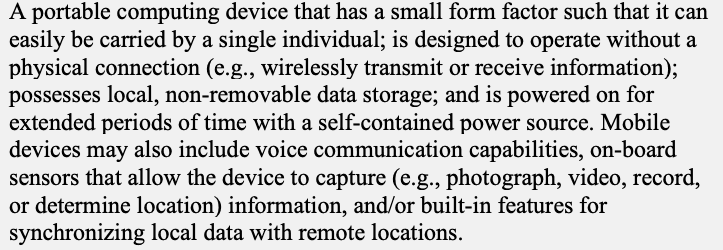
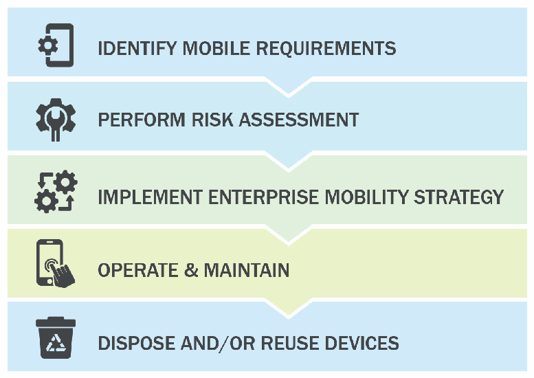

NIST SP 800-124 Rev. 2 日本語訳
英語タイトル : Guidelines for Managing the Security of Mobile Devices in the Enterprise日本語タイトル : 企業におけるモバイルデバイスのセキュリティ管理
公開日 : 2023-05-17
原文URL : https://csrc.nist.gov/pubs/sp/800/124/r2/final
翻訳編集 : 自動生成
[要約] SP 800-124 Rev. 2 は、企業がモバイルデバイスを管理・保護するための技術と戦略を説明し、セキュリティ管理のガイドラインを示します。モバイルデバイスの概要と企業での利用に伴う脅威を整理し、緩和策と対策、デバイスの導入・利用・廃棄というライフサイクル全体にわたる推奨事項を示します。対象範囲はモバイルデバイス、集中管理技術、エンドポイント保護技術で、組織支給と個人所有の両方の導入形態を含みます。
有志による非公式の日本語訳です。NIST および米国商務省が作成・承認・推奨したものではありません。要件の確認にはNIST の正式版 PDFを参照してください。
NIST Special Publication NIST SP 800-124r2
NIST特別刊行物 NIST SP 800-124r2
Guidelines for Managing the Security of Mobile Devices in the Enterprise
企業におけるモバイルデバイスのセキュリティ管理に関するガイドライン
Gema Howell
Gema Howell
Joshua M. Franklin
Joshua M. Franklin
Vincent Sritapan
Vincent Sritapan
Murugiah Souppaya
Murugiah Souppaya
Karen Scarfone
Karen Scarfone
NIST Special Publication NIST SP 800-124r2
NIST特別刊行物 NIST SP 800-124r2
Guidelines for Managing the Security of Mobile Devices in the Enterprise
企業におけるモバイルデバイスのセキュリティ管理に関するガイドライン
Gema Howell
Gema Howell
Joshua M Franklin*
Joshua M Franklin*
Applied Cybersecurity Division Information Technology Laboratory
情報技術研究所 応用サイバーセキュリティ部門
Vincent Sritapan
Vincent Sritapan
Cybersecurity and Infrastructure Security Agency Department of Homeland Security
国土安全保障省 サイバーセキュリティ・インフラストラクチャセキュリティ庁
Murugiah Souppaya
Murugiah Souppaya
Computer Security Division Information Technology Laboratory
情報技術研究所 コンピュータセキュリティ部門
Karen Scarfone
Karen Scarfone
Scarfone Cybersecurity
Scarfone Cybersecurity
*Former NIST employee; all work for this publication was done while at NIST.
*元NIST職員。本刊行物に関するすべての作業はNIST在職中に行われた。
May 2023
2023年5月
［米国商務省の紋章。公的な標章のため、この非公式サイトには掲載していない。原本 PDF を参照。］
U.S. Department of Commerce Gina M. Raimondo, Secretary
米国商務省 Gina M. Raimondo商務長官
National Institute of Standards and Technology
米国国立標準技術研究所
Laurie E. Locascio, NIST Director and Under Secretary of Commerce for Standards and Technology
Laurie E. Locascio、NIST長官兼標準・技術担当商務次官
Certain commercial equipment, instruments, software, or materials, commercial or non-commercial, are identified in this paper in order to specify the experimental procedure adequately. Such identification does not imply recommendation or endorsement of any product or service by NIST, nor does it imply that the materials or equipment identified are necessarily the best available for the purpose.
本論文では、実験手順を十分に特定するため、商用か非商用かを問わず、特定の商用機器、計測機器、ソフトウェア、または資材を明示している。このような明示は、NISTによる製品やサービスの推奨または支持を意味するものではなく、明示された資材や機器がその目的に最適であることを必ずしも意味するものでもない。
There may be references in this publication to other publications currently under development by NIST in accordance with its assigned statutory responsibilities. The information in this publication, including concepts and methodologies, may be used by federal agencies even before the completion of such companion publications. Thus, until each publication is completed, current requirements, guidelines, and procedures, where they exist, remain operative. For planning and transition purposes, federal agencies may wish to closely follow the development of these new publications by NIST.
NISTに割り当てられた法定責任に従って現在策定中の他の刊行物が、本刊行物で参照されている場合がある。連邦機関は、これら関連刊行物の完成前であっても、本刊行物に含まれる概念や方法論を含む情報を利用してよい。したがって、各刊行物が完成するまでは、現行の要件、ガイドライン、手順が存在する場合、それらが引き続き有効である。計画および移行のため、連邦機関はNISTによるこれらの新刊行物の策定状況を注意深く追うことが望ましい。
Organizations are encouraged to review all draft publications during public comment periods and provide feedback to NIST. Many NIST cybersecurity publications, other than the ones noted above, are available at https://csrc.nist.gov/publications.
組織は、パブリックコメント期間中にすべての草案刊行物を確認し、NISTに意見を提出することが推奨される。上記で触れたもの以外の多くのNISTサイバーセキュリティ刊行物は、https://csrc.nist.gov/publications から入手できる。
Authority This publication has been developed by NIST in accordance with its statutory responsibilities under the Federal Information Security Modernization Act (FISMA) of 2014, 44 U.S.C. § 3551 et seq., Public Law (P.L.) 113-283. NIST is responsible for developing information security standards and guidelines, including minimum requirements for federal information systems, but such standards and guidelines shall not apply to national security systems without the express approval of appropriate federal officials exercising policy authority over such systems. This guideline is consistent with the requirements of the Office of Management and Budget (OMB) Circular A-130.
権限 本刊行物は、2014年連邦情報セキュリティ近代化法（FISMA）、合衆国法典第44編第3551条以降、公法（P.L.）113-283に基づく法定責任に従ってNISTが策定した。NISTは、連邦情報システムの最低要件を含む情報セキュリティ標準およびガイドラインを策定する責任を負う。ただし、国家安全保障システムについては、そのシステムに関する政策権限を行使する適切な連邦当局者の明示的な承認がない限り、これらの標準およびガイドラインは適用されない。本ガイドラインは、行政管理予算局（OMB）通達A-130の要件に整合している。
Nothing in this publication should be taken to contradict the standards and guidelines made mandatory and binding on federal agencies by the Secretary of Commerce under statutory authority. Nor should these guidelines be interpreted as altering or superseding the existing authorities of the Secretary of Commerce, Director of the OMB, or any other federal official. This publication may be used by nongovernmental organizations on a voluntary basis and is not subject to copyright in the United States. Attribution would, however, be appreciated by NIST.
本刊行物のいかなる内容も、法定権限に基づき商務長官が連邦機関に義務付けた標準およびガイドラインに反するものと解釈してはならない。また、本ガイドラインは、商務長官、OMB局長、その他の連邦当局者の既存の権限を変更または置き換えるものではない。本刊行物は非政府組織が任意に利用できる。米国内では著作権の対象ではないが、NISTへの帰属表示を歓迎する。
NIST Technical Series Policies Copyright, Use, and Licensing Statements NIST Technical Series Publication Identifier Syntax
NIST技術シリーズの方針 著作権、利用、ライセンスに関する声明 NIST技術シリーズ刊行物識別子の構文
Publication History Approved by the NIST Editorial Review Board on 2023-05-05 Supersedes NIST SP 800-124 Revision 1 (June 2013) https://doi.org/10.6028/NIST.SP.800-124r1
刊行履歴 NIST編集審査委員会承認日：2023-05-05 NIST SP 800-124 Rev. 1（2013年6月）に代わるもの https://doi.org/10.6028/NIST.SP.800-124r1
How to Cite this NIST Technical Series Publication: Howell G, Franklin JM, Sritapan V, Souppaya MP, Scarfone KA (2023) Guidelines for Managing the Security of Mobile Devices in the Enterprise . (National Institute of Standards and Technology, Gaithersburg, MD), NIST Special Publication (SP) NIST SP 800-124r2. https://doi.org/10.6028/NIST.SP.800-124r2
NIST技術シリーズ刊行物の引用方法：Howell G、Franklin JM、Sritapan V、Souppaya MP、Scarfone KA（2023）Guidelines for Managing the Security of Mobile Devices in the Enterprise .（米国国立標準技術研究所、メリーランド州ゲイザースバーグ）、NIST特別刊行物（SP）NIST SP 800-124r2。https://doi.org/10.6028/NIST.SP.800-124r2
Author ORCID iDs
著者のORCID iD
Gema Howell: 0000-0002-0428-5045
Gema Howell: 0000-0002-0428-5045
Murugiah Souppaya: 0000-0002-8055-8527
Murugiah Souppaya: 0000-0002-8055-8527
Karen Scarfone: 0000-0001-6334-9486
Karen Scarfone: 0000-0001-6334-9486
Contact Information
連絡先
800-124comments@nist.gov
800-124comments@nist.gov
National Institute of Standards and Technology Attn: Computer Security Division, Information Technology Laboratory 100 Bureau Drive (Mail Stop 2000) Gaithersburg, MD 20899-2000
National Institute of Standards and Technology Attn: Computer Security Division, Information Technology Laboratory 100 Bureau Drive (Mail Stop 2000) Gaithersburg, MD 20899-2000
All comments are subject to release under the Freedom of Information Act (FOIA).
すべてのコメントは、情報自由法（FOIA）に基づき公開される可能性がある。
Abstract
概要
Mobile devices were initially personal consumer communication devices, but they are now permanent fixtures in enterprises and are used to access modern networks and systems to process sensitive data. This publication assists organizations in managing and securing these devices by describing available technologies and strategies. Security concerns inherent to the usage of mobile devices are explored alongside mitigations and countermeasures. Recommendations are provided for the deployment, use, and disposal of devices throughout the mobile-device life cycle. The scope of this publication includes mobile devices, centralized device management, and endpoint protection technologies, as well as both organization-provided and personally owned deployment scenarios.
モバイルデバイスは当初、個人向けの通信機器であったが、現在では企業に定着し、機微なデータを処理するために最新のネットワークやシステムへアクセスする用途で使われている。本刊行物は、利用可能な技術と戦略を説明し、組織がこうしたデバイスを管理・保護するための支援を行う。モバイルデバイスの利用に伴うセキュリティ上の懸念を取り上げ、緩和策と対策を示す。また、デバイスの導入、利用、廃棄というライフサイクル全体にわたる推奨事項を示す。対象範囲には、モバイルデバイス、集中管理技術、エンドポイント保護技術に加え、組織支給と個人所有の両方の導入形態が含まれる。
Keywords
キーワード
enterprise mobility management (EMM); mobile; mobile application vetting (MAV); mobile device management (MDM); mobile security; mobile threat defense (MTD); tablets.
エンタープライズ・モビリティ管理（EMM）、モバイル、モバイルアプリ審査（MAV）、モバイルデバイス管理（MDM）、モバイルセキュリティ、モバイル脅威防御（MTD）、タブレット
Reports on Computer Systems Technology
コンピュータシステム技術レポート
The Information Technology Laboratory (ITL) at the National Institute of Standards and Technology (NIST) promotes the U.S. economy and public welfare by providing technical leadership for the Nation’s measurement and standards infrastructure. ITL develops tests, test methods, reference data, proof of concept implementations, and technical analyses to advance the development and productive use of information technology. ITL’s responsibilities include the development of management, administrative, technical, and physical standards and guidelines for the cost-effective security and privacy of other than national security-related information in federal information systems. The Special Publication 800-series reports on ITL’s research, guidelines, and outreach efforts in information system security, and its collaborative activities with industry, government, and academic organizations.
米国国立標準技術研究所（NIST）の情報技術研究所（ITL）は、国の計量・標準基盤に技術的なリーダーシップを発揮し、米国経済と公共の福祉を支えている。ITLは、情報技術の発展と有効利用を促進するため、試験、試験方法、参照データ、概念実証実装、技術分析を開発している。また、国家安全保障関連以外の情報について、連邦情報システムにおける費用対効果の高いセキュリティとプライバシーを実現するための管理的、行政的、技術的、物理的な標準およびガイドラインの策定を担う。特別刊行物800シリーズは、ITLの研究、ガイドライン、普及活動、ならびに産業界、政府、学術機関との連携活動を報告するものである。
Trademark Information
商標に関する情報
All registered trademarks or other trademarks belong to their respective organizations.
登録商標その他の商標は、それぞれの組織に帰属する。
Patent Disclosure Notice
特許開示に関する通知
NOTICE: ITL has requested that holders of patent claims whose use may be required for compliance with the guidance or requirements of this publication disclose such patent claims to ITL. However, holders of patents are not obligated to respond to ITL calls for patents and ITL has not undertaken a patent search in order to identify which, if any, patents may apply to this publication. As of the date of publication and following call(s) for the identification of patent claims whose use may be required for compliance with the guidance or requirements of this publication, no such patent claims have been identified to ITL. No representation is made or implied by ITL that licenses are not required to avoid patent infringement in the use of this publication.
通知：ITLは、本刊行物のガイダンスまたは要件への準拠に必要となる可能性のある特許請求の範囲について、その保有者にITLへの開示を求めている。ただし、特許保有者に開示への応答義務はなく、ITLは該当する特許の有無を特定するための特許調査を実施していない。本刊行物の発行日現在、本刊行物への準拠に必要となる可能性のある特許請求の範囲の特定を呼びかけた後も、ITLに開示された該当特許はない。ITLは、本刊行物の利用に際して特許侵害を避けるためのライセンスが不要であると、明示または黙示に表明するものではない。
Table of Contents
目次
Executive Summary — 1
エグゼクティブサマリー — 1
Introduction — 2
はじめに — 2
Purpose — 3
目的 — 3
Scope — 3
適用範囲 — 3
Audience — 3
対象読者 — 3
Document Structure — 3
文書の構成 — 3
Document Conventions — 4
本書の表記規則 — 4
Overview of Mobile Devices — 4
モバイルデバイスの概要 — 4
Mobile Device Definition — 4
モバイルデバイスの定義 — 4
Mobile Device Characteristics — 5
モバイルデバイスの特性 — 5
Mobile Device Components — 6
モバイルデバイスの構成要素 — 6
Mobile Communication Mechanisms and Other Common Mobile Components — 7
モバイル通信方式とその他の一般的なモバイル構成要素 — 7
Threats to the Mobile Enterprise — 9
モバイル企業環境に対する脅威 — 9
Threats to Enterprise Use of Mobile Devices — 9
企業でのモバイルデバイス利用に対する脅威 — 9
3.1.1. Exploitation of Underlying Vulnerabilities in Devices — 9
3.1.1. デバイスの基盤となる脆弱性の悪用 — 9
3.1.2. Device Loss and Theft — 10
3.1.2. デバイスの紛失と盗難 — 10
3.1.3. Exploitation of Supply Chain Vulnerabilities — 10
3.1.3. サプライチェーンの脆弱性の悪用 — 10
3.1.4. Accessing Enterprise Resources Via a Misconfigured Device — 10
3.1.4. 設定ミスのあるデバイスを介した企業リソースへのアクセス — 10
3.1.5. Credential Theft Via Phishing — 11
3.1.5. フィッシングによる認証情報の窃取 — 11
3.1.6. Installation of Unauthorized Certificates — 11
3.1.6. 許可されていない証明書のインストール — 11
3.1.7. Use of Untrusted Mobile Devices — 11
3.1.7. 信頼されていないモバイルデバイスの利用 — 11
3.1.8. Wireless Eavesdropping — 11
3.1.8. 無線通信の盗聴 — 11
3.1.9. Mobile Malware — 12
3.1.9. モバイルマルウェア — 12
3.1.10. Information Loss Due to Insecure Lock Screen Configuration — 12
3.1.10. 安全でないロック画面設定による情報漏えい — 12
3.1.11. User Privacy Violations — 12
3.1.11. ユーザーのプライバシー侵害 — 12
3.1.12. Data Loss via Synchronization — 13
3.1.12. 同期によるデータ損失 — 13
3.1.13. Shadow IT Usage — 13
3.1.13. シャドーITの利用 — 13
Threats to Device Management Systems — 14
デバイス管理システムに対する脅威 — 14
3.2.1. Exploitation of Vulnerabilities within the Underlying EMM Platform — 14
3.2.1. EMMプラットフォームの基盤にある脆弱性の悪用 — 14
3.2.2. EMM Administrator Credential Theft — 14
3.2.2. EMM管理者の認証情報の窃取 — 14
3.2.3. Insider Threat — 15
3.2.3. 内部脅威 — 15
3.2.4. Installation of Malicious Developer and EMM Profiles — 15
3.2.4. 悪意ある開発者プロファイルおよびEMMプロファイルのインストール — 15
Overview of Mobile Security Technologies — 15
モバイルセキュリティ技術の概要 — 15
Device-Side Management and Security Technologies — 16
デバイス側の管理・セキュリティ技術 — 16
4.1.1. Hardware-Backed Processing and Storage — 16
4.1.1. ハードウェアに裏付けられた処理とストレージ — 16
4.1.2. Data Isolation Mechanisms — 16
4.1.2. データ分離機構 — 16
4.1.3. Platform Management APIs — 17
4.1.3. プラットフォーム管理API — 17
4.1.4. VPN Support — 17
4.1.4. VPNサポート — 17
4.1.5. Authentication Mechanisms — 17
4.1.5. 認証機構 — 17
Enterprise Mobile Security Technologies — 18
企業向けモバイルセキュリティ技術 — 18
4.2.1. Enterprise Mobility Management — 18
4.2.1. エンタープライズ・モビリティ管理 — 18
4.2.2. Mobile Application Management — 20
4.2.2. モバイルアプリケーション管理 — 20
4.2.3. Mobile Threat Defense — 21
4.2.3. モバイル脅威防御 — 21
4.2.4. Mobile App Vetting — 22
4.2.4. モバイルアプリ審査 — 22
4.2.5. Virtual Mobile Infrastructure — 22
4.2.5. 仮想モバイルインフラストラクチャ — 22
4.2.6. Application Wrapping — 23
4.2.6. アプリケーションラッピング — 23
4.2.7. Secure Containers — 23
4.2.7. セキュアコンテナ — 23
Recommended Mitigations and Countermeasures — 23
推奨される緩和策および対策 — 23
4.3.1. EMM Technologies — 25
4.3.1. EMM技術 — 25
4.3.2. Cybersecurity Recommended Practices — 26
4.3.2. サイバーセキュリティの推奨実践 — 26
4.3.3. Remote/Secure Wipe — 26
4.3.3. リモート消去／セキュア消去 — 26
4.3.4. Security-Focused Device Selection — 26
4.3.4. セキュリティを重視したデバイス選定 — 26
4.3.5. Use Secure Connections to Resources — 27
4.3.5. リソースへの安全な接続 — 27
4.3.6. Rapid Adoption of Software Updates — 28
4.3.6. ソフトウェア更新の迅速な適用 — 28
4.3.7. OS and Application Isolation — 29
4.3.7. OSとアプリケーションの分離 — 29
4.3.8. Mobile Application Vetting — 30
4.3.8. モバイルアプリ審査 — 30
4.3.9. Mobile Threat Defense — 30
4.3.9. モバイル脅威防御 — 30
4.3.10. User Education — 31
4.3.10. ユーザー教育 — 31
4.3.11. Mobile Device Security Policies — 31
4.3.11. モバイルデバイスのセキュリティポリシー — 31
4.3.12. Notification and Revocation of Enterprise Access — 32
4.3.12. 企業リソースへのアクセスの通知と失効 — 32
4.3.13. Strong Authentication — 32
4.3.13. 強固な認証 — 32
Enterprise Mobile Device Deployment Life Cycle — 33
企業におけるモバイルデバイス導入のライフサイクル — 33
Identify Mobile Requirements — 34
モバイル利用要件の特定 — 34
5.1.1. Explore Mobile Use Cases — 34
5.1.1. モバイルの利用ケースを検討する — 34
5.1.2. Survey Current Inventory — 34
5.1.2. 現在の資産一覧を調査する — 34
5.1.3. Choose Deployment Model — 35
5.1.3. 導入モデルを選択する — 35
5.1.4. Select Devices — 37
5.1.4. デバイスを選定する — 37
5.1.5. Determine EMM Capabilities — 37
5.1.5. EMMの機能を決定する — 37
Perform Risk Assessment — 38
リスク評価の実施 — 38
Implement Enterprise Mobility Strategy — 38
企業モビリティ戦略の実施 — 38
5.3.1. Select and Install Mobile Technology — 38
5.3.1. モバイル技術を選定して導入する — 38
5.3.2. Integration of EMM into the Enterprise Service Infrastructure — 41
5.3.2. EMMを企業サービス基盤に統合する — 41
5.3.3. Set Policy, Device Configuration, and Provision — 42
5.3.3. ポリシーとデバイス設定を行い、プロビジョニングする — 42
5.3.4. Define EMM Policy — 42
5.3.4. EMMポリシーを定義する — 42
5.3.5. Verification Testing — 44
5.3.5. 検証試験 — 44
5.3.6. Deployment Testing — 44
5.3.6. 展開試験 — 44
Operate and Maintain — 45
運用と保守 — 45
5.4.1. Auditing — 45
5.4.1. 監査 — 45
5.4.2. Device Usage — 46
5.4.2. デバイスの利用 — 46
Dispose of and/or Reuse Device — 46
デバイスの廃棄または再利用 — 46
References — 47
参考文献 — 47
Appendix A. Change Log — 51
付録A. 変更履歴 — 51
List of Tables
表一覧
Table 1. Threat Mitigations and Countermeasures — 24
表1. 脅威の緩和策と対策 — 24
List of Figures
図一覧
Fig. 1. Enterprise Mobile Device Lifecycle — 2
図1. 企業におけるモバイルデバイスのライフサイクル — 2
Fig. 2. Mobile Device Components — 7
図2. モバイルデバイスの構成要素 — 7
Fig. 3. Other Common Mobile Components — 8
図3. その他の一般的なモバイル構成要素 — 8
Fig. 4. Enterprise Mobile Device Deployment Life Cycle — 33
図4. 企業におけるモバイルデバイス導入のライフサイクル — 33
Fig. 5. Example On-Premises Mobile Architecture — 40
図5. オンプレミス型モバイルアーキテクチャの例 — 40
Fig. 6. Example Cloud-Based Mobile Architecture — 41
図6. クラウド型モバイルアーキテクチャの例 — 41
Acknowledgments
謝辞
The authors wish to thank the Federal CIO Council’s Mobile Technology Tiger Team and the Advanced Technology Academic Research Center (ATARC) Mobile Working Groups. The authors especially appreciate the contributions of Wayne Jansen, who co-authored the original version of this publication. The authors also thank all of the individuals and organizations that provided comments on the publication, including Andrew Regenscheid and Nelson Hastings of NIST, Jeffrey A. Myers of the Department of Homeland Security (DHS), Deborah Shands and Kareem Eldefrawy of SRI International, and Michael Peck and Terri Phillips of MITRE.
著者らは、連邦CIO評議会のモバイル技術タスクチーム、およびAdvanced Technology Academic Research Center（ATARC）のモバイル作業部会に感謝する。本刊行物の初版を共著したWayne Jansenの貢献に、特に感謝する。また、NISTのAndrew RegenscheidおよびNelson Hastings、国土安全保障省（DHS）のJeffrey A. Myers、SRI InternationalのDeborah ShandsおよびKareem Eldefrawy、MITREのMichael PeckおよびTerri Phillipsをはじめ、本刊行物に意見を寄せたすべての個人と組織に感謝する。
Executive Summary
エグゼクティブサマリー
Modern mobile devices, which are essentially general-purpose computing platforms capable of performing tasks far beyond the voice and text capabilities of legacy mobile devices, are widespread within modern enterprise networks. Mobility has transformed how enterprises deliver information technology (IT) services and accomplish their missions. Targeted toward consumers for on-demand personal access to communications, information, and services, these devices are not configured by default for business use. As mobile devices perform everyday enterprise tasks, they regularly process, modify, and store sensitive data. While organizations understand that using mobile devices and mobile applications for anytime, anywhere access can increase employee productivity and enhance decision making and situational awareness, these devices bring unique threats to the enterprise. As consumers and enterprise organizations have increased their adoption and use of mobile technologies, the mobile threat landscape has also shifted. This includes an increase in mobile malware and vulnerabilities that span the device (e.g., operating system, firmware, the baseband processor used to access cellular networks), mobile apps, networks, and management infrastructure. The diversity and complexity of the mobile ecosystem and the rapid pace of change challenge the selection, integration, and management of mobile technologies in enterprise IT environments. To reduce the risk to sensitive data and systems, enterprises need to institute appropriate policies and infrastructure to manage and secure mobile devices, applications, content, and access. Mobile devices often need additional protections as a result of their portability, small size, and common use outside of an organization’s network, which generally places them at higher exposure to threats than other endpoint devices. Laptops are excluded from the scope of this publication. Although some laptop/desktop management technologies are converging with mobile device management technologies, the security capabilities currently available for laptops are different than those available for smartphones, tablets, and other mobile device types. Furthermore, mobile devices contain features that are not generally available in laptops (e.g., multiple wireless network interfaces, Global Positioning System, numerous sensors, built-in mobile apps). Devices with minimal computing capability, such as the most basic cell phones and general Internet of Things (IoT) devices, are also out of scope because they typically do not have a full-fledged operating system (OS), and their functionality and available security options are limited. Organizations can use the Enterprise Mobile Device Deployment Life Cycle (Fig. 1) to improve the security of their mobile devices.
現代のモバイルデバイスは、本質的には従来型モバイルデバイスの音声・テキスト機能をはるかに超える作業を実行できる汎用コンピューティング基盤であり、今日の企業ネットワークに広く普及している。モビリティは、企業が情報技術（IT）サービスを提供し、その使命を達成する方法を変えた。これらのデバイスは、通信、情報、サービスに個人が必要に応じてアクセスできるよう消費者向けに設計されており、初期設定では業務利用向けに構成されていない。企業の日常業務に使われるモバイルデバイスは、センシティブなデータを定期的に処理、変更、保存する。組織は、モバイルデバイスやモバイルアプリケーションを使っていつでもどこでもアクセスできるようにすることで、従業員の生産性を高め、意思決定や状況認識を向上させられると理解しているが、これらのデバイスは企業に特有の脅威をもたらす。消費者と企業組織でモバイル技術の導入・利用が進むにつれ、モバイルの脅威環境も変化した。これには、デバイス（オペレーティングシステム、ファームウェア、携帯電話ネットワークへのアクセスに使うベースバンドプロセッサなど）、モバイルアプリ、ネットワーク、管理基盤にまたがるモバイルマルウェアや脆弱性の増加が含まれる。モバイルエコシステムの多様性と複雑さ、変化の速さは、企業IT環境でモバイル技術を選定、統合、管理するうえで課題となる。センシティブなデータとシステムへのリスクを減らすため、企業はモバイルデバイス、アプリケーション、コンテンツ、アクセスを管理・保護する適切なポリシーと基盤を整備する必要がある。モバイルデバイスは携帯性と小型さを備え、組織のネットワーク外で使われることも多いため、一般に他のエンドポイントデバイスより脅威にさらされやすく、追加の保護が必要となることが多い。本刊行物の対象にノートPCは含まれない。ノートPC／デスクトップの管理技術の一部はモバイルデバイス管理技術と融合しつつあるが、現時点で利用できるノートPCのセキュリティ機能は、スマートフォン、タブレット、その他の種類のモバイルデバイスで利用できるものとは異なる。また、複数の無線ネットワークインターフェース、全地球測位システム、多数のセンサー、組み込みモバイルアプリなど、ノートPCには一般にない機能もモバイルデバイスには備わっている。最も基本的な携帯電話や一般的なモノのインターネット（IoT）デバイスのように計算能力が限られるデバイスも対象外である。通常、こうしたデバイスは本格的なオペレーティングシステム（OS）を備えず、機能や利用可能なセキュリティ選択肢も限られているためである。組織は、モバイルデバイスのセキュリティ向上に、企業向けモバイルデバイス導入のライフサイクル（図1）を活用できる。
図1. 企業におけるモバイルデバイスのライフサイクル。下向きの山形でつながった5つの帯が上から順に並び、それぞれにアイコンがある。IDENTIFY MOBILE REQUIREMENTS（モバイル要件の特定、歯車付きの電話）、PERFORM RISK ASSESSMENT（リスク評価の実施、レンチ付きの歯車）、IMPLEMENT ENTERPRISE MOBILITY STRATEGY（企業モビリティ戦略の実装、矢印付きの歯車）、OPERATE & MAINTAIN（運用と保守、電話をタップする手）、DISPOSE AND/OR REUSE DEVICES（デバイスの廃棄および／または再利用、リサイクル記号付きのごみ箱）である。
Fig. 1. Enterprise Mobile Device Lifecycle
図1. 企業におけるモバイルデバイスのライフサイクル
Organizations can implement the following to build and maintain the security of their mobile device deployment:
組織は、モバイルデバイス導入のセキュリティを構築・維持するため、次の対策を実施できる。
•Conduct a threat analysis for mobile devices and any information systems accessed from mobile devices.
•モバイルデバイスと、そこからアクセスする情報システムについて脅威分析を行う。
•Employ enterprise mobility management, mobile threat defense, mobile application vetting, and other applicable enterprise mobile security technologies.
•エンタープライズ・モビリティ管理、モバイル脅威防御、モバイルアプリ審査、その他該当する企業向けモバイルセキュリティ技術を導入する。
•Implement and test a pilot of a mobile device solution before putting the solution into production.
•モバイルデバイスのソリューションを本番環境に導入する前に、試験運用を実施して検証する。
•Fully secure each organization-issued mobile device before allowing a user to access the organization’s systems or information.
•組織支給の各モバイルデバイスを十分に保護してから、利用者に組織のシステムや情報へのアクセスを許可する。
•Keep mobile operating systems and apps updated.
•モバイルOSとアプリを最新の状態に保つ。
•Regularly monitor and maintain mobile device security.
•モバイルデバイスのセキュリティを定期的に監視し、保守する。
1. Introduction
1. はじめに
Mobile devices are no longer new to the workplace. Modern mobile devices are essentially general-purpose computing platforms capable of performing tasks far beyond the voice and text capabilities of legacy mobile devices. Smartphones and tablets process enterprise information and are regularly included in the design phase of modern network architectures. Multiple mature mobile operating systems (OSs) are available in the marketplace and have a variety of functionality to secure these devices in the workplace. New mobile technologies for the enterprise are still being introduced. Full equity does not yet exist when comparing the management technology available for traditional desktop environments and those afforded to security professionals to secure their mobile devices, although they are constantly evolving and maturing.
モバイルデバイスは、もはや職場にとって新しいものではない。現代のモバイルデバイスは汎用コンピューティング基盤であり、従来型端末の音声・テキスト機能を超える多様な作業を実行できる。スマートフォンやタブレットは企業情報を処理し、現代のネットワークアーキテクチャの設計段階から組み込まれることも一般的である。複数の成熟したモバイルOSが市場で利用でき、職場でデバイスを保護する多様な機能を備えている。企業向けの新しいモバイル技術も導入され続けている。従来のデスクトップ環境で利用できる管理技術と、セキュリティ担当者がモバイルデバイスの保護に使える技術の間には、まだ機能の均衡がない。ただし、これらの技術は継続的に進化し、成熟している。
1.1. Purpose
1.1. 目的
The purpose of this publication is to assist organizations with managing and securing mobile devices. This publication provides recommendations for selecting, implementing, and managing devices throughout their life cycle via centralized management technologies. Additionally, security concerns inherent to mobile devices are explored alongside mitigation strategies. This approach includes protecting enterprise information such as email, contacts, calendar, and web browsing, which are some of the most commonly used applications in the workplace. This can be expanded to include the protection of enterprise-developed and third-party applications and the sensitive enterprise data they store and process. Recommendations are also provided for the deployment, use, and disposal of devices throughout the mobile device life cycle. This publication can be used to inform risk assessments, build threat models, enumerate the attack surface of the mobile infrastructure, and identify mitigations for mobile deployments.
本刊行物の目的は、組織によるモバイルデバイスの管理と保護を支援することである。集中管理技術を用いて、ライフサイクル全体にわたりデバイスを選定、導入、管理するための推奨事項を示す。また、モバイルデバイスに固有のセキュリティ上の懸念と、その緩和策を取り上げる。このアプローチでは、職場で一般的に使われる電子メール、連絡先、カレンダー、ウェブ閲覧などの企業情報を保護する。企業が開発したアプリやサードパーティ製アプリ、およびそれらが保存・処理する機微な企業データも保護対象にできる。さらに、モバイルデバイスのライフサイクル全体を通じた導入、利用、廃棄の推奨事項を示す。本刊行物は、リスク評価、脅威モデルの構築、モバイル基盤の攻撃対象領域の列挙、モバイル環境における緩和策の特定にも役立つ。
1.2. Scope
1.2. 適用範囲
This publication is scoped to the management of mobile devices in the enterprise. Mobile devices primarily include mobile phones and tablets but also include other devices that run a modern mobile OS, such as Chromebooks which can run Android apps. Laptops are specifically excluded from the scope of this publication as the security controls available today for laptops are quite different than those available for mobile phones, tablets, and other mobile device types. Mobile devices with minimal computing capability are excluded, including feature phones, wearables, and other devices included under the Internet of Things (IoT) umbrella. This document does not discuss the mechanisms needed to evaluate the security of mobile applications [2] or to securely deploy and maintain a cellular network [3]. Unique feature sets available in specialized areas (e.g., construction, public safety, medical) are not analyzed or discussed.
本刊行物の対象は、企業におけるモバイルデバイスの管理である。主な対象は携帯電話とタブレットであるが、Androidアプリを実行できるChromebookなど、最新のモバイルOSを搭載する他のデバイスも含む。ノートPCは、本日時点で利用できるセキュリティ管理策が携帯電話、タブレット、その他のモバイルデバイスとは大きく異なるため、明示的に対象外とする。フィーチャーフォン、ウェアラブル、その他IoTに含まれる計算能力の限られたモバイルデバイスも対象外である。本書では、モバイルアプリのセキュリティ評価に必要な仕組み[2]や、携帯電話網を安全に導入・維持する方法[3]は扱わない。建設、公共安全、医療などの専門分野に固有の機能も分析・説明の対象外である。
1.3. Audience
1.3. 対象読者
This document is intended for information security officers, information security engineers, security analysts, system administrators, chief information officers (CIOs), and chief information security officers (CISOs). Other organization personnel may find this document helpful, such as security managers, engineers, analysts, administrators, and others who are responsible for planning, implementing, and maintaining the security of mobile devices. This document assumes that readers have a basic understanding of mobile device technologies, networking, and enterprise security principles.
本書は、情報セキュリティ責任者、情報セキュリティエンジニア、セキュリティアナリスト、システム管理者、最高情報責任者（CIO）、最高情報セキュリティ責任者（CISO）を対象とする。モバイルデバイスのセキュリティを計画、実装、維持する責任を持つセキュリティマネージャー、エンジニア、アナリスト、管理者など、組織内の他の担当者にも役立つ場合がある。読者がモバイルデバイス技術、ネットワーク、企業セキュリティの基本を理解していることを前提とする。
1.4. Document Structure
1.4. 文書の構成
The remainder of this document is organized into the following sections and appendices:
本書の残りの部分は、次の節および付録で構成されている。
•Section 2 provides an overview of mobile devices that focuses on what makes them different from other computing devices, particularly in terms of security.
•第2節では、特にセキュリティの観点から他のコンピューティングデバイスとの違いに着目し、モバイルデバイスの概要を説明する。
•Section 3 discusses threats to an enterprise’s use of mobile devices.
•第3節では、企業がモバイルデバイスを利用する際の脅威を説明する。
•Section 4 presents an overview of mobile security technologies and discusses mitigations and countermeasures to the threats listed in Section 3.
•第4節では、モバイルセキュリティ技術の概要を示し、第3節で挙げた脅威への緩和策と対策を説明する。
•Section 5 discusses security throughout the mobile device life cycle. Examples of topics addressed in this section include mobile device security policy creation, design and implementation considerations, and operational processes that are particularly helpful for security.
•第5節では、モバイルデバイスのライフサイクル全体におけるセキュリティを説明する。モバイルデバイスのセキュリティポリシーの策定、設計・実装時の考慮事項、セキュリティに役立つ運用プロセスなどを扱う。
•The References section contains a complete list of references cited in this document.
•「参考文献」には、本書で引用した文献をすべて掲載している。
•Appendix A defines selected acronyms and abbreviations used in this publication.
•付録Aでは、本刊行物で使用する一部の頭字語と略語を定義する。
1.5. Document Conventions
1.5. 本書の表記規則
The following conventions are used throughout this document:
本書では、次の表記規則を使用する。
•“app” is used in place of mobile application.
•「モバイルアプリケーション」の代わりに「アプリ」を使用する。
•WiFi is written without a hyphen
•Wi-Fiはハイフンを付けずに「WiFi」と表記する。
2. Overview of Mobile Devices
2. モバイルデバイスの概要
This section defines what a modern mobile device is, outlines the characteristics of mobile devices, and discusses their underlying architecture. Understanding the full composition of a mobile device is useful in defining the threats facing these information systems. This section also provides an overview of built-in security capabilities, such as isolation, communication, and authentication mechanisms.
この節では、現代のモバイルデバイスの定義と特性を示し、その基盤となるアーキテクチャを説明する。モバイルデバイスの構成を全体的に理解することは、これらの情報システムが直面する脅威を定義するうえで役立つ。また、分離、通信、認証の仕組みなど、組み込みのセキュリティ機能の概要も示す。
2.1. Mobile Device Definition
2.1. モバイルデバイスの定義
Mobile devices are essentially general-purpose computing platforms. They are not restricted to performing one operation and can instead be used in many different domains, including medical, industrial, and entertainment. NIST SP 800-53, Rev. 5 [1] defines a mobile device as:
モバイルデバイスは、基本的に汎用コンピューティング基盤である。単一の操作だけを行うものではなく、医療、産業、娯楽などさまざまな分野で利用できる。NIST SP 800-53 Rev. 5 [1]では、モバイルデバイスを次のように定義している。
A portable computing device that has a small form factor such that it can easily be carried by a single individual; is designed to operate without a physical connection (e.g., wirelessly transmit or receive information); possesses local, non-removable data storage; and is powered on for extended periods of time with a self-contained power source. Mobile devices may also include voice communication capabilities, on-board sensors that allow the device to capture (e.g., photograph, video, record, or determine location) information, and/or built-in features for synchronizing local data with remote locations.
原本PDFの抜粋画像

単独の個人が容易に携帯できる小型のコンピューティングデバイスであり、物理的な接続なしに動作するよう設計され（例：無線による情報の送受信）、ローカルの取り外し不可能なデータストレージを備え、内蔵電源で長時間動作するもの。モバイルデバイスには、音声通信機能、写真撮影・動画撮影・録音・位置特定などの情報取得を可能にする搭載センサー、またはローカルデータを遠隔地と同期する組み込み機能が含まれる場合もある。
This definition emphasizes portability, wireless communication, local storage, and long battery life – all of which exist in modern smartphones and tablets. It is common for these systems to have an always-on cellular connection, but this feature is not shared by all mobile devices. In fact, many tablets lack a cellular modem yet still run a mobile OS. It is also not a requirement that mobile devices run applications or apps, although this capability is commonplace. Applications are used to expand a mobile device’s basic functionality.
この定義は、携帯性、無線通信、ローカルストレージ、長時間のバッテリー駆動を重視している。これらは現代のスマートフォンとタブレットに共通する特性である。常時接続の携帯電話通信機能を備えるシステムは一般的であるが、すべてのモバイルデバイスに備わっているわけではない。実際、多くのタブレットは携帯電話モデムを搭載していなくても、モバイルOSを実行する。モバイルデバイスにアプリケーションやアプリの実行機能が必須というわけではないが、現在では一般的な機能である。アプリケーションを使うことで、モバイルデバイスの基本機能を拡張できる。
2.2. Mobile Device Characteristics
2.2. モバイルデバイスの特性
Commercially available mobile devices lack a unified set of features. Each feature and characteristic has the potential to introduce new threats to security and privacy, so it is important to establish a baseline understanding of the set of characteristics that are common to mobile devices. The following list explores the baseline characteristics of a mobile device for the purposes of this publication:
市販のモバイルデバイスには、統一された機能セットがない。各機能や特性は、セキュリティとプライバシーに新たな脅威をもたらす可能性がある。そのため、モバイルデバイスに共通する特性の基準を理解しておくことが重要である。以下では、本刊行物におけるモバイルデバイスの基本的な特性を示す。
•Operating system: A mobile device comes with a rich OS that can be used in a variety of ways. This is the primary distinction between mobile devices and IoT devices, which typically do not have a full-fledged OS and have limited functionality.
•OS：モバイルデバイスには、多様な用途に使える高機能なOSが搭載されている。これは、通常、本格的なOSを持たず機能も限定されるIoTデバイスとモバイルデバイスを区別する主な点である。
•Small form factor: The size of a mobile device allows for easy portability.
•小型の筐体：モバイルデバイスは小型で、容易に携帯できる。
•Self-contained power source: Mobile devices traditionally house a self-contained power source. Some mobile devices are capable of swapping out their battery power source for another.
•内蔵電源：従来、モバイルデバイスには内蔵電源が備わっている。電池を別の電源と交換できるデバイスもある。
•Physical port: A physical connection can be used to sync/transfer data or to charge the device. Some phones have wireless charging capabilities.
•物理ポート：物理接続を使ってデータを同期・転送したり、デバイスを充電したりできる。ワイヤレス充電に対応する携帯電話もある。
•Wireless network interface: Mobile devices have at least one wireless network interface for data communications, often offering connectivity to the internet or other data networks.
•無線ネットワークインターフェース：モバイルデバイスには、データ通信のための無線ネットワークインターフェースが少なくとも1つあり、多くの場合、インターネットや他のデータネットワークに接続できる。
•Data storage: Mobile devices contain local, built-in, and non-removable data storage.
•データストレージ：モバイルデバイスには、ローカルに組み込まれた取り外し不可能なデータストレージがある。
•Apps: A mobile device ships with native apps to handle common operations. Beyond native apps, most mobile devices also support third-party apps, which usually add functionality and significantly expand a device’s utility.
•アプリ：モバイルデバイスには一般的な操作を行う標準アプリが付属する。多くのデバイスは標準アプリに加えてサードパーティ製アプリにも対応しており、通常、機能と利便性を大きく拡張する。
•Management capability: Mobile devices include a consistent way to manage the device via application programming interfaces (APIs) or proprietary mechanisms.
•管理機能：モバイルデバイスには、アプリケーションプログラミングインターフェース（API）または独自の仕組みによってデバイスを一貫して管理する手段がある。
The following details other common characteristics of mobile devices. These features do not define the scope of devices included in the publication but rather indicate features that are particularly important in terms of security. This is not intended to be an exhaustive list.
以下では、モバイルデバイスに一般的なその他の特性を説明する。これらは対象デバイスの範囲を定めるものではなく、セキュリティ上特に重要な機能を示すものである。網羅的な一覧ではない。
•Network services: A mobile device may come with additional networking capabilities, such as Bluetooth, WiFi, near-field communications (NFC), and cellular data and voice (e.g., 4G LTE or 5G).
•ネットワークサービス：モバイルデバイスには、Bluetooth、WiFi、近距離無線通信（NFC）、携帯電話のデータ・音声通信（例：4G LTEや5G）など、追加のネットワーク機能が付属する場合がある。
•• Camera: Mobile devices may use one or more digital cameras that are capable of capturing photos and video recordings. Cameras also accept biometric input to unlock a device or can interpret non-human readable data formats (e.g., Quick Response [QR] codes).
•• カメラ：モバイルデバイスには、写真や動画を撮影できるデジタルカメラが1つ以上搭載されている場合がある。カメラは、デバイスのロックを解除するための生体情報の入力を受け付けることもあれば、人が直接読めない形式のデータ（例：クイックレスポンス［QR］コード）を解釈することもある。
•Sensors: Sensors within a mobile device capture data to perform an operation, such as authentication or measurement. Examples include a gyroscope, accelerometer, magnetometer, biometric reader, pedometer, infrared, barometer, photometer, and thermometer.
•センサー：モバイルデバイス内のセンサーは、認証や測定などの処理に使うデータを取得する。例として、ジャイロスコープ、加速度計、磁力計、生体認証リーダー、歩数計、赤外線センサー、気圧計、照度計、温度計がある。
•Speaker and/or microphone: A mobile device usually has a speaker that provides an audio output ability and/or a microphone that provides audio input ability.
•スピーカーまたはマイク：モバイルデバイスには通常、音声を出力するスピーカー、または音声を入力するマイク、あるいはその両方が備わっている。
•Removable media: Removable media allows for additional data and memory storage on a mobile device, normally provided through a secure digital (SD) card. Removable media also serves as a way to transport data from one mobile device to another device.
•リムーバブルメディア：リムーバブルメディアを使うと、通常はセキュアデジタル（SD）カードを介して、モバイルデバイスのデータやメモリを追加できる。また、あるモバイルデバイスから別のデバイスへデータを移す手段にもなる。
•Data synchronization/backup services: Mobile devices have built-in features for synchronizing local data with a different storage location (e.g., desktop or laptop computer, organization servers, telecommunications provider servers, other third-party servers, etc.).
•データ同期・バックアップサービス：モバイルデバイスには、ローカルデータを別の保存先（例：デスクトップやノートPC、組織のサーバー、通信事業者のサーバー、その他のサードパーティサーバー）と同期する機能が組み込まれている。
•Hardware-backed security module: A mobile device uses a hardware module or some portion of a hardware chip to perform cryptographic functions and store sensitive cryptographic keys and secrets.
•ハードウェア保護セキュリティモジュール：モバイルデバイスは、ハードウェアモジュールまたはハードウェアチップの一部を使って、暗号機能を実行し、機微な暗号鍵や秘密情報を保存する。
2.3. Mobile Device Components
2.3. モバイルデバイスの構成要素
Multiple organizations work in concert to provide the hardware, firmware, software, and other technology that make up a mobile device. For smartphones and tablets with cellular capabilities, a separation exists between the hardware and firmware used to access cellular networks and the hardware and firmware used to operate the general-purpose mobile OS. Users and administrators generally interact with the general-purpose mobile OS that utilizes the application processor. The hardware and firmware used to access the cellular network, often referred to as the telephony subsystem, typically runs a completely separate real-time operating system (RTOS). This telephony subsystem utilizes a completely separate system on a chip (SoC) called the baseband processor. This often means that a cellular-enabled smartphone is concurrently running multiple OSs.
モバイルデバイスを構成するハードウェア、ファームウェア、ソフトウェアなどの技術は、複数の組織が協調して提供している。携帯電話通信機能を備えたスマートフォンやタブレットでは、携帯電話網へのアクセスに使用するハードウェアおよびファームウェアと、汎用のモバイル OS の動作に使用するハードウェアおよびファームウェアが分離されている。ユーザーや管理者は、通常、アプリケーションプロセッサを利用する汎用のモバイル OS を操作する。携帯電話網へのアクセスに使用するハードウェアとファームウェアは、テレフォニーサブシステムと呼ばれることが多く、通常、完全に独立したリアルタイム OS（RTOS）を実行する。このテレフォニーサブシステムは、ベースバンドプロセッサと呼ばれる完全に独立したシステムオンチップ（SoC）を利用する。これは、携帯電話通信に対応したスマートフォンが複数の OS を同時に実行していることが多いことを意味する。
Other features of the telephony subsystem include the universal integrated circuit card (UICC), international mobile equipment identifier (IMEI), and the international mobile subscriber identity (IMSI), also known as a subscription permanent identifier (SUPI). The UICC, also known as the subscriber identity module (SIM) card, stores cryptographic information and personal data and is used to enable access to the cellular network. The IMEI is an identifier specific to a mobile device and is used to uniquely identify a device to the cellular network. The IMSI is used to uniquely identify a subscriber or user on the network. More information on these features can be found in NIST SP 800-187, Guide to LTE Security [3].
テレフォニーサブシステムのその他の機能には、汎用 IC カード（UICC）、国際移動体装置識別番号（IMEI）、および国際移動体加入者識別番号（IMSI。加入者永続識別子（SUPI）ともいう）がある。UICC は、加入者識別モジュール（SIM）カードとも呼ばれ、暗号情報や個人データを格納し、携帯電話網へのアクセスを可能にするために使用される。IMEI はモバイルデバイスに固有の識別子であり、携帯電話網に対してデバイスを一意に識別するために使用される。IMSI は、ネットワーク上で加入者またはユーザーを一意に識別するために使用される。これらの機能の詳細は、NIST SP 800-187『Guide to LTE Security』[3] を参照されたい。
A set of lower-level systems exists in the form of firmware to initialize the device and load the mobile OS into memory, which includes the bootloader. This initialization firmware may also verify other device initialization code, including device drivers. All of this activity occurs before a user can interact with the device. If the initialization code is modified or tampered with, the device may not properly boot or may function in a completely unacceptable manner (e.g., a Trojan horse). Many modern mobile devices contain an isolated execution environment that is used specifically for security-critical functions [6]. For example, these environments may be used for sensitive cryptographic operations (e.g., to verify integrity) or to support digital rights management (DRM). These environments typically have access to some amount of secure storage that is only accessible within that environment.
ブートローダーを含め、デバイスを初期化してモバイル OS をメモリにロードするための、ファームウェアの形態の下位システム群が存在する。この初期化用ファームウェアは、デバイスドライバを含む他のデバイス初期化コードを検証することもある。これらの処理はすべて、ユーザーがデバイスを操作できるようになる前に行われる。初期化コードが改変または改ざんされると、デバイスが正しく起動しなかったり、まったく許容できない動作（例：トロイの木馬）をしたりするおそれがある。最近のモバイルデバイスの多くは、セキュリティ上重要な機能のために特に用意された分離実行環境を備えている [6]。例えば、これらの環境は、セキュリティ上重要な暗号処理（例：完全性の検証）やデジタル著作権管理（DRM）のサポートに使用されることがある。これらの環境は通常、その環境内からのみアクセスできるセキュアストレージをある程度利用できる。
The mobile OS enables a rich set of functionalities by supporting the use of mobile apps written by third-party developers. All mobile apps are sandboxed (or securely separated) in some manner to prevent unexpected and unwanted interactions between the system, its apps, and those apps’ respective data. This includes preventing user data stored by different apps from interacting with each other. Mobile apps may be written in a native language running close to the hardware, in interpreted languages, or in high-level web languages. The degree of functionality of mobile applications is highly dependent on the APIs exposed by the mobile OS and the frameworks used by the developer. Functionality is also dependent on the level of permissions granted to allow the mobile app to leverage mobile device features, such as the camera or microphone.
モバイル OS は、第三者の開発者が作成したモバイルアプリの利用をサポートすることで、豊富な機能を可能にする。すべてのモバイルアプリは、システム、アプリ、およびそれらのアプリのデータの間で予期しない望ましくない相互作用が生じることを防ぐため、何らかの方法でサンドボックス化（安全に分離）されている。これには、異なるアプリが格納したユーザーデータが互いに作用することの防止も含まれる。モバイルアプリは、ハードウェアに近いところで動作するネイティブ言語、インタープリタ言語、または高水準のウェブ言語で書かれることがある。モバイルアプリケーションの機能の程度は、モバイル OS が公開する API と開発者が使用するフレームワークに大きく依存する。機能は、モバイルアプリがカメラやマイクなどのモバイルデバイスの機能を利用することを許可する権限のレベルにも依存する。
This section has described the various technologies that work together to make a mobile device function. Fig. 2 illustrates a visual model of the previously discussed layers of a mobile device.
この節では、モバイルデバイスを機能させるために連携するさまざまな技術について説明した。図 2 は、前述したモバイルデバイスの各層を視覚的なモデルとして示したものである。
![Fig. 2. Mobile Device Components. On the left, a phone shows four stacked layers: Application, Operating System, Firmware and Hardware. To the right, tilted phone-shaped panels expand each layer. Hardware: Application Processor and Memory; Baseband Processor and Memory; Security Modules; Peripherals, SIM, Camera, etc. Firmware: Initialization Code; Boot Loader; Device Drivers. Mobile OS: Application Sandbox; Kernel; Media Services; Runtime Environment. Application: 3rd Party Libraries; Data; Permissions; Exposed Services. Device: a smartphone screen with app icons.](assets/124r2/p0017-figure-01.png)
図2. モバイルデバイスの構成要素。左の電話には、APPLICATION（アプリケーション）、OPERATING SYSTEM（オペレーティングシステム）、FIRMWARE（ファームウェア）、HARDWARE（ハードウェア）の4つの層が積み重なっている。右には電話の形をした傾いたパネルが並び、各層の中身を示す。HARDWARE: アプリケーションプロセッサとメモリ、ベースバンドプロセッサとメモリ、セキュリティモジュール、周辺機器・SIM・カメラなど。FIRMWARE: 初期化コード、ブートローダー、デバイスドライバー。MOBILE OS（モバイルOS）: アプリケーションサンドボックス、カーネル、メディアサービス、ランタイム環境。APPLICATION: サードパーティのライブラリ、データ、パーミッション、公開サービス。DEVICE（デバイス）: アプリのアイコンが並ぶスマートフォンの画面。
Fig. 2. Mobile Device Components
図2. モバイルデバイスの構成要素
2.4. Mobile Communication Mechanisms and Other Common Mobile Components
2.4. モバイル通信方式とその他の一般的なモバイル構成要素
Mobile devices support a variety of wireless communication protocols, such as cellular, WiFi, Bluetooth, Global Positioning System (GPS), and NFC. Wired physical connections are also commonplace via a power and synchronization cable using Micro-USB, USB-C, and others. Fig. 3 depicts some of the communication mechanisms offered and additional common components found in mobile devices.
モバイルデバイスは、携帯電話通信、WiFi、Bluetooth、全地球測位システム（GPS）、NFCなど、さまざまな無線通信プロトコルに対応している。Micro-USBやUSB-Cなどの電源・同期ケーブルによる有線接続も一般的である。図3に、利用可能な通信方式と、モバイルデバイスに一般的なその他の構成要素を示す。
![Fig. 3. Other Common Mobile Components. A phone in the center shows ten icons, each linked by a line to a labeled description. Left: Cellular – used for voice, text, and data services provided by cell radio network carriers; Bluetooth® Technology – personal area networking used for file sharing and linking peripheral devices; Near-Field Communication (NFC) – used for low data rate transfers, smart card emulation, and reading RFID tags; Subscriber Identity Module (SIM) – removable hardware token providing data storage and cellular access; Biometric Authentication – used for fingerprint scanning or facial recognition to unlock the device. Right: WiFi – local area networking used for access to connect resources of the internet; Secure Digital (SD) Card – used for additional storage capacity or transferring data between devices; Global Positioning System (GPS) – use of orbiting satellites to determine the geographic location of the device; Power Synchronization Cable – wired connection used for charging and exchanging data with a computer; Environmental Sensors – used for a wide range of input, including precise navigation, game controls, and screen brightness.](assets/124r2/p0018-figure-01.png)
図3. その他の一般的なモバイル構成要素。中央の電話に10個のアイコンがあり、それぞれ線で説明に結ばれている。左側: CELLULAR（携帯電話通信）– 携帯無線ネットワーク事業者が提供する音声・テキスト・データサービスに使用、BLUETOOTH® TECHNOLOGY（Bluetooth 技術）– ファイル共有と周辺機器の接続に使用するパーソナルエリアネットワーク、NEAR-FIELD COMMUNICATION (NFC)（近距離無線通信）– 低速のデータ転送、スマートカードのエミュレーション、RFID タグの読み取りに使用、SUBSCRIBER IDENTITY MODULE (SIM)（加入者識別モジュール）– データ保存と携帯電話網へのアクセスを提供する取り外し可能なハードウェアトークン、BIOMETRIC AUTHENTICATION（生体認証）– デバイスのロック解除のための指紋読み取りまたは顔認識に使用。右側: WIFI – インターネットの資源への接続に使用するローカルエリアネットワーク、SECURE DIGITAL (SD) CARD（SD カード）– 追加の記憶容量またはデバイス間のデータ転送に使用、GLOBAL POSITIONING SYSTEM (GPS)（全地球測位システム）– 周回衛星を用いたデバイスの地理的位置の特定、POWER SYNCHRONIZATION CABLE（電源・同期ケーブル）– 充電とコンピュータとのデータ交換に使用する有線接続、ENVIRONMENTAL SENSORS（環境センサー）– 精密なナビゲーション、ゲーム操作、画面の明るさなど幅広い入力に使用。
Fig. 3. Other Common Mobile Components
図3. その他の一般的なモバイル構成要素
WiFi is a wireless local area network (WLAN) technology and is generally available on most mobile devices. WiFi devices often connect via a centralized wireless access point (AP) but can also work in a device-to-device ad hoc mode. Bluetooth is a short-range wireless communication technology primarily used to establish wireless personal area networks (WPANs). Bluetooth technology is common in consumer mobile devices and can be used to communicate with headsets, wearables, keyboards, mice, and other IoT devices. Another form of short-range wireless communication is NFC, which is typically optimized for distances of less than 4 inches but may be vulnerable at greater distances. NFC is based on the radio frequency identification (RFID) set of standards. Mobile payment technology commonly relies on NFC, which has led to a large increase of use in recent years. A global navigational satellite system (GNSS) provides worldwide, geospatial positioning via GPS. GPS uses line-of-sight communication with a satellite constellation in orbit to help a handset determine its location. These systems run independently of cellular networks. The U.S. Federal Government operates a GPS constellation, although mobile devices may use other constellations (e.g., Global Navigation Satellite System [GLONASS], Galileo). The U.S. Federal Communications Commission (FCC) mandates that cellular devices must have GPS built-in for public safety and emergency medical reasons. It should be noted that the GPS system is not the only way to identify a mobile device’s location. Other techniques include cellular positioning, WiFi-assisted positioning, and geolocation of IP addresses.
WiFiは無線ローカルエリアネットワーク（WLAN）技術で、ほとんどのモバイルデバイスで一般に利用できる。WiFiデバイスは集中管理型の無線アクセスポイント（AP）経由で接続することが多い一方、端末間のアドホックモードでも動作する。Bluetoothは短距離無線通信技術で、主に無線パーソナルエリアネットワーク（WPAN）の構築に使われる。Bluetoothは一般消費者向けモバイルデバイスで普及しており、ヘッドセット、ウェアラブル、キーボード、マウス、その他のIoTデバイスとの通信に利用できる。もう一つの短距離無線通信であるNFCは、通常は4インチ未満の距離に最適化されているが、より離れた距離でも脆弱性が生じる可能性がある。NFCは無線自動識別（RFID）規格群に基づく。モバイル決済技術はNFCに依存することが多く、近年その利用が大きく増えている。全球航法衛星システム（GNSS）は、GPSを通じて地球規模の地理空間測位を提供する。GPSは軌道上の衛星群との見通し通信を使い、携帯端末が位置を特定できるようにする。これらのシステムは携帯電話網とは独立して動作する。米国連邦政府はGPS衛星群を運用しているが、モバイルデバイスは他の衛星群（例：GLONASS、Galileo）を利用する場合もある。米国連邦通信委員会（FCC）は、公共安全および救急医療上の理由から、携帯電話端末にGPSを内蔵することを義務付けている。GPSだけがモバイルデバイスの位置を特定する方法ではない。携帯電話網による測位、WiFiを利用した測位、IPアドレスのジオロケーションなどの方法もある。
3. Threats to the Mobile Enterprise
3. 企業におけるモバイルデバイスの脅威
Mobile devices support a series of security objectives, but these can differ based on the organization. These mobile security objectives can be accomplished via a combination of security features built into, installed onto, or managed externally to mobile devices. Achieving an organization’s security objectives often requires devices to be secured against a variety of threats. General security recommendations for any IT technology are provided in NIST SP 800-53, Security and Privacy Controls for Information Systems and Organizations [1]. Specific recommendations for securing mobile devices are presented in Section 4.3 of this publication and are intended to complement the controls specified in SP 800-53. See a summary of SP 800-53 controls tailored to mobile enterprise security that can be found in the following publications:
モバイルデバイスは複数のセキュリティ目標を支えるが、目標は組織によって異なる場合がある。モバイルデバイスに内蔵されたセキュリティ機能、インストールされたセキュリティ機能、または外部から管理されるセキュリティ機能を組み合わせることで、これらのモバイルセキュリティ目標を達成できる。組織のセキュリティ目標を達成するには、多様な脅威からデバイスを保護する必要があることが多い。あらゆるIT技術に関する一般的なセキュリティ推奨事項は、NIST SP 800-53『情報システムおよび組織のセキュリティ・プライバシー管理策』[1]に示されている。本刊行物の4.3節では、モバイルデバイスを保護するための具体的な推奨事項を示しており、これらはSP 800-53で規定された管理策を補完することを意図している。企業のモバイルセキュリティに合わせて調整されたSP 800-53管理策の要約については、次の刊行物を参照されたい。
•NIST SP 1800-21, Mobile Device Security: Corporate-Owned Personally-Enabled (COPE) [49, p.147]
•NIST SP 1800-21『モバイルデバイスのセキュリティ：企業所有・個人利用（COPE）』[49, p.147]
•NIST SP 1800-22, Mobile Device Security: Bring Your Own Device (BYOD) [50, p.101]
•NIST SP 1800-22, Mobile Device Security: Bring Your Own Device (BYOD) [50, p.101]
Before designing and deploying mobile device solutions, organizations should develop threat models for all facets of mobile device usage. Threat modeling involves identifying resources of interest and the feasible threats, vulnerabilities, and security controls related to these resources; quantifying the likelihood and impacts of successful attacks; and analyzing this information to determine where security controls should be improved or added. Threat modeling helps organizations identify security requirements and design the mobile device solution that incorporates the controls needed to meet the security requirements. The threat landscape evolves continually, and organizations can use threat intelligence to inform an updated risk assessment and security controls. The NIST Mobile Threat Catalogue [5] – a threat modeling process such as draft NIST SP 800-154, Guide to Data-Centric System Threat Modeling [47] – and the DHS Study on Mobile Device Security [23] can be used as a foundation for beginning threat modeling activities. The threats listed in the following sections are mapped to the corresponding threats from the NIST Mobile Threat Catalogue document.
モバイルデバイスのソリューションを設計・導入する前に、組織はモバイルデバイス利用のあらゆる側面を対象に脅威モデルを作成することが望まれる。脅威モデリングでは、関心対象の資産と、それらに関係する現実的な脅威、脆弱性、セキュリティ管理策を特定し、攻撃の成功可能性と影響を定量化したうえで、管理策を改善または追加すべき領域を分析する。脅威モデルは、組織がセキュリティ要件を特定し、その要件を満たす管理策を組み込んだモバイルデバイス・ソリューションを設計するうえで役立つ。脅威環境は絶えず変化するため、組織は脅威インテリジェンスを活用し、リスク評価とセキュリティ管理策を更新できる。NIST Mobile Threat Catalogue [5]、脅威モデリングのプロセス（草案NIST SP 800-154『データ中心システム脅威モデリングガイド』[47]など）、およびDHSの『Study on Mobile Device Security』[23]は、脅威モデリングを始める際の基盤として利用できる。以下の各節で挙げる脅威は、NIST Mobile Threat Catalogueに記載された対応する脅威にマッピングされている。
3.1. Threats to Enterprise Use of Mobile Devices
3.1. 企業におけるモバイルデバイス利用への脅威
The following threats are related to the general use of mobile devices.
以下に挙げるのは、モバイルデバイスの一般的な利用に関わる脅威である。
3.1.1. Exploitation of Underlying Vulnerabilities in Devices
3.1.1. デバイスに存在する脆弱性の悪用
Software development is a complex discipline that creates the instruction set that powers mobile devices and apps. In the case of typical software, errors and vulnerabilities exist at an estimated frequency of ~25 errors per 1000 lines of code [32]. There are many definitions for vulnerabilities, but this report leverages the following definition [1]: “Weakness in an information system, system security procedures, internal controls, or implementation that could be exploited or triggered by a threat source.” Software vulnerabilities exist at all levels of the mobile device stack. Due to the nature of how mobile devices are developed and manufactured, multiple organizations will contribute software and firmware to the same device. The contributing organizations may or may not have robust software development practices and processes in place. A vulnerability in the code from any of these vendors could potentially compromise the device [25]. An example exploitation is using vulnerabilities in the voice assistance or quick access features to bypass the lock screen and gain unauthorized access to a mobile device.
ソフトウェア開発は複雑な分野であり、モバイルデバイスやアプリを動かす命令群を作成する。一般的なソフトウェアでは、コード1,000行あたり約25件のエラーや脆弱性が存在すると推定されている[32]。脆弱性には複数の定義があるが、本報告書では次の定義を採用する[1]。「脅威源によって悪用または誘発される可能性のある、情報システム、システムセキュリティ手順、内部統制、または実装における弱点。」脆弱性はモバイルデバイスのすべての階層に存在する。モバイルデバイスの開発・製造の性質上、1台のデバイスに複数の組織がソフトウェアやファームウェアを提供する。各組織に堅牢なソフトウェア開発の実践やプロセスがあるとは限らない。いずれかのベンダーのコードに脆弱性があれば、デバイスが侵害される可能性がある[25]。例えば、音声アシスタントやクイックアクセス機能の脆弱性を悪用してロック画面を回避し、モバイルデバイスに不正アクセスする攻撃がある。
NIST Mobile Threat Catalogue Reference: STA-0 through STA-11
NIST Mobile Threat Catalogue参照：STA-0〜STA-11
3.1.2. Device Loss and Theft
3.1.2. デバイスの紛失と盗難
Mobile devices are used in a variety of locations outside of an organization’s control, such as employee dwellings, coffee shops, hotels, and taxis. Some organizations have strict rules for mobile devices that state that they are only allowed to be used within an organization’s perimeters. Yet many organizations have multiple sites, so mobile devices are transported from building to building. The portability of mobile devices makes them more likely to be lost or stolen than traditional desktop systems, and the sensitive data on these devices adds an increased risk of compromise to the organization.
モバイルデバイスは、従業員の自宅、コーヒーショップ、ホテル、タクシーなど、組織が管理できないさまざまな場所で使われる。組織によっては、モバイルデバイスの利用を組織の敷地内だけに限定する厳格な規則を設けている。しかし、多くの組織は複数の拠点を持ち、モバイルデバイスは建物間を移動する。携帯性の高いモバイルデバイスは、従来のデスクトップシステムより紛失・盗難に遭いやすく、端末内の機微なデータによって組織が侵害されるリスクも高まる。
NIST Mobile Threat Catalogue Reference: PHY-0
NIST Mobile Threat Catalogue参照：PHY-0
3.1.3. Exploitation of Supply Chain Vulnerabilities
3.1.3. サプライチェーンの脆弱性の悪用
Within the supply chain or the process of development and distribution of devices, there is the potential for the insertion of malicious hardware or malware. Mobile devices may contain malicious functionality and be vulnerable due to threats to the supply chain. These supply chain threats can include an adversary intercepting the hardware/firmware of mobile devices while the devices are in transit between a supplier and acquirer, or an adversary inserting malicious code into open-source code that is commonly used for mobile applications. The vulnerabilities that arise due to supply chain threats could be exploited and cause major issues when several devices within an organization are impacted. The vulnerabilities could include backdoors that provide an attacker with remote root access to the device.
デバイスのサプライチェーンや開発・流通過程では、悪意あるハードウェアやマルウェアが混入する可能性がある。サプライチェーンへの脅威によって、モバイルデバイスに悪意ある機能が含まれたり、脆弱になったりする場合がある。こうしたサプライチェーンへの脅威には、供給者から取得者へ輸送中のモバイルデバイスのハードウェア／ファームウェアを攻撃者が途中で捕捉することや、モバイルアプリで一般に使われるオープンソースコードへ攻撃者が悪意あるコードを挿入することが含まれる。サプライチェーンへの脅威によって生じる脆弱性は悪用される可能性があり、組織内の複数のデバイスが影響を受ける場合には大きな問題を引き起こす可能性がある。脆弱性には、攻撃者にデバイスへのリモートrootアクセスを許すバックドアが含まれる場合がある。
NIST Mobile Threat Catalogue Reference: SPC-0 through SPC-21
NIST Mobile Threat Catalogue参照：SPC-0〜SPC-21
3.1.4. Accessing Enterprise Resources Via a Misconfigured Device
3.1.4. 設定不備のあるデバイスを介した企業リソースへのアクセス
Similar to most other information systems, mobile devices can be misconfigured. The mobile OS contains many security- and privacy-relevant configuration options, such as the use of a passcode, user tracking, VPNs, or other practices that allow for a secure connection to enterprise resources. Unfortunately, not all security- and privacy-relevant settings are located within the security options area of the mobile OS interface. Apps installed on the device can also be configured, sometimes within the administrative area of the device but also within the app itself. Relevant configurations include authentication to the app, tracking users, and the proper use of encryption. Connecting an improperly configured device to an enterprise resource, such as an enterprise file share, could expose information to entities monitoring the network or improperly accessing the device directly.
他の多くの情報システムと同様に、モバイルデバイスも設定を誤る可能性がある。モバイルOSには、パスコードの利用、ユーザー追跡、VPN、企業リソースへの安全な接続を可能にするその他の実践など、セキュリティとプライバシーに関わる設定項目が多数ある。残念ながら、こうした設定がすべてモバイルOSのインターフェースのセキュリティ設定領域にあるわけではない。デバイスにインストールされたアプリも設定でき、設定項目はデバイスの管理領域にある場合も、アプリ自体にある場合もある。関連する設定には、アプリへの認証、ユーザーの追跡、暗号化の適切な利用などがある。設定不備のあるデバイスを企業のファイル共有などの企業リソースに接続すると、ネットワークを監視する者やデバイスに直接不正アクセスする者に情報が漏えいする可能性がある。
NIST Mobile Threat Catalogue Reference: STA-8
NIST Mobile Threat Catalogue参照：STA-8
3.1.5. Credential Theft Via Phishing
3.1.5. フィッシングによる認証情報の窃取
Enterprise employees receive phone calls, emails, text messages, and app-related messages/notifications to their mobile devices on a daily basis. Sometimes, the authenticity of emails and texts can be difficult to determine. Attackers often attempt to steal or request an employee’s user credentials through an email or text message. An employee may be tricked into believing the message is from a trusted source and provide their credentials or allow an attacker unauthorized access to their mobile device by clicking a hyperlink within the email or text message. These are examples of phishing on mobile devices.
企業の従業員は、電話、電子メール、テキストメッセージ、アプリ関連のメッセージや通知を日常的にモバイルデバイスで受け取る。電子メールやテキストの正当性を見分けにくい場合もある。攻撃者は、電子メールやテキストメッセージを通じて従業員のユーザー認証情報を盗もうとしたり、提供を求めたりすることが多い。従業員は、信頼できる送信元からのメッセージだとだまされて認証情報を提供したり、電子メールやテキストメッセージ内のハイパーリンクをクリックして、攻撃者によるモバイルデバイスへの不正アクセスを許してしまったりする場合がある。これらはモバイルデバイスでのフィッシングの例である。
NIST Mobile Threat Catalogue Reference: AUT-9
NIST Mobile Threat Catalogue参照：AUT-9
3.1.6. Installation of Unauthorized Certificates
3.1.6. 未承認証明書のインストール
Digital certificates are software cryptographic tokens used for authentication and signing software, among other things. These certificates can be distributed to devices through a variety of channels, including web browsers, physical connections (e.g., USB cable), and profiles applied through an EMM policy. Once a certificate is provided to a mobile device’s certificate store, it can be used for authentication and making trust-based decisions about apps by showing warnings to users. The presence of a malicious certificate could trick a user’s device into trusting a phishing site or installing a fake phishing or Trojan application, such as a banking app.
デジタル証明書は、認証やソフトウェア署名などに使うソフトウェア上の暗号トークンである。ウェブブラウザー、物理接続（例：USBケーブル）、EMMポリシーで適用するプロファイルなど、さまざまな経路でデバイスに配布できる。モバイルデバイスの証明書ストアに追加された証明書は、認証に使えるほか、ユーザーに警告を表示することでアプリに関する信頼性に基づく判断を行うためにも使える。悪意ある証明書が存在すると、ユーザーのデバイスがだまされてフィッシングサイトを信頼したり、銀行アプリなどを装った偽のフィッシングアプリやトロイの木馬アプリをインストールしたりする可能性がある。
NIST Mobile Threat Catalogue Reference: ECO-23
NIST Mobile Threat Catalogue参照：ECO-23
3.1.7. Use of Untrusted Mobile Devices
3.1.7. 信頼できないモバイルデバイスの利用
Many mobile devices – particularly those that are personally owned – are not inherently trustworthy. For example, jailbreaking or rooting a device bypasses built-in restrictions on security, OS use, and other functions. Organizations should assume that all mobile devices are untrusted unless the organization has properly secured them and continuously monitors their security while the devices are used to access enterprise apps or data. Untrusted devices are the riskiest mobile devices, often have access to sensitive enterprise information, and are the easiest to compromise.
多くのモバイルデバイス、特に個人所有のデバイスは、本質的に信頼できない。例えば、ジェイルブレイクやroot化によって、セキュリティ、OSの利用、その他の機能に関する組み込み制限が回避される。組織は、モバイルデバイスを適切に保護し、企業アプリやデータへのアクセスに使用されている間そのセキュリティを継続的に監視しているのでない限り、すべてのモバイルデバイスを信頼できないものと想定すべきである。信頼できないデバイスはリスクが最も高く、機微な企業情報にアクセスできることが多いうえ、最も侵害されやすいモバイルデバイスである。
NIST Mobile Threat Catalogue Reference: STA-1
NIST Mobile Threat Catalogue参照：STA-1
3.1.8. Wireless Eavesdropping
3.1.8. 無線通信の盗聴
Because mobile devices primarily use non-enterprise networks for internet access, organizations typically have no control over the security of the external communications networks that the devices access and limited visibility into the wireless traffic that traverses these networks. Communications media may include wireless systems, such as Bluetooth, WiFi, and cellular networks. Bluetooth devices are often used to transmit audio information (e.g., voice traffic, music) as well as notifications and health information from wearable devices [31]. WiFi and cellular can be used to transmit multiple types of traffic, including voice and data. All of these network protocols and media are susceptible to eavesdropping and man-in-the-middle (MitM) attacks that can intercept and modify communications between a device and an enterprise system [26].
モバイルデバイスは主に企業ネットワーク以外を経由してインターネットへアクセスするため、組織は接続先の外部通信ネットワークのセキュリティを通常管理できず、そこで流れる無線トラフィックを把握できる範囲も限られる。通信媒体には、Bluetooth、WiFi、携帯電話網などの無線システムが含まれる場合がある。Bluetoothデバイスは音声（例：通話や音楽）だけでなく、ウェアラブルからの通知や健康情報の送信にもよく使われる[31]。WiFiと携帯電話網は、音声やデータなど複数種類のトラフィックを伝送できる。これらのネットワークプロトコルと媒体はいずれも盗聴や中間者（MitM）攻撃に弱く、攻撃者がデバイスと企業システム間の通信を傍受・改ざんする可能性がある[26]。
NIST Mobile Threat Catalogue Reference: CEL-0, CEL-6, CEL-18, LPN-2, LPN-16
NIST Mobile Threat Catalogue参照：CEL-0、CEL-6、CEL-18、LPN-2、LPN-16
3.1.9. Mobile Malware
3.1.9. モバイルマルウェア
Mobile devices are designed to make it easy for users to find, acquire, and install third-party apps offered by app stores. Some users may sideload applications onto their device by allowing installation from untrusted or unknown sources. This accessibility poses significant security risks, especially for mobile device platforms and app stores that do not place security restrictions or other limitations on third-party app publishing. Organizations should base their mobile device security policy on the assumption that all unknown third-party apps downloaded by its employees to enterprise-accessible mobile devices are untrusted. Any application installed onto a mobile device can act as a portal for the developer to compromise the device and access sensitive enterprise information.
モバイルデバイスは、ユーザーがアプリストアで提供される第三者のアプリを簡単に見つけ、入手し、インストールできるように設計されている。ユーザーによっては、信頼できないまたは不明なソースからのインストールを許可して、アプリケーションをデバイスにサイドロードすることがある。このアクセスのしやすさは、特に、第三者のアプリの公開にセキュリティ上の制限やその他の制約を設けていないモバイルデバイスプラットフォームやアプリストアにとって、重大なセキュリティリスクとなる。組織は、従業員がダウンロードして企業からアクセス可能なモバイルデバイスに保存する、不明な第三者のアプリはすべて信頼できないという前提に基づいて、モバイルデバイスのセキュリティポリシーを定めるべきである。モバイルデバイスにインストールされたアプリケーションは、開発者がそのデバイスを危殆化させ、企業の機微情報にアクセスするための入口として機能しうる。
Mobile devices have many sensors, like microphones and cameras, to improve user functionality, such as making phone calls and taking advanced pictures. Most mobile devices have two cameras (front and back) and have at least one microphone for audio input. Mobile malware on a mobile device can use these sensors to unknowingly collect information about the user or the administrator. Microphones and cameras should only be exposed when in use and protected at all other times.
モバイルデバイスには、通話や高度な写真撮影などのユーザー機能を向上させるため、マイクやカメラなど多くのセンサーが搭載されている。ほとんどのモバイルデバイスは 2 つのカメラ（前面と背面）と、音声入力用の少なくとも 1 つのマイクを備えている。モバイルデバイス上のモバイルマルウェアは、これらのセンサーを使って、ユーザーや管理者に気付かれずに、そのユーザーや管理者に関する情報を収集することができる。マイクとカメラは、使用中にのみ有効にし、それ以外のときは保護すべきである。
NIST Mobile Threat Catalogue Reference: APP-16, APP-26, APP-43, CEL-33, STA-15
NIST Mobile Threat Catalogue Reference: APP-16, APP-26, APP-43, CEL-33, STA-15
3.1.10. Information Loss Due to Insecure Lock Screen Configuration
3.1.10. ロック画面の設定不備による情報の損失
The lock screen is the first barrier that an unauthorized user must pass to gain access to information stored on a mobile device. The lock screen can be configured with an authentication factor to restrict access to the device. If poorly protected with a simple password, the lock screen may be breached through a brute-force attack. An unauthorized user who has compromised the authentication factor of a mobile device can access all sensitive information, modify the information, and pretend to be the device’s owner to gain further access to enterprise data.
ロック画面は、権限のないユーザーがモバイルデバイスに保存された情報にアクセスするために突破しなければならない最初の障壁である。ロック画面には認証要素を設定して、デバイスへのアクセスを制限できる。単純なパスワードによる不十分な保護では、ロック画面がブルートフォース攻撃によって突破されるおそれがある。モバイルデバイスの認証要素を危殆化させた権限のないユーザーは、すべての機微情報にアクセスして改変でき、デバイスの所有者になりすまして企業データにさらにアクセスすることもできる。
The lock screen can also be configured to display notifications related to missed calls or messages, app alerts, emails received, etc. Information shown on the lock screen, such as emails, may display sensitive enterprise information. These lock screen notifications may provide an unauthorized user with information without the need to unlock the mobile device.
ロック画面には、不在着信やメッセージ、アプリのアラート、受信したメールなどに関する通知を表示するように設定することもできる。メールなどのロック画面に表示される情報には、企業の機微情報が含まれる場合がある。このようなロック画面の通知により、権限のないユーザーは、モバイルデバイスのロックを解除することなく情報を得られる場合がある。
NIST Mobile Threat Catalogue Reference: AUT-1
NIST Mobile Threat Catalogue Reference: AUT-1
3.1.11. User Privacy Violations
3.1.11. 利用者のプライバシー侵害
The collection and monitoring of user or employee data can greatly undermine an individual’s personal privacy. Many mobile apps collect and monitor user data such as location, contacts, browsing history, and general system information. This information is commonly used for marketing purposes to direct specific advertisements to the user. Mobile applications are not the only systems that collect user information, as most of the business systems (e.g., EMM, MTD) used for mobility may also have this capability, meaning that an employer may collect sensitive information about an employee. Under the Privacy Act of 1974, this type of data collection is allowed as long as the business publicly notifies users of any data it has collected, including PII and other user information [37]. The collection of data without the user’s consent hinders confidentiality and may be a privacy violation because the collected data may be used in an unwanted manner without the user’s knowledge.
ユーザーや従業員のデータの収集と監視は、個人のプライバシーを大きく損なうおそれがある。多くのモバイルアプリは、位置情報、連絡先、閲覧履歴、一般的なシステム情報などのユーザーデータを収集・監視している。この情報は、ユーザーに特定の広告を配信するマーケティング目的で使われることが多い。ユーザー情報を収集するのはモバイルアプリケーションだけではなく、モビリティに使用される業務システム（例：EMM、MTD）の多くもこの機能を備えていることがあり、雇用主が従業員の機微情報を収集する可能性がある。1974年プライバシー法に基づき、この種のデータ収集は、PIIやその他のユーザー情報を含め、収集したデータについて企業がユーザーに公に通知している限り許されている [37]。ユーザーの同意なしにデータを収集することは機密性を損ない、収集されたデータがユーザーの知らないうちに望まない方法で使用される可能性があるため、プライバシーの侵害となりうる。
One common privacy violation is user location tracking. Location services are commonly used by applications such as social media, navigation and weather apps, and web browsers. In terms of organizational security and personal privacy, mobile devices with location services enabled are at increased risk of targeted attacks because it is easier for potential attackers to determine where the user and the mobile device are located and to correlate that information with other sources about who the user associates with and the kinds of activities they perform in a particular location. Although there can be positive cybersecurity impacts from accessing location services (e.g., enabling location-based policies and device configurations), this should require user consent and a thorough description of what type of personal information the enterprise can access.
一般的なプライバシー侵害の一つに、ユーザーの位置情報の追跡がある。位置情報サービスは、ソーシャルメディア、ナビゲーションや天気のアプリ、ウェブブラウザなどのアプリケーションで広く使われている。組織のセキュリティと個人のプライバシーの観点では、位置情報サービスを有効にしたモバイルデバイスは、標的型攻撃を受けるリスクが高まる。潜在的な攻撃者が、ユーザーとモバイルデバイスの所在を容易に特定でき、ユーザーが誰と付き合っているか、特定の場所でどのような活動をしているかについての他の情報源とその情報を突き合わせやすくなるためである。位置情報サービスへのアクセスには、サイバーセキュリティ上の好ましい効果（例：位置情報に基づくポリシーやデバイス構成の有効化）もありうるが、その場合にはユーザーの同意と、企業がアクセスできる個人情報の種類の十分な説明を求めるべきである。
NIST Mobile Threat Catalogue Reference: APP-24, APP-36, EMM-7
NIST Mobile Threat Catalogue Reference: APP-24, APP-36, EMM-7
3.1.12. Data Loss via Synchronization
3.1.12. 同期によるデータ損失
Mobile devices may interact with other systems to perform data exchange, synchronization, and storage. This can include both local and remote device syncing. Local synchronization generally involves connecting a mobile device to a desktop or laptop computer wirelessly or via a cable.
モバイルデバイスは、データ交換、同期、保存を行うために、他のシステムとやり取りすることがある。これには、ローカルとリモートの両方のデバイス同期が含まれる。ローカル同期は、通常、モバイルデバイスをデスクトップまたはノート PC に無線またはケーブルで接続して行う。
Remote system synchronization often involves automatic backups of data to a cloud-based storage system. When all of these components are under the organization’s control, risk is generally acceptable, but one or more of these components are often external to the enterprise. Examples include connecting a personally owned mobile device to an organization-issued laptop, connecting an organization-issued mobile device to a personally owned laptop, connecting an organization-issued mobile device to a remote photo backup service, and connecting a mobile device to an untrusted charging station. In all of these scenarios, the organization’s data is at risk of being stored in an unsecured location outside of the organization’s control. In these scenarios, the transmission of malware from one device to another is also a possibility.
リモートのシステム同期では、データをクラウドベースのストレージシステムに自動でバックアップすることが多い。これらの構成要素がすべて組織の管理下にある場合、リスクは一般に許容できるが、これらの構成要素の一つ以上が企業の外部にあることも多い。例として、個人所有のモバイルデバイスを組織支給のノート PC に接続する場合、組織支給のモバイルデバイスを個人所有のノート PC に接続する場合、組織支給のモバイルデバイスをリモートの写真バックアップサービスに接続する場合、モバイルデバイスを信頼できない充電ステーションに接続する場合がある。これらのいずれのシナリオでも、組織のデータが、組織の管理外にある保護されていない場所に保存されるリスクがある。これらのシナリオでは、あるデバイスから別のデバイスへのマルウェアの伝播も起こりうる。
NIST Mobile Threat Catalogue Reference: EMM-9, STA-6
NIST Mobile Threat Catalogue Reference: EMM-9, STA-6
3.1.13. Shadow IT Usage
3.1.13. シャドーITの利用
Organizations that implement a fully managed mobile device policy should be cognizant of the risks associated with shadow IT. The term “shadow IT” typically denotes staff members’ work-related use of IT-related hardware, software, or cloud services without the knowledge of the IT organization. The canonical example of shadow IT is a department that performs mission-critical work using an independently purchased server running software that is not approved, managed, or even known by the larger IT organization. IT staff may not learn of the existence of this system until it fails or is breached, jeopardizing the critical mission.
完全に管理されたモバイルデバイスポリシーを導入する組織は、シャドー IT に伴うリスクを認識しておくべきである。「シャドー IT」とは、通常、IT 部門の知らないところで職員が業務のために IT 関連のハードウェア、ソフトウェア、クラウドサービスを使用することを指す。シャドー IT の典型例は、ある部門が、IT 部門全体が承認も管理も把握もしていないソフトウェアを実行する、独自に購入したサーバーを使ってミッションクリティカルな業務を行っている場合である。IT 部門は、このシステムが障害を起こすか侵害されて重要なミッションが危うくなるまで、その存在に気付かないことがある。
Staff members often resort to the use of shadow IT systems when enterprise-provided systems and processes are seen as cumbersome or impeding work or when the enterprise fails to provide necessary systems. In the mobile systems environment, staff members may be motivated to use personal devices to circumvent restrictive mobile device policies implemented by full enterprise management of enterprise-provided mobile devices. Staff members may send work-related emails or documents to their personal email accounts to better enable access during travel, use unapproved apps or cloud services to store enterprise data, or take pictures of whiteboard drawings with the camera on their personal devices. Staff members may also be motivated to use shadow IT when enterprise administration practices appear to invade their privacy (e.g., warnings that enterprise system administrators are permitted to monitor all communication from an enterprise-owned mobile phone). Another example involves tethering, such as using one mobile device to provide network access for another mobile device.1
職員は、企業が提供するシステムや手続きが煩雑である、あるいは業務の妨げになると感じられる場合や、企業が必要なシステムを提供していない場合に、シャドー IT システムに頼ることが多い。モバイルシステム環境では、企業支給のモバイルデバイスを完全に企業管理下に置くことで導入された制限的なモバイルデバイスポリシーを回避するために、職員が個人のデバイスを使う動機が生じることがある。職員は、出張中にアクセスしやすくするために業務関連のメールや文書を個人のメールアカウントに送信したり、承認されていないアプリやクラウドサービスに企業データを保存したり、個人のデバイスのカメラでホワイトボードの図を撮影したりすることがある。企業の管理慣行がプライバシーの侵害に見える場合（例：企業システムの管理者が企業所有の携帯電話からのすべての通信を監視することが許可されているという警告）にも、職員がシャドー IT を使う動機になりうる。別の例として、あるモバイルデバイスを使って別のモバイルデバイスにネットワークアクセスを提供するテザリングがある。1
Shadow IT systems do not comply with organizational requirements for enterprise control or documentation and may or may not violate security or reliability policies. In a few cases, a benefit arising from shadow IT is that some of the technologies, software, or systems become part of the future enterprise due to their benefit in boosting productivity. Organizations should be aware of the potential threats from shadow IT for which there is no single, complete solution (e.g., EMM technologies do not completely address it) and should treat shadow IT seriously.
シャドー IT システムは、企業による管理や文書化に関する組織の要件に適合しておらず、セキュリティや信頼性に関するポリシーに違反している場合もそうでない場合もある。まれに、シャドー IT から得られる利点として、一部の技術、ソフトウェア、システムが、生産性を高める利点を理由に将来の企業の一部になることがある。組織は、単一の完全な解決策がない（例：EMM 技術では完全には対処できない）シャドー IT による潜在的な脅威を認識すべきであり、シャドー IT を真剣に扱うべきである。
NIST Mobile Threat Catalogue Reference: N/A
NIST Mobile Threat Catalogue Reference: N/A
3.2. Threats to Device Management Systems
3.2. デバイス管理システムに対する脅威
The following threats are related to the use of EMM and other systems used to manage and secure mobile devices. More information describing EMMs can be found Section 4.2.1.
以下に挙げるのは、EMMや、モバイルデバイスの管理・保護に使うその他のシステムに関する脅威である。EMMの詳細は4.2.1節を参照されたい。
3.2.1. Exploitation of Vulnerabilities within the Underlying EMM Platform
3.2.1. EMMプラットフォームの基盤内に存在する脆弱性の悪用
EMM infrastructure and subsequent components run on top of commodity hardware, firmware, and software – all of which are susceptible to publicly known software and hardware flaws. Although systems are extensively customized, commodity hardware and well-known OSs should be identified and understood. These systems should be properly configured, to leverage the security configuration guides found in the NIST Checklists repository, and regularly patched to remediate known vulnerabilities, such as those listed in the National Vulnerability Database [38].
EMM インフラストラクチャとそれに続く構成要素は、汎用のハードウェア、ファームウェア、ソフトウェアの上で動作しており、そのいずれもが、公に知られているソフトウェアやハードウェアの欠陥の影響を受けやすい。システムは大幅にカスタマイズされるとしても、汎用ハードウェアとよく知られた OS を特定し、理解しておくべきである。これらのシステムは、NIST Checklists リポジトリにあるセキュリティ構成ガイドを活用して適切に構成し、National Vulnerability Database [38] に掲載されているような既知の脆弱性を修正するために、定期的にパッチを適用すべきである。
NIST Mobile Threat Catalogue Reference: EMM-1, EMM-2
NIST Mobile Threat Catalogue Reference: EMM-1, EMM-2
3.2.2. EMM Administrator Credential Theft
3.2.2. EMM管理者の認証情報の窃取
Credential theft is a primary issue for employees, but the credentials of system administrators who work with the EMM console can also be compromised. If attackers can log into the EMM as an administrator, there could be a loss of sensitive information. EMMs store a variety of sensitive information about employees at all levels of an organization, such as email addresses, phone numbers, usernames, assigned resources, levels of access, and metadata from voice and text communication. Additionally, EMM administrator credentials allow an attacker to misconfigure and put mobile devices into an insecure state by modifying the policies enforced on the devices. Finally, an attacker may also be able to perform a denial-of-service (DoS) attack on an enterprise by erasing the enterprise’s records from the EMM and removing enterprise access for all mobile devices.
クレデンシャルの窃取は従業員にとっての主要な問題であるが、EMM コンソールを扱うシステム管理者のクレデンシャルも危殆化されうる。攻撃者が管理者として EMM にログインできれば、機微情報が失われるおそれがある。EMM は、メールアドレス、電話番号、ユーザー名、割り当てられたリソース、アクセスレベル、音声やテキスト通信のメタデータなど、組織のあらゆる階層の従業員に関するさまざまな機微情報を保存している。さらに、EMM 管理者のクレデンシャルがあれば、攻撃者はデバイスに適用されるポリシーを変更して、モバイルデバイスを誤って構成し、安全でない状態にすることができる。最後に、攻撃者が EMM から企業の記録を消去し、すべてのモバイルデバイスから企業へのアクセスを取り消すことで、企業に対するサービス拒否（DoS）攻撃を行える可能性もある。
NIST Mobile Threat Catalogue Reference: EMM-2
NIST Mobile Threat Catalogue Reference: EMM-2
3.2.3. Insider Threat
3.2.3. 内部脅威
An insider threat originates from an individual (e.g., a current or former employee) who uses authorized access to an organization’s system to violate the organization’s security policy. As an essential tool for secure mobile system administration, an EMM system may be a “double-edged sword.” To wit, it may be used both as a mechanism for protecting an enterprise from insider threats (e.g., to implement practices focused on password and account management, access controls, system change controls, and app usage policies) and as an attack vector for a malicious insider. A malicious insider with access to an EMM system could weaken permissions to enable data leaks, enroll unauthorized devices or outsiders, or allowlist malicious apps, among other inappropriate actions. The use of EMM systems and other mobile device administration tools should be monitored carefully to detect possible malicious insider activities.
内部脅威は、組織のシステムへの認可されたアクセスを使って組織のセキュリティポリシーに違反する個人（例：現従業員や元従業員）に由来する。EMM システムは、安全なモバイルシステム管理に不可欠なツールであるが、「諸刃の剣」となりうる。すなわち、内部脅威から企業を守る仕組み（例：パスワードとアカウントの管理、アクセス制御、システム変更管理、アプリの使用ポリシーに重点を置いた慣行の実施）として使える一方で、悪意ある内部者の攻撃ベクトルにもなりうる。EMM システムにアクセスできる悪意ある内部者は、特に、権限を弱めてデータ漏えいを可能にしたり、未認可のデバイスや部外者を登録したり、悪意あるアプリを許可リストに追加したりといった不正な行為ができる。EMM システムやその他のモバイルデバイス管理ツールの使用は、悪意ある内部者の活動の可能性を検知するため、慎重に監視すべきである。
NIST Mobile Threat Catalogue Reference: EMM-2
NIST Mobile Threat Catalogue Reference: EMM-2
3.2.4. Installation of Malicious Developer and EMM Profiles
3.2.4. 悪意ある開発者プロファイルおよびEMMプロファイルのインストール
The installation of EMM profiles enables an enterprise to control privileged operations provided by mobile OSs. There are multiple ways in which mobile device users can be enrolled into the EMM and profiles distributed to their mobile devices. One of the most common is installing an EMM application – sometimes referred to as an MDM agent – directly onto the mobile device. When this setup is completed, end users can enter information unique to their organization and authenticate to the EMM server. At this point, an EMM profile is presented to the user. This profile contains specific permissions and other resources approved by administrators.
EMM プロファイルをインストールすることで、企業はモバイル OS が提供する特権的な操作を制御できる。モバイルデバイスのユーザーを EMM に登録し、プロファイルをそのモバイルデバイスに配布する方法は複数ある。最も一般的な方法の一つが、MDM エージェントとも呼ばれる EMM アプリケーションをモバイルデバイスに直接インストールすることである。この設定が完了すると、エンドユーザーは自分の組織に固有の情報を入力して EMM サーバーに認証できる。この時点で、EMM プロファイルがユーザーに提示される。このプロファイルには、管理者が承認した特定の権限やその他のリソースが含まれている。
EMM profiles can be conveyed to a user through a variety of avenues, such as email, text, and drive-by downloads. If a user accidentally accepts a malicious profile delivered via one of these methods, privileged access could be provided to an attacker. Using this access, an attacker can leverage all management APIs to access enterprise data on the device and possibly even information stored on backend infrastructure run by the organization.
EMM プロファイルは、メール、テキストメッセージ、ドライブバイダウンロードなど、さまざまな経路でユーザーに送られうる。ユーザーがこれらの方法で届いた悪意のあるプロファイルを誤って受け入れると、攻撃者に特権的なアクセスが与えられるおそれがある。攻撃者は、このアクセスを利用してすべての管理 API を使い、デバイス上の企業データや、場合によっては組織が運用するバックエンドインフラストラクチャに保存された情報にもアクセスできる。
NIST Mobile Threat Catalogue Reference: EMM-3, STA-7
NIST Mobile Threat Catalogue Reference: EMM-3, STA-7
4. Overview of Mobile Security Technologies
4. モバイルセキュリティ技術の概要
Mobile security technologies have evolved over the past decade to become full-featured security management suites. New capabilities and features are being added to increase the control that administrators have over their enterprise devices. Some of these capabilities are built into the device, whereas others are services provided by external systems that reside on more traditional webservers. Device-side security capabilities are introduced in Section 4.1 and are followed by a description of enterprise mobile security technologies in Section 4.2. Recommendations on how to mitigate the threats described in Section 3 through policy, user education, the use of security management technologies, and industry best practices are presented in Section 4.3.
モバイルセキュリティ技術は過去10年間で進化し、機能が充実したセキュリティ管理スイートになった。管理者が企業端末をより細かく制御できるよう、新しい機能が追加されている。機能の一部はデバイスに組み込まれ、その他は従来型のウェブサーバー上にある外部システムがサービスとして提供する。4.1節ではデバイス側のセキュリティ機能を紹介し、4.2節では企業向けモバイルセキュリティ技術を説明する。第3節の脅威を、ポリシー、利用者教育、セキュリティ管理技術、業界のベストプラクティスによって緩和する推奨事項は4.3節に示す。
4.1. Device-Side Management and Security Technologies
4.1. デバイス側の管理・セキュリティ技術
The following sections detail common on-device technologies used to enable management and enhance enterprise security. Note that not all mobile devices share the same functions and security capabilities.
以下の節では、管理を可能にし、企業セキュリティを高めるためにデバイス上で使われる一般的な技術を詳しく説明する。すべてのモバイルデバイスが同じ機能やセキュリティ能力を備えているわけではない。
4.1.1. Hardware-Backed Processing and Storage
4.1.1. ハードウェアで保護された処理とストレージ
Many mobile devices contain dedicated hardware components to protect cryptographic keys, passwords, digital certificates, biometric templates, and other sensitive information. These hardware components are also frequently used to support the encryption of user data on mobile devices. Some mobile devices offer dedicated components to perform sensitive operations, such as making security decisions (e.g., granting access to a privileged API) or performing cryptographic operations on data. On some platforms, secure data storage and sensitive operations are combined into a single SoC. iOS and Android devices both support hardware-backed processing and storage [21], [22].
多くのモバイルデバイスには、暗号鍵、パスワード、デジタル証明書、生体情報テンプレートなどの機密情報を保護するための専用ハードウェアコンポーネントが搭載されている。これらのハードウェアコンポーネントは、モバイルデバイス上のユーザーデータの暗号化をサポートするためにも頻繁に使用される。デバイスによっては、セキュリティ上の判断（例：特権APIへのアクセス許可）やデータに対する暗号操作といった機微な操作を実行する専用コンポーネントを備えている。一部のプラットフォームでは、セキュアなデータストレージと機微な操作が単一のSoCに統合されている。iOSとAndroidのデバイスはいずれも、ハードウェアで保護された処理とストレージをサポートしている [21]、[22]。
Although these components may exist on devices, they may not be used by default. Apps must properly leverage the right APIs to fully utilize the security functions that are provided by the platform. On some platforms, APIs may not be exposed to all developers. On other platforms, small applications can be developed to run specifically within these restricted security environments.
これらのコンポーネントがデバイスに存在していても、デフォルトでは使用されない場合がある。プラットフォームが提供するセキュリティ機能を十分に活用するには、アプリが適切なAPIを正しく利用しなければならない。プラットフォームによっては、APIがすべての開発者に公開されていない場合がある。また、こうした制限されたセキュリティ環境の内部で動作することに特化した小さなアプリケーションを開発できるプラットフォームもある。
Finally, devices may use other security modules or elements dedicated to specific tasks. These modules/elements are often meant to provide a secure implementation of a specific task. For example, some mobile payment solutions use a chip specifically designed to handle certain transactions and encrypt payment information stored within the chip.
最後に、デバイスは、特定のタスクに特化した他のセキュリティモジュールやセキュリティエレメントを使用する場合がある。これらのモジュールやエレメントは、多くの場合、特定のタスクをセキュアに実装することを目的としている。たとえば、一部のモバイル決済ソリューションは、特定の取引を処理し、チップ内に保存された決済情報を暗号化するために特別に設計されたチップを使用している。
4.1.2. Data Isolation Mechanisms
4.1.2. データ分離の仕組み
Mobile devices provide data isolation mechanisms to prevent unauthorized access to user and device data. Examples of data isolation mechanisms include encryption and application sandboxing. Isolating data using encryption separates the data based on authorized access. This mechanism means that only users who possess the appropriate cryptographic key can access the encrypted data on the device. Mobile devices encrypt user data, but data may be encrypted with a key that is managed by the OS and not the user, developer, or enterprise.
モバイルデバイスは、ユーザーデータおよびデバイスデータへの不正アクセスを防ぐためのデータ分離の仕組みを提供する。データ分離の仕組みの例には、暗号化とアプリケーションのサンドボックス化がある。暗号化によるデータの分離は、認可されたアクセスに基づいてデータを区分する。この仕組みでは、適切な暗号鍵を所持するユーザーだけが、デバイス上の暗号化されたデータにアクセスできる。モバイルデバイスはユーザーデータを暗号化するが、そのデータは、ユーザー、開発者、企業ではなくOSが管理する鍵で暗号化されている場合がある。
Sandboxing on a mobile device can be implemented in multiple ways. An app sandbox is implemented by the mobile OSs, which generally keeps apps from interacting with each other. Exceptions are made based on well-defined methods explicitly accepted by the user, such as asking a user if they grant permission for an application to do a task. Also, if apps are made by a common developer, they may be allowed to share information between one another because they are signed by the same developer key. Additional sandboxes may exist at or below the user level that provide an additional layer of data segmentation.
モバイルデバイスでのサンドボックス化は、複数の方法で実装できる。アプリのサンドボックスはモバイルOSによって実装され、一般にアプリ同士が相互にやり取りしないようにする。例外は、アプリケーションがタスクを実行する許可をユーザーに求めるなど、ユーザーが明示的に承諾した明確に定義された方法に基づいて設けられる。また、アプリが共通の開発者によって作成されている場合は、同じ開発者の鍵で署名されているため、相互に情報を共有することが許される場合がある。ユーザーレベルまたはそれより下位には、データをさらに区分する追加の層を提供する別のサンドボックスが存在する場合もある。
4.1.3. Platform Management APIs
4.1.3. プラットフォーム管理API
The major mobile OS platforms offer a set of APIs and supporting protocols that can be used by third-party management tools [27][28]. Management APIs offer access to capabilities that are not offered to normal developers, such as controlling app behavior, configuring device and security settings, and querying sensitive device information. Access to these APIs may be restricted to a subset of particular developers vetted by the platform owners. Additionally, access to these APIs must be agreed to by either a device’s end user or a member of an organization’s IT staff. Note: Most device platforms only permit one MDM solution to control these APIs.
主要なモバイルOSプラットフォームは、サードパーティの管理ツールが使用できる一連のAPIと、それを支えるプロトコルを提供している [27][28]。管理APIは、アプリの動作の制御、デバイスとセキュリティ設定の構成、機微なデバイス情報の照会など、通常の開発者には提供されない機能へのアクセスを提供する。これらのAPIへのアクセスは、プラットフォームの所有者による審査を経た特定の開発者の一部に限定される場合がある。加えて、これらのAPIへのアクセスには、デバイスのエンドユーザーまたは組織のIT担当者のいずれかによる同意が必要である。注：ほとんどのデバイスプラットフォームでは、これらのAPIを制御できるMDMソリューションは一つに限られる。
The management capabilities offered by the platform owners are also supplemented by external infrastructure, which is discussed further in Section 4.2.1. In some management situations, IT administrators are able to directly manage the devices, while in other settings, IT administrators send commands to the platform owner’s infrastructure, which are subsequently relayed onward to the device. Both of these scenarios can be accommodated within the same management panel and be made invisible to the user.
プラットフォームの所有者が提供する管理機能は、4.2.1節で詳しく論じる外部インフラストラクチャによっても補完される。管理の形態によっては、IT管理者がデバイスを直接管理できる場合もあれば、IT管理者がプラットフォーム所有者のインフラストラクチャにコマンドを送信し、それが後からデバイスに中継される場合もある。どちらのシナリオも、同じ管理パネル内で対応でき、ユーザーには見えないようにすることができる。
4.1.4. VPN Support
4.1.4. VPNサポート
Mobile platforms support virtual private networks (VPNs) that can be leveraged by developers via APIs. VPNs primarily provide confidentiality protection by encrypting user data. There are three types of VPNs: OS-level VPNs, app level-VPNs, and web-based VPNs. OS-level VPNs can be configured via management platforms and can sometimes be put into an “always-on” state. OS-level VPNs may be more power-efficient and can encrypt a large amount of user traffic. Protocols that may be used include Internet Protocol Security (IPsec) and Layer 2 Tunneling Protocol (L2TP). Unlike OS-level VPNs, app-level VPNs can be configured in multiple ways. They can leverage system VPN APIs to protect user data, or they may simply protect a single app’s data. More complicated setups can deploy VPNs per mobile app, often known as a per-app VPN. Finally, web-based VPNs are easy for a user to take advantage of, often by simply agreeing to a web page’s policy. Web-based VPNs use Transport Layer Security (TLS) and may not leverage the same additional protections used by other types of VPNs.
モバイルプラットフォームは、開発者がAPI経由で利用できる仮想プライベートネットワーク（VPN）に対応している。VPNは主に利用者データを暗号化して機密性を保護する。VPNには、OSレベル、アプリレベル、ウェブベースの3種類がある。OSレベルVPNは管理プラットフォームから構成でき、常時接続状態にできる場合もある。OSレベルVPNは電力効率が高く、大量の利用者トラフィックを暗号化できることがある。インターネットプロトコルセキュリティ（IPsec）やレイヤー2トンネリングプロトコル（L2TP）などのプロトコルが使われる。アプリレベルVPNは、OSレベルVPNとは異なり、複数の方法で構成できる。システムVPN APIを利用して利用者データを保護する方法も、単一アプリのデータだけを保護する方法もある。より複雑な構成では、アプリごとにVPN（per-app VPN）を導入できる。ウェブベースVPNは利用者が簡単に使え、多くの場合、ウェブページのポリシーに同意するだけで利用できる。ウェブベースVPNはトランスポート層セキュリティ（TLS）を使うが、他の種類のVPNと同じ追加保護機能を利用できるとは限らない。
4.1.5. Authentication Mechanisms
4.1.5. 認証機構
Mobile devices offer a variety of sensors that can enable standard and biometric-based authentication. Biometric authentication on a mobile device may be used in combination with or instead of passwords or PINs. Mobile hardware typically does not contain or store raw biometric data. Instead, the biometric data is transformed (e.g., tokenized) and may be stored securely, minimizing its susceptibility to reverse engineering and potential exposure to an attacker. Biometric data is typically encrypted, stored on the device, and protected with a key available only within a dedicated security environment. Sensors leveraged for biometric authentication include:
モバイルデバイスは、標準的な認証と生体情報ベースの認証を可能にするさまざまなセンサーを備えている。モバイルデバイスでの生体認証は、パスワードやPINと組み合わせて、またはそれらの代わりに使用される場合がある。モバイルのハードウェアは通常、生の生体データを保持も保存もしない。代わりに、生体データは変換（例：トークン化）され、安全に保存されることがあり、リバースエンジニアリングされる可能性や攻撃者に漏えいする可能性を最小限に抑えている。生体データは通常、暗号化されてデバイスに保存され、専用のセキュリティ環境内でのみ利用できる鍵で保護される。生体認証に利用されるセンサーには次のものがある。
•a fingerprint sensor for fingerprint-based authentication;
•指紋認証に使う指紋センサー。
•dedicated cameras and other sensors to assist in facial recognition;
•顔認識を支援する専用カメラやその他のセンサー。
•a gyroscope, accelerometer, or pedometer for gait-based authentication; and
•歩行ベースの認証のためのジャイロスコープ、加速度計、または歩数計、および
•a microphone for voice recognition.
•音声認識に使うマイク。
Individual sensors of the same type can be of varying quality and, ultimately, more or less secure than a similar component. Some sensors are not directly exposed to developers, and access decisions are made in proprietary security environments. Although these sensors are most often used for local device authentication, they can also be used for remote authentication to enterprise resources. Another mechanism that can be used for remote authentication is a derived Personal Identity Verification (PIV) credential. This is where a mobile device leverages certificate-based authentication through a token that is associated with a PIV credential. Additional information can be found in NIST SP 800-63-3, Digital Identity Guidelines [4], and NIST SP 800-157, Guidelines for Derived Personal Identity Verification [40].
同じ種類のセンサーでも品質にばらつきがあり、最終的には、類似の部品より安全性が高い場合も低い場合もある。開発者に直接公開されず、独自のセキュリティ環境内でアクセス可否が判断されるセンサーもある。これらのセンサーは通常、デバイスのローカル認証に使われるが、企業リソースに対する遠隔認証にも使える。遠隔認証に使える別の機構として、派生個人識別検証（PIV）資格情報がある。これは、モバイルデバイスがPIV資格情報に関連付けられたトークンを用いて、証明書ベース認証を行う方式である。詳細はNIST SP 800-63-3『デジタルアイデンティティガイドライン』[4]およびNIST SP 800-157『派生個人識別検証に関するガイドライン』[40]を参照のこと。
4.2. Enterprise Mobile Security Technologies
4.2. 企業向けモバイルセキュリティ技術
Technology to manage smartphones and tablets can be used to control organization-issued and personally owned devices. This technology can take many forms, such as a management tool for device configuration, an application management tool, or a mobile threat defense (MTD) tool. MTD is a category of technology that defends devices from a variety of threats posed to the devices themselves and any connected networks. Other products such as mobile identity management, mobile content management, and mobile data management also exist but are not covered in this publication. This section provides an overview of the current state and use of these technologies, focusing on their components and security capabilities. These technologies form the foundation for the recommended technical threat mitigations and countermeasures in Section 4.3.
スマートフォンやタブレットを管理する技術は、組織支給のデバイスと個人所有のデバイスの両方を制御するために利用できる。デバイス設定の管理ツール、アプリ管理ツール、モバイル脅威防御（MTD）ツールなど、さまざまな形態がある。MTDは、デバイス自身と接続先ネットワークに及ぶ多様な脅威からデバイスを守る技術である。モバイルID管理、モバイルコンテンツ管理、モバイルデータ管理などの製品もあるが、本刊行物では扱わない。この節では、構成要素とセキュリティ機能に重点を置いて、これらの技術の現状と利用方法を概説する。これらの技術は、4.3節で示す、脅威に対する推奨される技術的な緩和策と対策の基盤になる。
4.2.1. Enterprise Mobility Management
4.2.1. エンタープライズ・モビリティ管理
EMM, which is sometimes referred to as UEM (unified endpoint management), is a solution used to deploy, configure, and actively manage mobile devices in an enterprise environment. An EMM suite may encompass mobile device management (MDM), mobile application management (MAM), MTD, and other management technologies. These management systems are developed by a variety of organizations, including mobile device manufacturers, mobile OS developers, and independent third-party development organizations. EMMs rely on the MDM APIs and protocols described in Section 4.1.3 and employ technologies to monitor mobile devices, deploy device policies, and configure device-side security technologies (e.g., secure containers).
EMMは、UEM（統合エンドポイント管理）と呼ばれることもあり、企業環境でモバイルデバイスを展開、構成し、能動的に管理するために使用されるソリューションである。EMMスイートには、モバイルデバイス管理（MDM）、モバイルアプリケーション管理（MAM）、MTD、その他の管理技術が含まれる場合がある。これらの管理システムは、モバイルデバイスの製造者、モバイルOSの開発者、独立したサードパーティの開発組織など、さまざまな組織によって開発されている。EMMは、4.1.3節で説明したMDMのAPIとプロトコルに依存し、モバイルデバイスを監視し、デバイスポリシーを展開し、デバイス側のセキュリティ技術（例：セキュアコンテナ）を構成するための技術を採用している。
The rest of this subsection contains a list of security capabilities that may be provided by EMMs or any of their supporting systems. Most organizations will not need all of the security capabilities listed in this subsection. Organizations that deploy mobile devices should consider the merits of each security capability, determine which services are needed for their environment, and design and acquire one or more solutions that collectively provide the necessary services for their needs. Additional guidance for implementing these technologies can be found in Section 5.
本小節の以降では、EMMまたはその支援システムが提供しうるセキュリティ機能の一覧を示す。ほとんどの組織は、本小節に列挙したセキュリティ機能のすべてを必要とはしない。モバイルデバイスを展開する組織は、各セキュリティ機能の利点を検討し、自らの環境にどのサービスが必要かを判断し、ニーズに必要なサービスを総合的に提供する一つ以上のソリューションを設計し、調達すべきである（should）。これらの技術を実装するための追加のガイダンスは、5節にある。
4.2.1.1. General Policy Enforcement
4.2.1.1. 一般的なポリシー適用
EMM technology can enforce enterprise security policies on a mobile device, which can configure or restrict the use of mobile functionality and security capabilities. EMM technology can automatically monitor, detect, and report when policy violations occur and automatically take action when possible and appropriate. General policy restrictions or configuration options for mobile device security include:
EMM技術は、モバイルデバイス上で企業セキュリティポリシーを適用し、モバイル機能やセキュリティ機能の利用を構成または制限できる。ポリシー違反を自動的に監視、検出、報告し、可能かつ適切な場合は自動で対処することもできる。モバイルデバイスのセキュリティに関する一般的な制限や設定項目には、次のものがある。
•Manage wireless network interfaces (e.g., WiFi, Bluetooth, NFC).
•無線ネットワークインターフェース（例：WiFi、Bluetooth、NFC）を管理する。
•Restrict user and app access to hardware (e.g., digital camera and removable storage) and device features (e.g., copy and paste).
•利用者やアプリが、デジタルカメラやリムーバブルストレージなどのハードウェア、およびコピー＆ペーストなどのデバイス機能へアクセスすることを制限する。
•Detect changes to the approved security configuration baseline.
•承認済みのセキュリティ設定基準からの変更を検知する。
•Limit or prevent access to enterprise services based on the mobile device’s OS version (including whether the device has been rooted/jailbroken), vendor/brand, model, or mobile device management software client version (if applicable).
•OSのバージョン（root化／ジェイルブレイクの有無を含む）、ベンダー／ブランド、モデル、またはモバイルデバイス管理ソフトウェアのクライアントバージョン（該当する場合）に基づいて、企業サービスへのアクセスを制限または拒否する。
•Disable debugging or developer mode.
•デバッグモードまたは開発者モードを無効にする。
4.2.1.2. User and Device Authentication
4.2.1.2. 利用者とデバイスの認証
User and device authentication can be defined and enforced using EMM technology. Some basic options and considerations include:
EMM技術を使って、利用者およびデバイスの認証を定義し、適用できる。基本的な選択肢と考慮事項には、次のものがある。
•Require a password or other authenticator to unlock the device (e.g., passcode, biometric).).
•デバイスのロック解除にパスワードまたは他の認証器（パスコード、生体認証など）を必須にする。
•Require a password/passcode and/or other authentication mechanism (e.g., token-based authentication, network-based device authentication, domain authentication, digital certificate) to access the organization’s resources. This includes basic parameters for password strength, a limit on the number of retries permitted without negative consequences (e.g., locking out the account, wiping the device), and password aging.
•組織のリソースへのアクセスに、パスワード／パスコードおよび／またはその他の認証機構（トークンベース認証、ネットワークベースのデバイス認証、ドメイン認証、デジタル証明書など）を必須にする。これには、パスワード強度の基本パラメータ、悪影響（例：アカウントのロック、デバイスの消去）を伴わずに許容する再試行回数の上限、パスワードの有効期間が含まれる。
•Have the device automatically lock itself after it is idle for a period of time (e.g., 45 seconds, 5 minutes).).
•一定時間（例：45秒、5分）操作がないと、デバイスが自動的にロックされるようにする。
•Under the direction of an administrator, remotely lock the device if it is suspected that the device is lost or was left in an unlocked state in an unsecured location.
•デバイスの紛失、または安全でない場所にロック解除状態で放置された疑いがある場合、管理者の指示によってリモートロックする。
•Wipe the device after a certain number of incorrect authentication attempts or after a predetermined time interval without it checking into the EMM. Note that the ability to recover data via an EMM after it has been wiped is limited.
•認証に一定回数失敗した場合、または所定の時間内にEMMへチェックインしなかった場合にデバイスを消去する。消去後にEMMを通じてデータを復旧することは難しい点に留意する。
4.2.1.3. Data Communication and Storage
4.2.1.3. データ通信とストレージ
Protections for data communications and on-device data storage can be defined and enforced using EMM technology. Considerations for these data protections include:
データ通信とデバイス内ストレージの保護は、EMM技術を用いて定義し、適用できる。こうしたデータ保護に関する考慮事項には、次のものがある。
•Strongly encrypt data communications between the mobile device and the organization. This encryption is most often accomplished by a VPN (see Section 4.1.4), although it can be established through other uses of secure protocols and encryption.
•モバイルデバイスと組織間のデータ通信を強固に暗号化する。多くの場合、この暗号化はVPN（4.1.4節参照）で実現するが、安全なプロトコルや暗号化を他の形で用いることもできる。
•Strongly encrypt stored data on both built-in storage and removable media storage. Removable media also can be “bound” to particular devices so that encrypted information can only be decrypted when the removable media is attached to that specific device, thereby mitigating the risk of offline attacks on the media.
•内蔵ストレージとリムーバブルメディアの両方に保存されるデータを強固に暗号化する。リムーバブルメディアを特定のデバイスにひも付ければ、そのデバイスに接続した場合だけ暗号情報を復号できるようになり、オフライン攻撃のリスクを軽減できる。
•Wipe the device before reissuing it to another user, retiring the device, etc.
•別の利用者へ再発行する前や、デバイスの使用を終了する前などに、デバイスを消去する。
•Remotely wipe the device to scrub its stored data if it is suspected that the device has been lost, stolen, or otherwise fallen into untrusted hands and is at risk of its data being recovered by an untrusted party.
•デバイスの紛失・盗難、または信頼できない者の手に渡った疑いがあり、その者によるデータ復旧のおそれがある場合、保存データを消去するためデバイスをリモートワイプする。
4.2.2. Mobile Application Management
4.2.2. モバイルアプリケーション管理
Some EMM systems include MAM functionality, which enables fine-grained control over different apps on a single managed device, although MAM may also be offered as a distinct third-party solution. MAM systems are designed to enable enterprise control over mobile apps that access enterprise services and/or data. These apps include privately developed apps and publicly available apps. Unlike MDMs, MAM systems do not require the device owner to enroll the device under enterprise management, nor must the owner accept installation of an enterprise profile on the device. This distinction is critical for apps designed, for example, to support business-to-business (B2B) transactions (e.g., an app provided to suppliers to enable access to an enterprise orders database). In such cases, the mobile user is not an employee of the enterprise that offers the app. For enterprises with bring your own device (BYOD) policies, the use of MAM functionality instead of MDM may help address users’ privacy concerns regarding their personal devices. Apps used on mobile devices may be managed using EMM technology. Depending on how the device is managed and enrolled into an EMM solution, the following restrictions may be applied:
一部のEMMシステムにはMAM機能が含まれており、1台の管理対象デバイス上にある各アプリを細かく制御できる。MAMは独立したサードパーティソリューションとして提供される場合もある。MAMシステムは、企業のサービスおよび／またはデータへアクセスするモバイルアプリを企業が制御できるよう設計されている。対象には、非公開で開発されたアプリと一般公開アプリの両方が含まれる。MDMとは異なり、MAMシステムではデバイス所有者がデバイスを企業管理下に登録したり、企業プロファイルのインストールに同意したりする必要がない。この違いは、例えば企業間（B2B）取引を支援するために設計されたアプリ（例：企業の注文データベースへのアクセスを可能にするために仕入先に提供するアプリ）で極めて重要である。この場合、モバイルユーザーはアプリを提供する企業の従業員ではない。個人所有デバイスの業務利用（BYOD）ポリシーを採用する企業では、MDMの代わりにMAM機能を使うことで、個人用デバイスに関するユーザーのプライバシー上の懸念に対応できる場合がある。モバイルデバイスで使うアプリはEMM技術で管理できる。デバイスの管理方法とEMMソリューションへの登録方法に応じて、次の制限を適用できる。
•Restrict which app stores may be used (e.g., limit access to official app stores, restrict sideloading apps).
•利用できるアプリストアを制限する（例：公式アプリストアだけに限定し、アプリのサイドロードを制限する）。
•Restrict which apps may be installed by allowlisting allowed apps (preferable) or blocklisting prohibited apps. Allowlisting and blocklisting capabilities are highly platform-dependent and may not be available on all MAM systems.
•許可するアプリを許可リストに登録する（望ましい）か、禁止アプリをブロックリストに登録することで、インストールできるアプリを制限する。許可リストやブロックリストの機能はプラットフォームに大きく依存し、すべてのMAMシステムで利用できるとは限らない。
•Restrict the permissions (e.g., camera access, location access) assigned to each app. App-wrapping technology (described further in Section 4.2.6) may be used; it is highly platform-dependent and may also limit app functionality.
•各アプリに割り当てる権限（カメラや位置情報へのアクセスなど）を制限する。アプリラッピング技術（4.2.6節で説明）を利用できる場合があるが、プラットフォームに大きく依存し、アプリ機能を制限することもある。
•Safeguard mechanisms to install, update, and remove apps on a mobile device. Keep a current inventory of all apps installed on each device. This capability is highly platform-dependent and may not be available on all systems.
•モバイルデバイス上でアプリのインストール、更新、削除を行う仕組みを保護する。各デバイスにインストールされたすべてのアプリの一覧を最新に保つ。この機能はプラットフォームに大きく依存し、利用できないシステムもある。
•Restrict the use of OS and app synchronization and sharing services (e.g., local device synchronization, remote synchronization services and websites).
•OSやアプリの同期・共有サービス（端末内同期、遠隔同期サービスやウェブサイトなど）の利用を制限する。
•Distribute apps from a dedicated enterprise mobile app store provided through the EMM technology.
•EMM 技術が提供する専用の企業向けモバイルアプリストアからアプリを配布する。
•Distribute the organization’s apps from a dedicated mobile app store.
•組織のアプリを専用のモバイルアプリストアから配布する。
MAM solutions allow enterprises to control access to enterprise-specific apps and often enable an enterprise to integrate an in-house enterprise app catalog with a mobile device vendor’s app store (e.g., Apple’s App store, Google Play) to allow mobile users to easily install an enterprise app. Enterprise system administrators may be able to deploy apps or push out over-the-air updates to mobile users. They may also be able to restrict app functionalities without affecting the entire device, an approach that is preferred by BYOD users. Specifying and enforcing security and privacy policies is a key function of MAM systems, often including user- or role-based policies for access to specific apps and integration with remote wipe for employees who depart the organization or change roles. Encryption or containerization may be used to separate the execution environments of apps or their communication with enterprise services. Finally, MAM systems may enable enterprise system administrators to monitor app behavior, configuration compliance, or the presence of unauthorized apps on a user device.
MAM ソリューションにより、企業は企業固有のアプリへのアクセスを制御でき、多くの場合、社内の企業アプリカタログをモバイルデバイスベンダーのアプリストア（例：Apple の App Store、Google Play）と統合して、モバイルユーザーが企業アプリを簡単にインストールできるようにする。企業のシステム管理者は、モバイルユーザーにアプリを展開したり、無線（over-the-air）で更新をプッシュしたりできる場合がある。また、デバイス全体に影響を与えずにアプリの機能を制限できる場合もあり、この方法は BYOD ユーザーに好まれる。セキュリティおよびプライバシーポリシーの指定と適用は MAM システムの重要な機能であり、特定のアプリへのアクセスに関するユーザーまたはロールに基づくポリシーや、組織を離れる、または役割が変わる従業員に対するリモートワイプとの統合を含むことが多い。暗号化やコンテナ化を使って、アプリの実行環境や企業サービスとの通信を分離することもある。最後に、MAM システムにより、企業のシステム管理者は、ユーザーのデバイス上のアプリの動作、構成の準拠状況、未認可アプリの有無を監視できる場合がある。
4.2.3. Mobile Threat Defense
4.2.3. モバイル脅威防御
MTD systems are designed to detect the presence of malicious apps, network-based attacks, phishing attacks, improper configurations, and known vulnerabilities in mobile apps or the mobile OS itself. Although MTD is becoming the preferred term, the terms mobile threat protection (MTP) and endpoint protection are also colloquially used. These systems often run an agent on the device – typically a mobile app – and may initiate analysis and learning on external cloud-based platforms. MTD systems provide real-time, continuous monitoring for assessing apps after deployment to a mobile device and during runtime. MTD systems reside on the mobile device and do not rely on network connectivity. This enables detection and protection from mobile threats even if the device’s network connectivity is blocked or compromised. In an enterprise context, an MTD system may be integrated with an EMM to enable user or administrator notification or automated response to remediate detected vulnerabilities or quarantine apps or devices. Some mobile platforms include built-in capabilities similar to MTD system capabilities that are not manageable by a user or administrator.
MTD システムは、悪意あるアプリ、ネットワークベースの攻撃、フィッシング攻撃、不適切な構成、モバイルアプリやモバイル OS 自体の既知の脆弱性の存在を検知するように設計されている。MTD が望ましい用語になりつつあるが、モバイル脅威保護（MTP）やエンドポイント保護という用語も口語的に使われている。これらのシステムは、デバイス上でエージェント（通常はモバイルアプリ）を実行することが多く、外部のクラウドベースのプラットフォームで分析や学習を開始することもある。MTD システムは、モバイルデバイスへの展開後および実行時にアプリを評価するための、リアルタイムの継続的な監視を提供する。MTD システムはモバイルデバイス上に常駐し、ネットワーク接続に依存しない。このため、デバイスのネットワーク接続が遮断または危殆化されていても、モバイル脅威の検知と防御が可能である。企業環境では、MTD システムを EMM と統合し、検知された脆弱性を修復したり、アプリやデバイスを隔離したりするために、ユーザーや管理者への通知や自動応答を可能にすることがある。一部のモバイルプラットフォームには、ユーザーや管理者が管理できない、MTD システムの機能に似た組み込み機能が含まれている。
An MTD can detect and protect the mobile device, apps, and end user against attacks via the wireless network. This defense covers MitM attacks that could intercept or eavesdrop on communications or phishing attacks that could steal user credentials. MTD systems may also detect attacks against an app or OS software. For example, MTD systems may observe sideloaded apps – apps loaded from sources other than the standard mobile device vendor’s app store (e.g., Apple’s App store, Google Play). Sideloaded apps may be special-purpose, enterprise-loaded, or allowlisted apps specified by the enterprise. MTD systems monitor the on-the-fly behavior of mobile apps within the current mobile environment, such as when the app navigates to known malicious URLs or phishing sites. For example, MTD systems may detect communication with a blocklisted service or an app’s failure to encrypt communication with an enterprise’s backend service. Unexpected interactions among apps or the use of data on the user device (e.g., the app accesses a device owner’s contacts or location) may also alert an MTD system to potentially malicious or risky behavior. (An EMM device agent may provide a similar notification. An EMM system or EMM agent may take action to remediate the issue on the device.)
MTD は、無線ネットワーク経由の攻撃を検知し、モバイルデバイス、アプリ、エンドユーザーをその攻撃から保護できる。この防御の対象には、通信を傍受または盗聴しうる中間者（MitM）攻撃や、ユーザーのクレデンシャルを窃取しうるフィッシング攻撃が含まれる。MTD システムは、アプリや OS ソフトウェアに対する攻撃を検知することもある。例えば、MTD システムは、標準的なモバイルデバイスベンダーのアプリストア（例：Apple の App Store、Google Play）以外のソースから読み込まれたアプリであるサイドロードされたアプリを観測することがある。サイドロードされたアプリには、特殊用途のアプリ、企業が読み込んだアプリ、企業が指定した許可リストのアプリがある。MTD システムは、現在のモバイル環境内で実行中のモバイルアプリの動作を監視する。例えば、アプリが既知の悪意ある URL やフィッシングサイトにアクセスする場合などである。例えば、MTD システムは、ブロックリストに載ったサービスとの通信や、アプリが企業のバックエンドサービスとの通信を暗号化できていないことを検知する場合がある。アプリ間の予期しないやり取りや、ユーザーのデバイス上のデータの使用（例：アプリがデバイス所有者の連絡先や位置情報にアクセスする）も、MTD システムに、悪意のある、またはリスクの高い動作の可能性を知らせる場合がある。（EMM のデバイスエージェントが同様の通知を行うこともある。EMM システムまたは EMM エージェントは、デバイス上でその問題を修正する措置をとる場合がある。）
4.2.4. Mobile App Vetting
4.2.4. モバイルアプリ審査
The goal of app vetting is to detect software or configuration flaws that may create vulnerabilities or violate enterprise security or privacy policies. An app vetting system is commonly used by enterprise system administrators before an app is deployed to a user’s mobile device, unlike an MTD system, which can analyze downloaded and installed apps. App vetting can also be used to vet apps that may not be deployed by an administrator but are installed by users outside of management. Mobile apps may be developed by mobile device manufacturers (e.g., Apple’s apps for iOS), the mobile OS vendor (e.g., Google apps for Android), third-party providers, or in-house enterprise developers. App developers, OS developers, and enterprise administrators may make mistakes when designing or building an app. They may also intentionally insert malicious functionality that may impact the security or privacy of the mobile user or the enterprise.
アプリ審査の目的は、脆弱性を生じさせたり、企業のセキュリティポリシーやプライバシーポリシーに違反したりするおそれのある、ソフトウェアや構成の欠陥を検出することである。アプリ審査システムは、ダウンロードおよびインストール済みのアプリを分析できる MTD システムとは異なり、通常、企業のシステム管理者が、アプリをユーザーのモバイルデバイスに展開する前に使用する。アプリ審査は、管理者が展開しないが、ユーザーが管理外でインストールするアプリの審査にも使用できる。モバイルアプリは、モバイルデバイスの製造元（例：iOS 向けの Apple のアプリ）、モバイル OS のベンダー（例：Android 向けの Google のアプリ）、第三者のプロバイダ、または社内の企業開発者によって開発されることがある。アプリ開発者、OS 開発者、企業の管理者は、アプリの設計や構築で誤りを犯すことがある。また、モバイルユーザーや企業のセキュリティまたはプライバシーに影響を与えうる悪意のある機能を意図的に組み込むこともある。
App vetting involves a sequence of activities that are typically accomplished via automated test and analysis tools, which may interact with external vetting services. App vetting systems may analyze app source code, app binaries, or general app behavior. App vetting systems can expose several security-critical issues, such as problems with the use of cryptography, the collection and handling of sensitive corporate or user data, or software dependencies on untrustworthy cloud services. Common problems with app use of cryptography include the use of weak or broken cryptographic algorithms, small key sizes, or the failure to cryptographically protect communications or stored data.
アプリ審査では、通常、自動化されたテスト・分析ツールによって一連の作業を行い、これらのツールは外部の審査サービスとやり取りすることもある。アプリ審査システムは、アプリのソースコード、アプリのバイナリ、またはアプリの一般的な動作を分析することがある。アプリ審査システムは、暗号の使用に関する問題、企業やユーザーの機微データの収集と取扱い、信頼できないクラウドサービスへのソフトウェアの依存など、セキュリティ上重要ないくつかの問題を明らかにできる。アプリの暗号の使用に関する一般的な問題には、脆弱または解読された暗号アルゴリズムの使用、小さい鍵サイズ、通信や保存データの暗号による保護の欠如がある。
Vetting systems may also detect that an app will collect sensitive enterprise data or PII of the mobile user. Apps may be designed to use the device’s camera or microphone or collect and share (or sell) sensitive information, including user location information, contact details, sensor data, photos, and messages with backend services provided by untrustworthy third parties. Mobile app vetting systems may be able to expose such issues at several phases of the app life cycle: 1) during development by communicating issues and recommended mitigations to app developers, 2) following development and prior to deployment by identifying vulnerabilities for app security analysts or enterprise system administrators, and 3) post-deployment through integration with an EMM by notifying enterprise system administrators of vulnerabilities in installed apps [2].
審査システムは、アプリが企業の機微データやモバイルユーザーの PII を収集することも検出できる場合がある。アプリは、デバイスのカメラやマイクを使用するように、あるいは、ユーザーの位置情報、連絡先の詳細、センサーデータ、写真、メッセージなどの機微情報を収集し、信頼できない第三者が提供するバックエンドサービスと共有する（またはそのサービスに販売する）ように設計されていることがある。モバイルアプリ審査システムは、アプリのライフサイクルの複数の段階でこうした問題を明らかにできる場合がある。具体的には、1）開発中に、問題と推奨される緩和策をアプリ開発者に伝えること、2）開発後かつ展開前に、アプリのセキュリティアナリストや企業のシステム管理者のために脆弱性を特定すること、3）展開後に、EMM との統合により、インストール済みアプリの脆弱性を企業のシステム管理者に通知することによってである [2]。
4.2.5. Virtual Mobile Infrastructure
4.2.5. 仮想モバイルインフラストラクチャ
Virtual mobile infrastructure (VMI) provides an alternative, or accompaniment, to EMM technology. Similar to virtual desktop infrastructure (VDI), which hosts a virtual desktop image for applications and data, VMI uses backend infrastructure to host a virtual mobile device and mobile apps. A user then accesses their virtual device via an app (i.e., thin client) on their phone, and the thin client provides access to a virtual OS. This approach may be viewed as “sidestepping” data confidentiality concerns by storing sensitive information in an external infrastructure versus on the mobile device itself. Since all enterprise information would only be available on the cloud-hosted infrastructure, enterprise data would likely be unavailable if there is no network connectivity. Depending on how the VMI system is structured, VMI may or may not be deployed onto a device already provisioned into an EMM. VMI typically does not allow for device-wide controls and configurations. The deployment and use of this technology is not within the scope of this document.
仮想モバイルインフラストラクチャ（VMI）は、EMM技術の代替または補完となる。アプリとデータ用の仮想デスクトップイメージをホストする仮想デスクトップインフラストラクチャ（VDI）と同様に、VMIはバックエンド基盤上で仮想モバイルデバイスとモバイルアプリをホストする。利用者は自分の携帯電話上のアプリ（シンクライアント）から仮想デバイスにアクセスし、そのシンクライアントを通じて仮想OSを利用する。機微情報をモバイルデバイス自体に保存せず外部基盤に保存することで、データ機密性の懸念を「回避」する方式とも考えられる。企業情報がすべてクラウド上の基盤にしか存在しないため、ネットワークに接続できないと企業データを利用できない可能性がある。VMIの構成によっては、EMMに登録済みのデバイスに導入する場合も、そうでない場合もある。通常、VMIではデバイス全体の制御や設定はできない。本書の対象に、この技術の導入と利用は含まれない。
4.2.6. Application Wrapping
4.2.6. アプリケーションラッピング
App wrapping is a security mechanism that modifies a ready-to-run mobile executable to prevent functionality defined by a mobile administrator. This approach is often seen as an alternative to the usage of a secure container. Wrapping allows for policies to be enforced on third-party applications that the enterprise does not own. App wrapping typically requires administrative access to the mobile device, and wrapped apps are installed onto the device without being uploaded to – or vetted by – a platform’s native app store. This process of non-standard installation is also known as sideloading and could make a mobile device extremely vulnerable to attack if done incorrectly. To mitigate these potential attacks, the sideloading functionality should be disabled when not used for installing the wrapped apps. The use of app wrapping can be seen as beneficial from a usability standpoint, as users simply use apps as they normally would. From an IT administrator standpoint, deploying updates can be problematic and prone to error.
アプリラッピングは、すぐに実行できるモバイルの実行ファイルを改変して、モバイル管理者が定義した機能を防止するセキュリティ機構である。この手法は、セキュアコンテナの使用に代わるものとみなされることが多い。ラッピングにより、企業が所有していないサードパーティのアプリケーションにポリシーを適用できる。アプリラッピングには通常、モバイルデバイスへの管理者権限によるアクセスが必要であり、ラッピングされたアプリは、プラットフォーム標準のアプリストアにアップロードされることも審査されることもなく、デバイスにインストールされる。この非標準のインストールプロセスはサイドローディングとも呼ばれ、誤って行うとモバイルデバイスが攻撃に対して極めて脆弱になる可能性がある。こうした攻撃の可能性を軽減するため、サイドローディング機能は、ラッピングされたアプリのインストールに使用していないときは無効にすべきである（should）。アプリラッピングの利用は、ユーザーが通常どおりにアプリを使うだけで済むため、使い勝手の観点では有益とみなせる。IT管理者の観点では、更新の展開に問題が生じやすく、誤りも起きやすい。
4.2.7. Secure Containers
4.2.7. セキュアコンテナ
Secure containers provide software-based data isolation designed to segment enterprise applications and information from personal apps and data. Containers may present multiple user interfaces, one of the most common being a mobile application that acts as a portal to a suite of business productivity apps, such as email, contacts, and calendar. IT administrators can manage policy sets on containers, but this process may require a software development kit (SDK) to be integrated into an app. There are multiple secure container architectures, with the two major ones colloquially referred to as app-based and OS-based.
セキュアコンテナは、企業のアプリケーションおよび情報を、個人のアプリおよびデータから区分するよう設計された、ソフトウェアベースのデータ分離を提供する。コンテナは複数のユーザーインターフェースを提供する場合があり、最も一般的なものの一つは、電子メール、連絡先、カレンダーなどの業務生産性アプリ群へのポータルとして機能するモバイルアプリケーションである。IT管理者はコンテナ上のポリシーセットを管理できるが、そのプロセスでは、ソフトウェア開発キット（SDK）をアプリに統合する必要がある場合がある。セキュアコンテナのアーキテクチャは複数あり、主要な二つは、俗にアプリベースとOSベースと呼ばれる。
App-based containers may not be wholly dissimilar from any other apps on a mobile device, with the exception of leveraging the management APIs provided by the OS developer. For instance, on most modern mobile platforms, any information stored within an app’s directory on a device will be encrypted by default. A more extensible implementation of an app-level container allows an enterprise to manage the cryptographic key that protects the container.
アプリベースのコンテナは、OS開発者が提供する管理APIを利用する点を除けば、モバイルデバイス上の他のアプリと全く異なるわけではない場合がある。たとえば、最近のほとんどのモバイルプラットフォームでは、デバイス上のアプリのディレクトリ内に保存される情報は、デフォルトで暗号化される。アプリレベルのコンテナのより拡張性の高い実装では、企業がコンテナを保護する暗号鍵を管理できる。
OS-based containers provide additional segmentation and data isolation when compared to app-based containers. There is often an isolated area on the platform where apps can be installed. They may also provide a FIPS 140-validated environment independent of the local cryptographic functions.
OSベースのコンテナは、アプリベースのコンテナと比べて、追加のセグメンテーションとデータ分離を提供する。プラットフォーム上には、アプリをインストールできる分離された領域が設けられていることが多い。また、ローカルの暗号機能から独立した、FIPS 140検証済みの環境を提供する場合もある。
4.3. Recommended Mitigations and Countermeasures
4.3. 推奨される軽減策および対策
This section identifies mitigations to the threats identified in Section 3. Table 1 depicts the threats and associates them with potential mitigations and countermeasures. Not all threats have a corresponding mitigation listed. Unaddressed threats indicate open research areas and opportunities for new technologies and products. Each listed mitigation addresses at least one threat listed in Section 3. Applying the following mitigations to the personal device of an employee may not be easily accomplished if the user is required to configure their device without the assistance of an IT administrator. For example, it is commonplace for an EMM to create a profile that must be accepted by a user to put these mitigations in place, but an average user may be unable to acquire and properly configure the product.
この節では、3節で特定した脅威に対する軽減策を示す。表1は脅威と、対応し得る軽減策および対策を関連付けている。すべての脅威に対応する軽減策が記載されているとは限らない。対処されていない脅威は、未解決の研究領域や新しい技術・製品の機会を示す。記載された各軽減策は、3節に挙げた少なくとも1つの脅威に対処する。以下の軽減策を従業員の個人所有デバイスに適用する際、IT管理者の支援なしにユーザー自身が設定しなければならない場合は、容易に実施できないことがある。例えば、EMMが軽減策を有効にするプロファイルを作成し、ユーザーが承認する方式は一般的だが、一般のユーザーは製品を入手して適切に構成できない場合がある。
Table 1. Threat Mitigations and Countermeasures
表1. 脅威の軽減策および対策
| Threats | Mitigations and Countermeasures |
|---|---|
| Exploitation of underlying vulnerabilities in devices | • Security-focused device selection • OS and application isolation • Rapid adoption of software updates • Application vetting • Mobile threat defense |
| Device loss and theft | • EMM technologies • Mobile device security policies • Remote/ secure wipe • Notification and revocation of enterprise access for policy violations • Strong authentication |
| Credential theft via phishing | • User education • Mobile threat defense • Mobile device security policies • Strong authentication (e.g., multi-factor authentication) • Remote/secure wipe |
| Installation of malicious developer and EMM profiles | • User education • Application vetting • Mobile threat defense |
| Exploitation of supply chain vulnerabilities | • User education • Security-focused device selection |
| Accessing enterprise resources via a misconfigured device | • EMM technologies • Mobile device security policies • Notification and revocation of enterprise access for policy violations |
| Installation of unauthorized certificates | • Mobile threat defense |
| Use of untrusted mobile devices | • Security-focused device selection • EMM technologies • Mobile threat defense • Notification and revocation of enterprise access for policy violations |
| Wireless eavesdropping | • Use of secure connections to resources (e.g., VPN) • Mobile threat defense |
| 脅威 | 軽減策および対策 |
|---|---|
| デバイスの基盤となる脆弱性の悪用 | • セキュリティを重視したデバイス選定 • OSおよびアプリケーションの隔離 • ソフトウェア更新の迅速な導入 • アプリケーション審査 • モバイル脅威防御 |
| デバイスの紛失および盗難 | • EMM技術 • モバイルデバイスセキュリティポリシー • リモート／セキュアワイプ • ポリシー違反時の通知および企業アクセスの失効 • 強固な認証 |
| フィッシングによる認証情報の窃取 | • ユーザー教育 • モバイル脅威防御 • モバイルデバイスセキュリティポリシー • 強固な認証（例：多要素認証） • リモート／セキュアワイプ |
| 悪意ある開発者プロファイルおよびEMMプロファイルのインストール | • ユーザー教育 • アプリケーション審査 • モバイル脅威防御 |
| サプライチェーンの脆弱性の悪用 | • ユーザー教育 • セキュリティを重視したデバイス選定 |
| 誤設定されたデバイスを介した企業リソースへのアクセス | • EMM技術 • モバイルデバイスセキュリティポリシー • ポリシー違反時の通知および企業アクセスの失効 |
| 未承認証明書のインストール | • モバイル脅威防御 |
| 信頼されていないモバイルデバイスの使用 | • セキュリティを重視したデバイス選定 • EMM技術 • モバイル脅威防御 • ポリシー違反時の通知および企業アクセスの失効 |
| 無線通信の盗聴 | • リソースへのセキュアな接続の使用（例：VPN） • モバイル脅威防御 |
| Threats | Mitigations and Countermeasures |
|---|---|
| Mobile malware | • User education • Security-focused device selection • Rapid adoption of software updates • Application vetting • OS and application isolation • Mobile threat defense |
| Information loss due to insecure lock screen | • EMM technologies • Mobile device security policies • User education |
| User privacy violations | • User education • EMM technologies • Application vetting |
| Data loss via synchronization | • EMM technologies • Mobile device security policies • User education |
| Shadow IT usage | • Mobile device security policies • User education |
| Exploitation of vulnerabilities within the underlying EMM platform | • Cybersecurity recommended practices • User education |
| EMM administrator credential theft | • Additional authentication for system administrators |
| Insider threat | • EMM technologies • Mobile device security policies • User education |
| 脅威 | 軽減策および対策 |
|---|---|
| モバイルマルウェア | • ユーザー教育 • セキュリティを重視したデバイス選定 • ソフトウェア更新の迅速な導入 • アプリケーション審査 • OSおよびアプリケーションの隔離 • モバイル脅威防御 |
| 安全でないロック画面による情報漏えい | • EMM技術 • モバイルデバイスセキュリティポリシー • ユーザー教育 |
| ユーザーのプライバシー侵害 | • ユーザー教育 • EMM技術 • アプリケーション審査 |
| 同期によるデータ損失 | • EMM技術 • モバイルデバイスセキュリティポリシー • ユーザー教育 |
| シャドーITの利用 | • モバイルデバイスセキュリティポリシー • ユーザー教育 |
| 基盤となるEMMプラットフォームの脆弱性の悪用 | • サイバーセキュリティの推奨プラクティス • ユーザー教育 |
| EMM管理者の認証情報の窃取 | • システム管理者への追加認証 |
| 内部脅威 | • EMM技術 • モバイルデバイスセキュリティポリシー • ユーザー教育 |
4.3.1. EMM Technologies
4.3.1. EMM技術
EMM and its supporting technologies can mitigate several of the threats defined in Section 3 and prevalent in the mobile ecosystem. EMM can assist in preventing a misconfigured device from connecting to the enterprise by securely configuring device settings prior to granting access to enterprise resources. An EMM can also actively deny a device access to enterprise data if it is in an insecure state. If an employee loses their device or it is stolen, the EMM can wipe the enterprise data on the device. EMMs can also help manage what information is shared on a device lock screen. Depending on the EMM’s capabilities, the list of issues that can be mitigated may be much larger because some EMMs can be used to manage and configure other technologies like MTD and VPN applications.
EMMおよびその支援技術は、3節で定義され、モバイルエコシステムで広く見られる複数の脅威を軽減できる。EMMは、企業リソースへのアクセスを許可する前にデバイス設定を安全に構成し、誤設定されたデバイスが企業に接続するのを防ぐ支援ができる。また、デバイスが安全でない状態にある場合、EMMはそのデバイスによる企業データへのアクセスを積極的に拒否できる。従業員がデバイスを紛失した場合、またはデバイスが盗まれた場合、EMMはデバイス上の企業データを消去できる。EMMはデバイスのロック画面で共有される情報の管理にも役立つ。EMMの機能によっては、軽減できる問題の範囲が大幅に広がる場合がある。これは、MTDやVPNアプリケーションなど他の技術の管理・構成に使用できるEMMもあるためである。
Threats Addressed: Accessing enterprise resources via a misconfigured device, device loss and theft, information loss due to insecure lock screen, data loss via synchronization, insider threat, use of untrusted mobile devices
対処する脅威：誤設定デバイスを介した企業リソースへのアクセス、デバイスの紛失および盗難、安全でないロック画面による情報漏えい、同期によるデータ損失、内部脅威、信頼されていないモバイルデバイスの使用。
4.3.2. Cybersecurity Recommended Practices
4.3.2. サイバーセキュリティの推奨プラクティス
EMM and other mobility management infrastructure rely on COTS systems to perform management functions. These core systems often run on top of general-purpose OSs and commodity hardware. It is important that computer security recommended practices – including network, physical, and personnel security – be applied to these components in the same way they are applied to general IT systems throughout industry. Protection mechanisms such as patch management [41], configuration management [42][39] (e.g., disabling serial ports on field network equipment), identity and access management, malware detection, and intrusion detection and prevention systems can be carefully planned and implemented throughout the enterprise.
EMMおよびその他のモビリティ管理基盤は、管理機能を実行するためにCOTSシステムに依存する。これらの中核システムは、汎用OSおよび市販ハードウェア上で動作することが多い。ネットワーク、物理、人的セキュリティを含むコンピュータセキュリティの推奨プラクティスは、業界全体の一般的なITシステムと同様に、これらのコンポーネントにも適用することが重要である。パッチ管理[41]、構成管理[42][39]（例：現場のネットワーク機器のシリアルポート無効化）、IDおよびアクセス管理、マルウェア検出、侵入検知・防止システムなどの保護メカニズムを、企業全体で慎重に計画して実装できる。
Threats Addressed: Exploitation of vulnerabilities within the underlying EMM platform
対処する脅威：基盤となるEMMプラットフォームの脆弱性の悪用。
4.3.3. Remote/Secure Wipe
4.3.3. リモート／セキュアワイプ
Remote wipe enables enterprise system administrators to delete enterprise data and applications on enterprise-owned or employee-owned (BYOD) mobile devices. The remote wipe capability is widely available on mobile devices, such as smartphones and tablets, that support Android or iOS. Variations of this feature are also natively available for OSs and third-party applications that can be installed on these devices.
リモートワイプを使うと、企業のシステム管理者は企業所有または従業員所有（BYOD）のモバイルデバイスから企業データやアプリケーションを削除できる。AndroidまたはiOSをサポートするスマートフォンやタブレットなどのモバイルデバイスでは、リモートワイプ機能が広く利用可能である。この機能の派生形は、OSやデバイスにインストールできるサードパーティーアプリケーションにも標準で用意されている。
To enable remote wipe, a system administrator installs and configures a profile/agent on a device before enterprise data or applications are available to be used. To later perform a remote wipe, an enterprise server issues an erase command that is sent over the network to instruct the EMM device agent to delete data and/or apps on the device. The device status in the EMM console is updated after a wipe so that an administrator can confirm that the erasure has been performed.
リモートワイプを有効にするには、企業データやアプリケーションを利用可能にする前に、システム管理者がデバイスへプロファイル／エージェントをインストールして構成する。その後リモートワイプを実行する際、企業サーバーが消去コマンドを発行し、ネットワーク経由でEMMデバイスエージェントに送信して、デバイス上のデータおよび／またはアプリを削除させる。ワイプ後にEMMコンソール上のデバイス状態が更新され、管理者は消去が実施されたことを確認できる。
Remote wipe may be implemented at different levels of granularity, ranging from full-device wipe (e.g., deleting everything within the system’s user partition; typically, this level is used for an enterprise-owned device) to an enterprise wipe (e.g., deleting only those device settings, data, and apps previously pushed out to the user for enterprise use; typically, this level is used to delete work data that resides on an employee’s personal device). Native remote wipe capabilities for iOS and Android devices require the device to be powered on (with a sufficient charge) and connected to the network. Some third-party EMM systems can execute a remote wipe even when the device is not connected to the network.
リモートワイプは粒度を変えて実装でき、システムのユーザーパーティション内をすべて削除するデバイス全体のワイプ（通常、企業所有デバイスに使用）から、企業利用のためユーザーに配布されたデバイス設定、データ、アプリのみを削除する企業ワイプ（通常、従業員の個人所有デバイス上の業務データ削除に使用）まである。iOSおよびAndroidの標準リモートワイプ機能では、デバイスの電源が入り（十分な充電があり）、ネットワークに接続されている必要がある。一部のサードパーティーEMMシステムは、デバイスがネットワークに接続されていなくてもリモートワイプを実行できる。
Organizations should not rely on remote wipe as the sole security control for protecting sensitive data but instead consider it to be one layer of a multi-layered approach to protection. By itself, remote wipe is a fundamentally unreliable security control. For example, an attacker could access information on a device before it is wiped, or power off a device to prevent it from receiving a remote wipe signal.
組織は機密データ保護の唯一のセキュリティ管理策としてリモートワイプに依存せず、多層防御の一層として考えるべきである。リモートワイプ単独では根本的に信頼性に欠ける管理策である。例えば、攻撃者はワイプ前にデバイス上の情報へアクセスしたり、リモートワイプ信号を受信しないようデバイスの電源を切ったりできる。
Threats Addressed: Device loss and theft, credential theft via phishing
対処する脅威：デバイスの紛失および盗難、フィッシングによる認証情報の窃取。
4.3.4. Security-Focused Device Selection
4.3.4. セキュリティを重視したデバイス選定
Out of the box, some devices may have embedded vulnerabilities or malicious software, firmware, or hardware. Malicious actors who have access to the hardware, firmware, or software supply chains may be able to modify device components, source code, or executables during the design or manufacturing phases. For example, an attacker could manipulate software development or integration tools (e.g., compilers, software test systems, configuration management systems), software support tools (e.g., software update or upgrade systems), system administration tools (e.g., software installation and release management systems, patch management systems), or an MDM, MAM, or EMM system. NISTIR 8151, Dramatically Reducing Software Vulnerabilities [29], defines a framework for and provides a broad catalog of supply chain attack patterns, which cover the malicious insertion of hardware, software, firmware, and system information.
一部のデバイスには、出荷時から脆弱性、または悪意あるソフトウェア、ファームウェア、ハードウェアが組み込まれていることがある。ハードウェア、ファームウェア、ソフトウェアのサプライチェーンにアクセスできる悪意ある攻撃者は、設計または製造段階でデバイスコンポーネント、ソースコード、実行ファイルを変更できる場合がある。例えば、攻撃者はソフトウェア開発・統合ツール（例：コンパイラ、ソフトウェアテストシステム、構成管理システム）、ソフトウェア支援ツール（例：ソフトウェア更新・アップグレードシステム）、システム管理ツール（例：ソフトウェアのインストールおよびリリース管理システム、パッチ管理システム）、またはMDM、MAM、EMMシステムを改変できる。NISTIR 8151『ソフトウェア脆弱性の劇的な削減』[29]は、ハードウェア、ソフトウェア、ファームウェア、システム情報の悪意ある挿入を含むサプライチェーン攻撃パターンの枠組みと広範なカタログを示す。
While it is very difficult to avoid a targeted supply chain attack against a single organization or group of individuals, choosing validated devices and software and using a vetted system integrator can help mitigate the risk of broad attacks. NIST’s Cryptographic Algorithm Validation Program (CAVP) “provides validation testing of [Federal Information Processing Standards] FIPS-approved and NIST-recommended cryptographic algorithms and their individual components [13],” while the NIST Cryptographic Module Validation Program (CMVP) validates cryptographic module implementations against the Security Requirements for Cryptographic Modules [17].
単一の組織または個人グループを狙うサプライチェーン攻撃を避けるのは非常に困難だが、検証済みのデバイスおよびソフトウェアを選び、審査済みのシステムインテグレーターを利用することで、広範な攻撃のリスクを軽減できる。NIST暗号アルゴリズム検証プログラム（CAVP）は「［連邦情報処理標準］FIPS承認済みおよびNIST推奨の暗号アルゴリズムとその個別コンポーネントの検証試験を提供する[13]」。NIST暗号モジュール検証プログラム（CMVP）は、暗号モジュール実装を『暗号モジュールのセキュリティ要件』[17]に照らして検証する。
The National Security Agency’s (NSA) National Information Assurance Partnership (NIAP) [7] is responsible for implementation of the internationally recognized Common Criteria. throughout the Federal Government. Products certified through the Common Criteria program are evaluated for conformance with specific security protection profiles. NIAP’s product compliance list identifies evaluated products and may be searched by vendor, technology type, protection profiles, and certifying country [8]. NSA’s Commercial Solutions for Classified Program (CSfC) [9][10] also “requires specific, selectable requirements to be included in the Common Criteria evaluation” and provides a list of software or hardware systems [33], including MDM and mobile platforms, that meet these more stringent requirements. In addition, CSfC provides a Trusted Integrator List [11], which identifies companies that have met its criteria for trustworthy systems integration capabilities. Organizations are encouraged to use lists of validated products and vetted system integrators to reduce the risk of acquiring devices or software with embedded vulnerabilities. In addition to these practices, devices and software manufacturers can also follow their respective industry recommended practices for secure software development to demonstrate that they are meeting a set of requirements and have integrated them within their software development life cycle. More information about secure software development can be found in the NIST SP 800-218, Secure Software Development Framework (SSDF) Version 1.1: Recommendations for Mitigating the Risk of Software Vulnerabilities [43].
米国国家安全保障局（NSA）のNational Information Assurance Partnership（NIAP）[7]は、連邦政府全体で国際的に認められたCommon Criteriaの実装を担当する。Common Criteriaプログラムで認証された製品は、特定のセキュリティ保護プロファイルへの適合性が評価される。NIAPの製品適合リストには評価済み製品が掲載され、ベンダー、技術種別、保護プロファイル、認証国で検索できる[8]。NSAのCommercial Solutions for Classified Program（CSfC）[9][10]も「Common Criteria評価に特定の選択可能要件を含めることを求め」、MDMおよびモバイルプラットフォームを含む、より厳格な要件を満たすソフトウェアまたはハードウェアシステムの一覧[33]を提供する。CSfCはさらに、信頼できるシステム統合能力の基準を満たした企業を示すTrusted Integrator List[11]も提供する。組織は、組み込み脆弱性のあるデバイスやソフトウェアを取得するリスクを減らすため、検証済み製品と審査済みシステムインテグレーターの一覧を利用することが推奨される。これらの実践に加え、デバイスおよびソフトウェア製造者は、安全なソフトウェア開発に関するそれぞれの業界の推奨プラクティスに従い、一連の要件を満たし、それらをソフトウェア開発ライフサイクルに組み込んでいることを示すこともできる。安全なソフトウェア開発の詳細は、NIST SP 800-218『セキュアソフトウェア開発フレームワーク（SSDF）バージョン1.1：ソフトウェア脆弱性のリスクを軽減するための推奨事項』[43]を参照。
Threats Addressed: Exploitation of underlying vulnerabilities in devices, exploitation of supply chain vulnerabilities, use of untrusted mobile devices, mobile malware
対処する脅威：デバイスの基盤となる脆弱性の悪用、サプライチェーン脆弱性の悪用、信頼されていないモバイルデバイスの使用、モバイルマルウェア。
4.3.5. Use Secure Connections to Resources
4.3.5. リソースへのセキュアな接続の使用
Encrypting data in transit to preserve confidentiality can be achieved through various implementation options. System administrators understand what data is encrypted, what algorithms are used, and how both ends are authenticating each other through their VPN. VPNs may not encrypt all data, and organizations need to take time to fully understand what information is actually being protected. Additionally, the systems and geographic region that enterprise information is sent to are important to understand. Additional information for secure VPN implementation can be found in NIST SP 800-77 Rev. 1, Guide to IPsec VPNs [44], and NIST SP 800-113, Guide to SSL VPNs [45].
通信中データの機密性を保つ暗号化は、複数の実装方法で実現できる。システム管理者は、どのデータが暗号化され、どのアルゴリズムが使用され、VPNを通じて通信の両端がどのように相互認証されるかを理解している。VPNはすべてのデータを暗号化するとは限らないため、組織は時間をかけて、実際にどの情報が保護されているかを十分把握する必要がある。また、企業情報の送信先となるシステムおよび地理的地域を理解することも重要である。セキュアなVPNの実装に関する追加情報は、NIST SP 800-77 Rev.1『IPsec VPNガイド』[44]およびNIST SP 800-113『SSL VPNガイド』[45]を参照。
Risk from the use of untrusted networks can be reduced by using strong encryption technologies such as a VPN to protect the confidentiality and integrity of communications, as well as using mutual authentication mechanisms to verify the identities of both endpoints before transmitting data. The use of a trusted VPN requires an organization to do its due diligence regarding the security of the VPN service provider and infrastructure. Another possible mitigation is to prohibit the use of unsecured WiFi networks, such as those running known vulnerable protocols. VPNs can also assist in ensuring that all enterprise-approved applications on the device rely on TLS by default and are unable to be downgraded to HTTP. In addition, configuring DNS to leverage TLS can help protect the confidentiality of DNS requests.
VPNなどの強力な暗号技術で通信の機密性と完全性を保護し、データ送信前に両端の識別情報を確認する相互認証メカニズムを使用すれば、信頼されていないネットワークの使用によるリスクを低減できる。信頼できるVPNを使用するには、VPNサービスプロバイダーと基盤のセキュリティについて組織が相当の注意を払う必要がある。既知の脆弱なプロトコルを使用するものなど、安全でないWi-Fiネットワークの利用を禁止することも軽減策となる。VPNは、デバイス上にある企業承認済みのすべてのアプリケーションが既定でTLSを使用し、HTTPへダウングレードできないようにするうえでも役立つ。さらに、DNSでTLSを利用するよう構成すれば、DNS要求の機密性保護に役立つ。
Access to enterprise resources has evolved beyond the establishment of perimeters that define a safe zone and free range to access resources when you are located “within” the enterprise. Organizations should consider other technologies besides VPNs to implement zero trust architectures that provide more secure connections to resources. NIST SP 800-207, Zero Trust Architecture, describes the principles to take into consideration when allowing users, devices, and services access to enterprise resources [51].
企業リソースへのアクセスは、安全なゾーンを定め、「企業内」にいる場合にはリソースに自由にアクセスできる境界を設ける方式を超えて進化している。組織は、リソースへのより安全な接続を提供するゼロトラストアーキテクチャを実装するため、VPN以外の技術も検討すべきである。NIST SP 800-207『ゼロトラストアーキテクチャ』は、ユーザー、デバイス、サービスに企業リソースへのアクセスを許可する際に考慮する原則を説明する[51]。
Threats Addressed: Wireless eavesdropping
対処する脅威：無線盗聴。
4.3.6. Rapid Adoption of Software Updates
4.3.6. ソフトウェア更新の迅速な導入
Developers are constantly improving their technology not only to provide better functionality and to fix software bugs and other errors. These technological improvements and security fixes are a key reason to upgrade a device’s software and firmware. It is important that a mobile device receives these updates or else it will remain in a vulnerable state. These updates are not typically performed automatically unless a device is configured to do so. Software updates are often developed and provided for the user to manually download and install on their device. Updates should be rapidly deployed, as the longer a mobile device is vulnerable to exploits, the longer enterprise information and all other information is vulnerable to compromise.
開発者は、機能向上だけでなくソフトウェアのバグやその他のエラー修正のため、技術を継続的に改良している。こうした技術改善とセキュリティ修正は、デバイスのソフトウェアおよびファームウェアを更新する重要な理由である。モバイルデバイスがこれらの更新を受け取ることは重要であり、受け取らなければ脆弱な状態が続く。デバイスがそのように構成されていない限り、通常、更新は自動的に実施されない。ソフトウェア更新はユーザーが手動でダウンロードしデバイスへインストールするよう開発・提供されることが多い。モバイルデバイスがエクスプロイトに対して脆弱な期間が長いほど、企業情報やその他すべての情報が侵害される危険にさらされる期間も長くなるため、更新は迅速に導入すべきである。
EMMs can notify the user when OS and app updates are available. If the user does not make the appropriate updates, the administrator can enforce compliance actions. These actions include blocking or restricting access to enterprise information or the complete removal of enterprise information on the mobile device. If app management is enabled, EMMs can manually update apps and send them to mobile devices.
EMMはOSやアプリの更新が利用可能になった際にユーザーへ通知できる。ユーザーが適切な更新を行わない場合、管理者はコンプライアンス措置を強制できる。これらの措置には、企業情報へのアクセスをブロックまたは制限することや、モバイルデバイス上の企業情報をすべて削除することが含まれる。アプリ管理が有効な場合、EMMはアプリを手動で更新してモバイルデバイスへ送信できる。
When patching or updating the OS or an app, enterprise administrators should consider many of the same issues that arise in standard IT environments: the urgency of the update, the likelihood that an update will “break” mission-critical functionality for users, and the ability of the user, the mobile device, and affected systems to roll back failed patches. The urgency of an update is affected by the severity of the potential impact of a vulnerability’s exploitation (e.g., critical, important, moderate, low). For example, the Common Vulnerability Scoring System (CVSS) [19] [20] is a numerical scoring system used to communicate the severity of vulnerabilities. NIST uses the CVSS to score the vulnerabilities found in the NVD. Updates to mobile apps may interact poorly with existing enterprise infrastructure software or application software and cause a mobile app or even the entire device to become unusable.
OSまたはアプリのパッチ適用・更新時には、企業管理者は標準IT環境の場合と同様の多くの要素（更新の緊急性、更新でユーザーにとって任務上重要な機能が損なわれる可能性、ユーザー・モバイルデバイス・影響を受けるシステムが失敗したパッチをロールバックできるか）を検討すべきである。更新の緊急性は、脆弱性悪用による潜在的影響の深刻度（例：重大、重要、中、低）に左右される。例えば、Common Vulnerability Scoring System（CVSS）[19] [20]は、脆弱性の深刻度を伝えるために用いる数値スコアリングシステムである。NISTはNVDに掲載されている脆弱性のスコア算出にCVSSを使用する。モバイルアプリの更新は既存の企業基盤ソフトウェアまたはアプリケーションソフトウェアと相性が悪く、アプリまたはデバイス全体が使用不能になる場合がある。
When choosing to take corrective actions and deciding how strong such actions should be, the enterprise administrator should consider special factors that affect software deployment in the mobile computing environment. If users are traveling, offline for extended periods of time, or only connected via low-bandwidth networks (e.g., legacy cellular), updating software may be almost infeasible. To address these cases, administrators should develop mitigations in advance for unpatched mobile systems.
是正措置を選び、その強度を決定する際、企業管理者はモバイルコンピューティング環境でのソフトウェア導入に影響する特別な要因を考慮すべきである。ユーザーが移動中、長期間オフライン、または低帯域ネットワーク（例：旧式の携帯電話ネットワーク）のみで接続している場合、ソフトウェア更新はほぼ実行不可能なことがある。このようなケースに備え、管理者はパッチ未適用のモバイルシステムに対する軽減策を事前に策定すべきである。
Best practices for mobile updates include pushing updates periodically (e.g., weekly) to acclimate users to regular patching and prevent apps from becoming excessively outdated. Administrators should identify a group of relatively tolerant users (e.g., other system administrators) and push updates to these users before patching mobile devices across the organization. By using this approach, problems with updates may be discovered and addressed before they impact a larger number of users who are less tolerant of software problems[41].
モバイル更新のベストプラクティスには、ユーザーを定期的なパッチ適用に慣れさせ、アプリの極端な陳腐化を防ぐため、定期的（例：毎週）に更新を配布することが含まれる。管理者は比較的許容度の高いユーザーグループ（例：他のシステム管理者）を特定し、組織全体のモバイルデバイスへパッチを適用する前にそのグループへ更新を配布すべきである。この方法により、更新に伴う問題を、ソフトウェアの問題に寛容でない、より多数のユーザーへ影響する前に発見し対処できる場合がある[41]。
Threats Addressed: Exploitation of underlying vulnerabilities in devices, mobile malware
対処する脅威：デバイスの基盤となる脆弱性の悪用、モバイルマルウェア。
4.3.7. OS and Application Isolation
4.3.7. OSおよびアプリケーションの隔離
Using a secure container to isolate enterprise data is a commonplace strategy for preventing data compromise. As stated in Section 4.2.7, containers use a variety of underlying technologies to separate enterprise and user data. Secure containers often act as an EMM’s device-side agent to obtain information about a device’s health, enforce enterprise policy, and notify administrators of non-conformance. They can also be used to provide cryptographic confidentiality protection of data. Acting as the EMM agent, secure containers may work in conjunction with the management APIs to perform their security and management functions.
企業データを隔離するセキュアコンテナの利用は、データ侵害を防ぐ一般的な戦略である。4.2.7節で述べたように、コンテナは複数の基盤技術を使って企業データとユーザーデータを分離する。セキュアコンテナは、デバイスの健全性に関する情報の取得、企業ポリシーの適用、不適合の管理者通知を行うEMMのデバイス側エージェントとして機能することが多い。また、データの機密性を暗号学的に保護するためにも使用できる。EMMエージェントとして動作するセキュアコンテナは、管理APIと連携してセキュリティおよび管理機能を実行する場合がある。
Administrators can also configure policy, receive notifications of policy violations, prevent data exfiltration, and manage device health by embedding a security-focused SDK into an app that resides on an employee device. Although this approach can be fruitful, it requires a certain level of expertise from the enterprise to develop the SDK. Another approach to isolation involves wrapping applications as mentioned in Section 4.2.6. All of these can work in concert to provide the desired degree of isolation.
管理者はポリシーの設定、違反通知の受信、データ持ち出しの防止、デバイス健全性の管理もできる。これらは従業員デバイス上のアプリにセキュリティ重視のSDKを組み込むことで実現できる。この方法は有効な場合があるが、SDK開発に必要な専門知識を企業が備えている必要がある。別の隔離方法として、4.2.6節で述べたアプリケーションラッピングがある。これらすべてを連携させ、望ましい隔離レベルを実現できる。
Enterprises may need to employ multiple isolation mechanisms within their mobile deployment. The exact combination necessary for a particular enterprise is a function of the enterprise’s unique security and operational requirements. Implementing all of the isolation mechanisms listed here may not be an appropriate response to the threats posed to an enterprise and may also be too costly to implement. Enterprises should gain an understanding of what security benefits an isolation mechanism is actually providing and what features are simply a byproduct of the underlying OS. In addition, organizations should ensure that isolation mechanisms are activated and properly configured.
企業はモバイル展開で複数の隔離メカニズムを使用する必要がある場合がある。特定の企業に必要な組み合わせは、その固有のセキュリティ要件と運用要件によって決まる。ここに挙げた隔離メカニズムをすべて導入することが企業の脅威に対する適切な対応とは限らず、導入コストが過大になる場合もある。組織は、隔離メカニズムが実際に提供するセキュリティ上の利点と、基盤OSに由来するだけの機能を把握すべきである。また、隔離メカニズムが有効化され、適切に構成されていることを確認すべきである。
Threats Addressed: Exploitation of underlying vulnerabilities in devices, mobile malware
対処する脅威：デバイスの基盤となる脆弱性の悪用、モバイルマルウェア。
4.3.8. Mobile Application Vetting
4.3.8. モバイルアプリケーション審査
MAV tools can be employed to identify vulnerabilities and malicious code in mobile applications. Some mobile platforms have built-in MAV capabilities. This commits the ecosystem of mobile OS vendors to providing a layered security model. MAV tools can also integrate with many EMM and MTD systems. When an issue is discovered, an administrator can be properly informed and automatically deploy various EMM-provided remediation actions available via the EMM. These include notifying administrators, affected users, and departments; automatically removing affected apps; and disallowing access to enterprise resources. To achieve this automated operation, the EMM is integrated with MAV tools via APIs that coordinate the submission of mobile apps – one-off or in bulk – to the MAV service via the EMM dashboard. These APIs are often implemented using web services. For MAV services, EMM integration can enable a flexible conduit through which results from multiple MAV vendors can be received and aggregated at the EMM dashboard or portal without requiring all app vetting reports to conform to a single format.
MAVツールは、モバイルアプリケーション内の脆弱性や悪意あるコードを特定するために利用できる。一部のモバイルプラットフォームにはMAV機能が組み込まれている。これにより、モバイルOSベンダーのエコシステムは、多層セキュリティモデルを提供する責務を負うことになる。MAVツールは多くのEMMおよびMTDシステムとも統合できる。問題が見つかると、管理者は適切な通知を受け、EMM経由で利用可能な、EMMが提供する各種是正措置を自動展開できる。措置には、管理者、影響を受けるユーザーおよび部門への通知、影響を受けたアプリの自動削除、企業リソースへのアクセス禁止が含まれる。この自動化を実現するため、EMMダッシュボードからMAVサービスへのモバイルアプリの個別または一括送信を調整するAPIを介して、EMMとMAVツールを統合する。これらのAPIはウェブサービスを使って実装されることが多い。MAVサービスでは、EMM統合により、すべてのアプリ審査レポートを単一形式に統一しなくても、複数のMAVベンダーの結果をEMMダッシュボードまたはポータルで受信・集約できる柔軟な連携経路を実現できる。
Threats Addressed: Installation of malicious developer MDM profiles, mobile malware, user privacy violations, exploitation of underlying vulnerabilities in devices
対処する脅威：悪意ある開発者MDMプロファイルのインストール、モバイルマルウェア、ユーザーのプライバシー侵害、デバイスの基盤となる脆弱性の悪用。
4.3.9. Mobile Threat Defense
4.3.9. モバイル脅威防御
MTD, also known as, Mobile Endpoint Detection and Response (EDR), can be built into the OS or operate as a stand-alone and isolated system that detects malicious applications and other threats. The capabilities built into the OS may not be manageable by the device user or an organization. MTD systems can detect network-based attacks (e.g., MitM that could intercept and redirect or eavesdrop on communications), app-based attacks (e.g., information leakage or malicious, sideloaded apps), platform-based attacks (e.g., rootkits that undermine basic OS functions), phishing attacks (e.g., to steal credentials), and others. When coupled with an integrated EMM, these systems offer multiple remediation approaches after an attack attempt, detected data breach, or compromised device. Remediations for network-based attacks include disconnecting the device from the enterprise network, reestablishing a trustworthy connection, or blocking attempts to connect to blocklisted networks. Whenever possible, threat remediation should be accomplished on-device to rapidly mitigate the threat and eliminate dependence on network/cloud connectivity to access remediation policy actions.
MTDはモバイルエンドポイント検知・対応（EDR）とも呼ばれ、OSに組み込まれるか、悪意あるアプリケーションなどの脅威を検出する独立した隔離システムとして動作する。OSに組み込まれた機能は、デバイスユーザーまたは組織が管理できない場合がある。MTDシステムは、ネットワークベースの攻撃（例：通信を傍受、転送、盗聴する中間者攻撃）、アプリベースの攻撃（例：情報漏えいや悪意あるサイドロードアプリ）、プラットフォームベースの攻撃（例：OSの基本機能を損なうルートキット）、フィッシング攻撃（例：認証情報の窃取）などを検出できる。統合EMMと組み合わせると、攻撃の試み、検出されたデータ侵害、またはデバイス侵害の後に複数の是正方法を提供できる。ネットワークベースの攻撃への是正には、デバイスを企業ネットワークから切断する、信頼できる接続を再確立する、ブロックリスト登録ネットワークへの接続を阻止する方法がある。可能な限り、脅威への是正はデバイス上で行い、脅威を迅速に軽減するとともに、是正ポリシーの適用にネットワーク／クラウド接続が必要となる依存をなくすべきである。
For app-based attacks, an integrated EMM and MTD system can remove malicious apps or modify app permissions to limit access to sensitive enterprise resources. In cases where an integrated EMM and MTD system detects a potential attack against the mobile platform, it might notify the user to apply an OS patch or – in the extreme – remotely wipe (i.e., factory reset) the device. Integrated EMM and MTD systems are typically configured to alert the system administrator and potentially the mobile device user to the detected problem and the remediation approach initiated.
アプリベースの攻撃では、統合EMM・MTDシステムが悪意あるアプリを削除したり、機密性の高い企業リソースへのアクセスを制限するようアプリ権限を変更したりできる。統合EMM・MTDシステムがモバイルプラットフォームへの攻撃の可能性を検知した場合、OSパッチ適用をユーザーに通知することがある。極端な場合、デバイスをリモートワイプ（工場出荷時設定へのリセット）することもある。統合EMM・MTDシステムは通常、検出された問題と開始した是正策をシステム管理者、場合によってはモバイルデバイスユーザーに警告するよう構成される。
Threats Addressed: Credential theft via phishing, installation of unauthorized certificates, mobile malware, exploitation of underlying vulnerabilities in devices, installation of malicious developer and EMM profiles, wireless eavesdropping, use of untrusted mobile devices
対処する脅威：フィッシングによる認証情報の窃取、未承認証明書のインストール、モバイルマルウェア、デバイスの基盤となる脆弱性の悪用、悪意ある開発者およびEMMプロファイルのインストール、無線盗聴、信頼されていないモバイルデバイスの使用。
4.3.10. User Education
4.3.10. 利用者教育
Security is everyone’s responsibility. The user cannot solely depend on the EMM and other third-party apps to secure their device and enterprise data. User awareness is important because the device user plays a vital role in securing the enterprise’s information. Understanding the importance of securing the device and how to contribute to that security is important for both the user and the enterprise. Providing effective ways to teach users how to protect their mobile devices is essential to understanding the importance of security mechanisms and how to apply them. This may include constant reminders of security practices via posted signage. The following are some examples of mobile device security on which device users should be trained:
セキュリティは全員の責任である。ユーザーはデバイスと企業データの保護をEMMや他のサードパーティーアプリだけに任せることはできない。デバイスユーザーは企業情報の保護に不可欠な役割を担うため、ユーザーの意識が重要である。デバイスを保護する重要性と、そのセキュリティにどう貢献するかを理解することは、ユーザーと企業の双方にとって重要である。ユーザーにモバイルデバイスの保護方法を効果的に教えることは、セキュリティメカニズムの重要性と適用方法を理解させるうえで不可欠である。掲示物でセキュリティ実践を継続的に注意喚起する方法もある。モバイルデバイスユーザーには、例えば次の事項を教育すべきである。
•How to identify phishing attacks.
•フィッシング攻撃の見分け方。
•How to properly manage authentication credentials.
•認証情報を適切に管理する方法。
•The organization’s privacy policy and the personal information collected.
•組織のプライバシーポリシーと収集される個人情報。
•How to identify malicious EMM profiles or other malicious applications.
•悪意あるEMMプロファイルまたはその他の悪意あるアプリケーションの見分け方。
•Why apps should only be installed from trusted sources.
•信頼できる配布元からのみアプリをインストールすべき理由。
•Why it is important to rapidly perform OS and application updates.
•OSおよびアプリケーションを迅速に更新することが重要な理由。
If the device users are not educated on how to properly secure their mobile devices, this oversight could endanger enterprise and user information. That’s why user education is essential for enabling users to do their part in securing their mobile devices for themselves and the enterprise.
モバイルデバイスを適切に保護する方法をユーザーが教育されていないと、企業情報とユーザー情報が危険にさらされるおそれがある。そのため、ユーザーが自分自身と企業のためにモバイルデバイスを保護する役割を果たせるよう、ユーザー教育が不可欠である。
Mobile device and EMM administrators also require proper security training. Mobile security technologies often include instructional training material to ensure that mobile administrators know how to use the technology and that security controls are properly applied. The enterprise may want to identify the Workforce Categories and Specialty Areas from the National Initiative for Cybersecurity Education (NICE) Cybersecurity Workforce Framework (NIST SP 800-181) [46] that are of interest and applicable to the enterprise’s needs. Through identifying the Workforce needs, the enterprise will be able to understand the necessary knowledge, skills, and abilities for a mobile device/EMM administrator.
モバイルデバイス管理者およびEMM管理者にも適切なセキュリティ教育が必要である。モバイルセキュリティ技術には、管理者が技術の使用方法を理解し、セキュリティ管理策を適切に適用できるよう、教育資料が付属することが多い。企業は、National Initiative for Cybersecurity Education（NICE）サイバーセキュリティ人材フレームワーク（NIST SP 800-181）[46]から、自組織のニーズに関係する人材カテゴリおよび専門分野を特定するとよい。必要な人材を特定することで、企業はモバイルデバイス／EMM管理者に必要な知識、スキル、能力を理解できる。
Threats Addressed: Credential theft via phishing, installation of malicious developer and EMM profiles, mobile malware, exploitation of supply chain vulnerabilities, information loss due to insecure lock screen, user privacy violations, data loss via synchronization, shadow IT usage, exploitation of vulnerabilities within the underlying EMM platform, insider threat
対処する脅威：フィッシングによる認証情報の窃取、悪意ある開発者およびEMMプロファイルのインストール、モバイルマルウェア、サプライチェーンの脆弱性の悪用、安全でないロック画面による情報漏えい、ユーザーのプライバシー侵害、同期によるデータ損失、シャドーITの利用、基盤となるEMMプラットフォームの脆弱性の悪用、内部脅威。
4.3.11. Mobile Device Security Policies
4.3.11. モバイルデバイスセキュリティポリシー
The development of security policies is vital to establishing a prominent security posture through well-defined procedures and governance. The purpose of security policies is to provide a clear course of action for organizations to follow when deploying new technologies and remediating issues or other occurrences. Mobile device security policies can be established by performing a threat modeling exercise or risk assessment to understand the attack landscape and plan according to an organization’s specific security needs.
セキュリティポリシーの策定は、明確な手順とガバナンスを通じて強固なセキュリティ態勢を確立するうえで不可欠である。セキュリティポリシーは、新技術の導入時や問題その他の事象への是正時に、組織が従うべき明確な行動方針を示す。モバイルデバイスセキュリティポリシーは、脅威モデリングまたはリスク評価を行い、攻撃環境を理解して、組織固有のセキュリティニーズに沿った計画を立てることで確立できる。
Mobile device security policies can define the device configurations required for each mobile device that accesses enterprise data. For example, a configuration policy may require user authentication before accessing the mobile device or the organization’s resources. Further, that policy may define the strength of the authentication mechanism or require multi-factor authentication. These types of policies can protect against an attacker gaining unauthorized access to enterprise resources.
モバイルデバイスセキュリティポリシーでは、企業データにアクセスする各モバイルデバイスに必要な構成を定義できる。例えば、構成ポリシーでモバイルデバイスまたは組織のリソースへアクセスする前にユーザー認証を要求できる。また、認証メカニズムの強度を定義したり、多要素認証を要求したりできる。この種のポリシーは、攻撃者による企業リソースへの不正アクセスを防ぐのに役立つ。
In the case of remediation, an organization should define policies to guide the necessary actions to perform in the case of an error or attack. An organization may develop a policy that requires a mobile device to be erased/wiped if it is lost or stolen. This policy will help prevent unauthorized access to sensitive enterprise information on such a mobile device. Additionally, an organization should have procedures for reviewing and updating policies as needed, especially if there is a breach due to implementation of a weak or outdated policy.
是正に関しては、エラーまたは攻撃発生時に必要な措置を導くポリシーを組織が定義すべきである。組織は、モバイルデバイスの紛失または盗難時に、そのデバイスの消去／ワイプを要求するポリシーを定めてもよい。このポリシーは、そのモバイルデバイス上の機密企業情報への不正アクセスを防ぐのに役立つ。さらに、組織は、特に弱い、または古いポリシーの実装によって侵害が起きた場合など、必要に応じてポリシーをレビューし更新する手順を設けるべきである。
Threats Addressed: Device loss and theft, credential theft via phishing, accessing enterprise resources via a misconfigured device, information loss due to insecure lock screen, data loss via synchronization, shadow IT usage, insider threat
対処する脅威：デバイスの紛失および盗難、フィッシングによる認証情報の窃取、誤設定デバイスを介した企業リソースへのアクセス、安全でないロック画面による情報漏えい、同期によるデータ損失、シャドーITの利用、内部脅威。
4.3.12. Notification and Revocation of Enterprise Access
4.3.12. 企業アクセスの通知および失効
Every enterprise and organization should have security policies and rules that influence remediation actions when network attacks or breaches occur. These policies and rules also cover mobile devices. Remediation actions may span a spectrum of possibilities ranging from notifying affected individual users or groups of users to revoking access to enterprise data and services, wiping the data of the affected devices, or restoring them to a default pristine state (e.g., factory reset).
すべての企業および組織は、ネットワーク攻撃または侵害の発生時に是正措置を左右するセキュリティポリシーと規則を定めるべきである。これらのポリシーと規則はモバイルデバイスにも適用される。是正措置には、影響を受けた個人またはユーザーグループへの通知から、企業データおよびサービスへのアクセス失効、影響を受けたデバイス上のデータのワイプ、デフォルトの初期状態への復元（例：工場出荷時リセット）まで、さまざまな選択肢がある。
Notifying users of an issue is often the most basic and least aggressive remediation option. This is typically done via a push notification to the phone’s notification center or potentially an SMS to follow up. Temporary revocation of access to enterprise resources is often seen as the next step if the notification does not remediate the issue. This is most easily done via the EMM agent if one is installed on the employee device. The temporary revocation may last a predefined period of time (e.g., 24 hours), and access may be automatically restored or manually restored by the enterprise’s system administrators. Removing applications or wiping the mobile device are some of the more aggressive remediation options available to the enterprise. These more drastic actions can be performed because an app on their mobile system was compromised or is malicious and is the source of attacks or leaks affecting the enterprise. Note: Wiping data not owned by the enterprise can cause legal issues.
問題の通知は、多くの場合、最も基本的で強制力の弱い是正策である。通常、スマートフォンの通知センターへのプッシュ通知、または追加通知としてSMSを送信する。通知で問題が解決しない場合、企業リソースへのアクセスを一時的に失効させる方法が次の段階となることが多い。従業員デバイスにEMMエージェントがインストールされていれば、それを介して最も容易に実施できる。一時的な失効は、あらかじめ定めた期間（例：24時間）続く場合があり、その後アクセスを自動的または企業システム管理者が手動で復元する。アプリケーションの削除やモバイルデバイスのワイプは、企業が実行できる、より強力な是正策である。モバイルシステム上のアプリが侵害されているか悪意あるものであり、企業に影響する攻撃または情報漏えいの原因である場合、こうした強い措置を実施できる。注：企業が所有していないデータのワイプは法的問題を引き起こす可能性がある。
Threats Addressed: Device loss and theft, accessing enterprise resources via a misconfigured device, use of untrusted mobile devices
対処する脅威：デバイスの紛失および盗難、誤設定デバイスを介した企業リソースへのアクセス、信頼されていないモバイルデバイスの使用。
4.3.13. Strong Authentication
4.3.13. 強固な認証
System administrators who use the EMM console have access to sensitive information about the enterprise’s mobile devices. Individuals with EMM credentials can grant and revoke access to enterprise resources and collect private information about employees, such as device location. Additionally, they may be able to wipe an entire device, not just the enterprise data. For this reason, EMM administrator credentials should conform to standard password strength and complexity rules listed in NIST SP 800-63-3 [4]. If supported by the EMM, multi-factor authentication also should be used. These additional layers of authentication for system administrators can help thwart EMM credential theft.
EMM コンソールを使用するシステム管理者は、企業のモバイルデバイスに関する機微情報にアクセスできる。EMM のクレデンシャルを持つ個人は、企業リソースへのアクセスを許可・取り消しでき、デバイスの位置など、従業員に関する私的な情報を収集できる。さらに、企業データだけでなく、デバイス全体を消去できる場合もある。このため、EMM 管理者のクレデンシャルは、NIST SP 800-63-3 [4] に挙げられている標準的なパスワード強度および複雑さの規則に適合させるべきである。EMM が対応していれば、多要素認証も使用すべきである。システム管理者に対するこれらの追加の認証層は、EMM クレデンシャルの窃取を阻止するのに役立つ。
Threats Addressed: Credential theft via phishing, device loss and theft
対処する脅威: フィッシングによるクレデンシャルの窃取、デバイスの紛失および盗難
5. Enterprise Mobile Device Deployment Life Cycle
5. 企業のモバイルデバイス導入ライフサイクル
There are many factors to consider when deploying mobile devices within an enterprise environment. These include selecting the correct management technologies and devices, alongside properly providing them to users. This section defines a process, as seen in Fig. 4, for deploying devices and managing them throughout their operational life cycle, entitled the Enterprise Mobile Device Deployment Life Cycle. Each step of the process is described below along with the necessary implementation details. Organizations may wish to document their decision-making process and implementation details in a mobile security policy.
企業環境でモバイルデバイスを導入する際には、考慮すべき要因が数多くある。たとえば、適切な管理技術とデバイスの選定、およびそれらを適切にユーザーに提供することである。この節では、図 4 に示すように、デバイスを導入し、運用ライフサイクル全体にわたって管理するための、企業のモバイルデバイス導入ライフサイクルと呼ぶプロセスを定義する。プロセスの各ステップを、必要な実装の詳細とともに以下に説明する。組織は、意思決定プロセスと実装の詳細をモバイルセキュリティポリシーに文書化してもよい。
Alternative process models and frameworks exist, and enterprises should adopt or combine the ones that suit their needs while satisfying their requirements. One example is the Mobile Computing Decision Making Framework (MCDF) – a four-stage framework that is used to determine whether a mobile solution is necessary to support an enterprise’s overall mission. More information on the MCDF can be found in the CIO Council’s Mobile Computing Decision Making Framework [12].
代替のプロセスモデルやフレームワークも存在し、企業は、要件を満たしつつ自社のニーズに合うものを採用または組み合わせるべきである。一例が、Mobile Computing Decision Making Framework（MCDF）である。これは、企業の全体的なミッションを支えるためにモバイルソリューションが必要かどうかを判断するのに用いる 4 段階のフレームワークである。MCDF の詳細は、CIO Council の『Mobile Computing Decision Making Framework』[12] を参照されたい。

図 4. 企業のモバイルデバイス導入ライフサイクル。下向きの山形でつながった5つの帯が上から順に並び、それぞれにアイコンがある。IDENTIFY MOBILE REQUIREMENTS（モバイル要件の特定、歯車付きの電話）、PERFORM RISK ASSESSMENT（リスク評価の実施、レンチ付きの歯車）、IMPLEMENT ENTERPRISE MOBILITY STRATEGY（企業モビリティ戦略の実装、矢印付きの歯車）、OPERATE & MAINTAIN（運用と保守、電話をタップする手）、DISPOSE AND/OR REUSE DEVICES（デバイスの廃棄および／または再利用、リサイクル記号付きのごみ箱）である。図1と同じ図である。
Fig. 4. Enterprise Mobile Device Deployment Life Cycle
図 4. 企業のモバイルデバイス導入ライフサイクル
5.1. Identify Mobile Requirements
5.1. モバイル要件の特定
In the first stage of this life cycle, the organization’s decision makers define the mission needs and requirements for mobile devices, inventory the mobile devices already in use, and identify the mobile deployment model that fits their organization. This is all in an effort to gather requirements for managing current and future mobile devices to meet mission needs for functionality, security, and privacy. The participation of both IT-focused and business-focused decision makers is necessary at this stage to ensure that the needs of the mission will drive the technology choices in later stages.
ライフサイクルの最初の段階では、組織の意思決定者がモバイルデバイスに関する任務上のニーズと要件を定義し、現在使用中のモバイルデバイスを棚卸しし、組織に適したモバイル導入モデルを特定する。これは、機能、セキュリティ、プライバシーに関する任務上のニーズを満たすため、現在および将来のモバイルデバイスを管理する要件を集めるためである。後続段階の技術選択が任務のニーズに基づくよう、この段階ではIT部門と業務部門双方の意思決定者が参加する必要がある。
5.1.1. Explore Mobile Use Cases
5.1.1. モバイルのユースケースを検討する
Many organizations find that mobile devices are essential to enabling their staff to meet evolving mission requirements. Tasks that might have once been accomplished in the office (at a much slower pace) are now handled “in the field,” often while requiring access to enterprise data or apps and through interaction with colleagues from partner organizations. This need to meet challenging and fast-paced mission requirements should be weighed against the need to protect sensitive data and address privacy concerns, financial costs, and other issues. Developing use cases specific to an organization’s needs for mobile devices can help to identify and clearly describe requirements. Common elements of use cases include understanding who users are, why they need mobile devices, and what apps or device features will be necessary for them to meet their organizational objectives.
多くの組織は、変化する任務要件に職員が対応するうえで、モバイルデバイスが不可欠であると考えている。かつては（はるかに遅いペースで）オフィスで完了できた業務が、現在は「現場で」処理されるようになり、企業データやアプリへのアクセスを必要としたり、パートナー組織の同僚とのやり取りを伴ったりすることも多い。厳しく、スピードの速い任務要件を満たす必要性は、機密データの保護やプライバシー上の懸念への対処、金銭的コスト、その他の問題への対応の必要性と比較検討すべきである。モバイルデバイスに対する組織のニーズに固有のユースケースを策定すると、要件の特定と明確な記述に役立つ。ユースケースの一般的な要素には、ユーザーが誰か、なぜモバイルデバイスが必要か、組織の目標を達成するためにどのようなアプリやデバイス機能が必要かを理解することが含まれる。
For example, a disaster management organization may send staff members to sites affected by natural disasters – such as tornadoes, floods, and earthquakes – to provide assessments and assistance. Mobile devices are essential to reaching back to enterprise data sources and to enabling the submission of information gathered on site. Staff may also share information with members of the public; local first responders; representatives of other local, state, and federal organizations; and staff from various other non-governmental organizations (NGOs). In this use case example, the strong need for a mobile capability is clear. Backend systems may need to be restructured to enable appropriate security characteristics to support these interactions, such as ensuring the availability of transmission towers or similar in the affected site. The characteristics (e.g., durability will be important for rough worksites) and cost of the selected mobile devices should be considered carefully to ensure that all staff have the necessary equipment and that expensive devices are not too fragile for a rough worksite.
たとえば、災害管理組織は、竜巻、洪水、地震などの自然災害の被災地に職員を派遣して、評価と支援を行う場合がある。モバイルデバイスは、企業のデータソースにアクセスし、現場で収集した情報の提出を可能にするために不可欠である。職員は、一般市民、地元のファーストレスポンダー、他の地方、州、連邦組織の代表者、さまざまな非政府組織（NGO）の職員と情報を共有することもある。このユースケースの例では、モバイル機能の必要性が強いことは明らかである。これらのやり取りを支える適切なセキュリティ特性、たとえば被災地での通信塔などの可用性の確保を可能にするため、バックエンドシステムの再構成が必要になる場合がある。選定するモバイルデバイスの特性（たとえば、過酷な作業現場では耐久性が重要になる）とコストは、すべての職員が必要な機器を持てるようにし、高価なデバイスが過酷な作業現場には壊れやすすぎることがないよう、慎重に検討すべきである。
5.1.2. Survey Current Inventory
5.1.2. 現行インベントリを調査する
When modern mobile devices were first introduced into enterprises, management platforms were less mature and had likely not been managed in a centralized manner. These sorts of practices may have continued over time. Therefore, an inventory of the mobile systems alongside other information systems within an organization’s network can be valuable when deploying a new mobile infrastructure. This can be performed by directly asking employees for the mobile devices they are using and performing network scans to understand the devices on a network. Together, these two sources of information provide a picture of the devices that are actually being used and need to be protected and/or upgraded.
最新のモバイルデバイスが企業に導入され始めた頃、管理プラットフォームは未成熟で、中央管理されていなかった可能性が高い。こうした慣行がその後も続いている場合がある。そのため、新しいモバイル基盤を導入する際、組織ネットワーク内の他の情報システムと併せてモバイルシステムを棚卸しすると有益である。従業員に使用中のモバイルデバイスを直接尋ねる方法と、ネットワークをスキャンして接続デバイスを把握する方法がある。この2つの情報源を組み合わせると、実際に使用され、保護および／またはアップグレードが必要なデバイスの全体像が得られる。
Unidentified mobile devices may leave holes in the enterprise’s infrastructure. These devices may not acquire the necessary security configuration, which leaves the mobile user and the enterprise unprotected from vulnerabilities and exploits. Malware or unauthorized access to the enterprise’s network through the unidentified mobile device can leave the enterprise unaware of vulnerable attacks due to lack of visibility. Identifying current inventory may be performed through an inventory management methodology. NIST and DHS produced NISTIR 8011, Automation Support for Security Control Assessments Volume 2: Hardware Asset Management [33], which provides operational guidance for automating and assessing FISMA security controls with regard to hardware asset management.
識別されていないモバイルデバイスがあると、企業インフラに見落としが生じる可能性がある。そのようなデバイスは必要なセキュリティ構成を適用されず、モバイルユーザーと企業が脆弱性やエクスプロイトから保護されない場合がある。識別されていないデバイスを介したマルウェア感染や企業ネットワークへの不正アクセスは、可視性が欠如しているため、企業が脆弱な攻撃を把握できない状態を招く。現行インベントリの特定には、インベントリ管理手法を使用できる。NISTとDHSが作成したNISTIR 8011『セキュリティ管理策評価の自動化支援 第2巻：ハードウェア資産管理』[33]は、ハードウェア資産管理に関してFISMAセキュリティ管理策を自動化して評価するための運用指針を提供する。
5.1.3. Choose Deployment Model
5.1.3. 導入モデルを選択する
Organizational leaders may choose from a variety of deployment models for the mobile devices to be used within their enterprise. A deployment model captures alternative options for device ownership, as well as policy and technological controls that manage device behavior. The spectrum of options ranges from devices issued by (i.e., purchased or leased by) and fully managed by the enterprise to devices owned by individuals with little or no enterprise management of device interaction with enterprise systems. The following sections describe three of the most commonly used categories of options in the spectrum. NIST SP 800-114, Rev. 1, User’s Guide to Telework and Bring Your Own Device (BYOD) Security, identifies similar categories in the context of devices used for teleworking [34]. Additional related telework security guidance can be found in NIST SP 800-46, Rev. 2, Guide to Enterprise Telework, Remote Access, and Bring Your Own Device (BYOD) Security [48].
組織のリーダーは、自らの企業内で使用するモバイルデバイスについて、さまざまな導入モデルから選択してよい。導入モデルは、デバイスの所有に関する代替の選択肢と、デバイスの動作を管理するポリシーおよび技術的な統制を捉えたものである。選択肢の範囲は、企業が支給し（すなわち購入またはリースし）、完全に管理するデバイスから、企業システムとのやり取りに対する企業の管理がほとんど、またはまったくない、個人が所有するデバイスにまで及ぶ。以下の各節では、この範囲の中で最もよく使われる三つの選択肢の区分を説明する。NIST SP 800-114 Rev. 1『User’s Guide to Telework and Bring Your Own Device (BYOD) Security』は、テレワークに使用されるデバイスの文脈で、同様の区分を特定している [34]。テレワークのセキュリティに関する関連ガイダンスは、NIST SP 800-46 Rev. 2『Guide to Enterprise Telework, Remote Access, and Bring Your Own Device (BYOD) Security』 [48] にもある。
5.1.3.1. Strict Enterprise Usage
5.1.3.1. 企業用途に限定
Enterprise-enabled mobile devices are issued and owned by the organization, and all users should be made aware that all information and data on those devices are controlled by the organization. Within the Federal Government, this deployment model is sometimes known as Government-furnished equipment (GFE). This section covers enterprise-enabled mobile devices that are provided to employees for enterprise use only. GFE devices strictly limit personal use; employees typically own and carry a separate personal device.
企業対応のモバイルデバイスは、組織が支給し所有するものであり、すべてのユーザーに、これらのデバイス上のすべての情報とデータが組織の管理下にあることを周知すべきである。連邦政府内では、この導入モデルを政府支給装置（GFE）と呼ぶことがある。この節では、従業員に企業での使用のみを目的として提供される、企業対応のモバイルデバイスを扱う。GFE デバイスは、私的利用を厳しく制限しており、従業員は通常、私物のデバイスを別に所有して持ち歩く。
Enterprise-enabled mobile devices provide significant security benefits. Organizational leaders may consider the supply chain of candidate devices before selecting devices for purchase, and IT system administrators may develop device hardening plans before the products arrive. At deployment time, the IT staff may configure restrictive policy settings to significantly alter the functionality of the device, such as removing text messaging functionality, restricting WiFi and Bluetooth access, and ensuring that communication takes place over a VPN. In this model of enterprise-enabled device deployment, trade-offs between security and functional usability can be made entirely at the discretion of organizational leaders.
企業対応のモバイルデバイスには、セキュリティ上の大きな利点がある。組織の幹部は、購入するデバイスを選ぶ前に、候補となるデバイスのサプライチェーンを検討でき、IT システム管理者は、製品が届く前にデバイスのハードニング計画を策定できる。導入時には、IT 部門は、テキストメッセージ機能の削除、WiFi と Bluetooth のアクセス制限、通信が VPN 経由で行われることの確保など、デバイスの機能を大きく変える制限的なポリシー設定を構成できる。この企業対応デバイスの導入モデルでは、セキュリティと機能上の使いやすさのトレードオフを、すべて組織の幹部の裁量で決めることができる。
An example of a strictly enterprise-enabled deployment is a GFE that is provisioned to the end user as a fully managed or supervised device. Mobile security technologies include enrolling the device into an MDM with the use of MTD for endpoint protection and access to enterprise resources through web-based interfaces or mobile applications. An allowlist approach is implemented for mobile app deployments; all mobile apps on the device will be examined through a mobile app vetting service before the apps are provisioned to the device or allowed to be downloaded from the managed enterprise app store [2]. Access to the official public app stores or unofficial app stores is restricted in this deployment model.
厳格に企業対応とした導入の一例は、完全に管理された、または監督対象のデバイスとしてエンドユーザーに提供される GFE である。モバイルセキュリティ技術には、エンドポイント保護のために MTD を使用して MDM にデバイスを登録することや、ウェブベースのインターフェースまたはモバイルアプリケーションを通じて企業リソースにアクセスすることが含まれる。モバイルアプリの展開には許可リスト方式を採用する。デバイス上のすべてのモバイルアプリは、デバイスに提供される前、または管理された企業アプリストアからのダウンロードが許可される前に、モバイルアプリ審査サービスで検査される [2]。この導入モデルでは、公式の公開アプリストアや非公式のアプリストアへのアクセスは制限される。
Device ownership status: Organization
デバイスの所有状況: 組織
5.1.3.2. Corporate-Owned Personally Enabled (COPE)
5.1.3.2. 企業所有・個人利用可能（COPE）
COPE devices are issued by the enterprise to employees. The COPE model is less restrictive on employee personal use. While the enterprise owns (or leases) the device and enforces usage restrictions, these restrictions are more lenient, allowing employees some personal use of the device. For example, an employee may be permitted to download certain apps or receive personal text messages on the COPE device. Although a COPE device is personally enabled, the device and the information on the device belong to the enterprise. Employees should be informed about enterprise restrictions and have appropriate expectations of software and device configurations that affect functionality and privacy.
COPE デバイスは、企業が従業員に支給する。COPE モデルは、従業員の私的利用に対する制限がより緩い。企業がデバイスを所有（またはリース）し、使用上の制限を課すが、その制限はより寛容であり、従業員がデバイスをある程度私的に使用することを認める。例えば、従業員は、COPE デバイスに特定のアプリをダウンロードしたり、私的なテキストメッセージを受信したりすることを許可される場合がある。COPE デバイスは私的利用が可能であるが、デバイスおよびデバイス上の情報は企業に帰属する。従業員は、企業の制限について知らされるべきであり、機能やプライバシーに影響を与えるソフトウェアとデバイスの構成について、適切な認識を持つべきである。
An example of the COPE deployment model is a managed GFE device. This may include a fully supervised device or a separate enrollment to manage the device by downloading an EMM application from the official app store. MTD is used for endpoint protection and a blocklisting approach is implemented for many COPE deployments. For COPE, personal applications are allowed on the GFE device, and the end user is able to access the official public app stores, but app usage may be restricted by the enterprise blocklist. All mobile apps on the device should go through a mobile app vetting service; apps downloaded to the device are vetted during or after installation by the app vetting service and checked and maintained against an application blocklist.
COPE 導入モデルの一例は、管理された GFE デバイスである。これには、完全に監督されたデバイスや、公式アプリストアから EMM アプリケーションをダウンロードしてデバイスを管理するための別個の登録が含まれる場合がある。エンドポイント保護には MTD を使用し、多くの COPE 導入ではブロックリスト方式を採用する。COPE では、GFE デバイスに私的なアプリケーションの利用が認められ、エンドユーザーは公式の公開アプリストアにアクセスできるが、アプリの使用は企業のブロックリストによって制限されることがある。デバイス上のすべてのモバイルアプリは、モバイルアプリ審査サービスを通すべきである。デバイスにダウンロードされたアプリは、インストール中またはインストール後にアプリ審査サービスで審査され、アプリケーションのブロックリストに照らして検査・管理される。
Device ownership status: Organization
デバイスの所有状況: 組織
5.1.3.3. BYOD and Choose Your Own Device (CYOD)
5.1.3.3. BYODおよび自分で選ぶデバイス（CYOD）
The BYOD deployment model allows employees to use their personally owned mobile devices to access enterprise data and services. The employee may, for example, access both personal email and sensitive enterprise email via the same application. The BYOD model raises concerns regarding leakage of sensitive enterprise information via the device to untrustworthy third-party backend systems that communicate with various apps on the device. To protect the confidentiality and integrity of enterprise data and systems as well as the privacy of the device user/owner, IT staff may use a tool such as an EMM to enforce DLP by applying restrictions such as disabling the copy/paste feature when in enterprise applications. An enterprise should also use MTD technology to ensure that the device is protected from mobile threats and attempts to compromise the device.
BYOD 導入モデルでは、従業員が私物のモバイルデバイスを使って企業のデータやサービスにアクセスできる。例えば、従業員は、同じアプリケーションで私的なメールと機微な企業メールの両方にアクセスすることがある。BYOD モデルでは、デバイス上のさまざまなアプリと通信する信頼できない第三者のバックエンドシステムに、デバイスを介して企業の機微情報が漏えいするという懸念が生じる。企業データおよびシステムの機密性と完全性、ならびにデバイスのユーザー／所有者のプライバシーを保護するため、IT 部門は EMM などのツールを使い、企業アプリケーション内でコピー＆ペースト機能を無効にするなどの制限を適用して DLP を実施できる。企業は、デバイスがモバイル脅威やデバイスを危殆化させようとする試みから保護されるよう、MTD 技術も使用すべきである。
A choose your own device (CYOD) device is purchased by an employee for personal use but selected from a list of devices provided by the enterprise for interacting with the enterprise’s networks and software. If the employee’s personal device is on the approved list and the employee installs software required by the enterprise, then the employee may use that device to access the enterprise’s data and services. Employees with personal devices that are not on the approved list must often carry a second (enterprise-enabled) device for work-related activities, so choosing from the approved list allows a user to avoid carrying an additional device.
CYOD（choose your own device）デバイスは、従業員が私的利用のために購入するが、企業のネットワークやソフトウェアとやり取りするために企業が提供するデバイスの一覧から選ばれたものである。従業員の個人デバイスが承認済みの一覧にあり、従業員が企業の要求するソフトウェアをインストールすれば、従業員はそのデバイスを使って企業のデータやサービスにアクセスできる。承認済みの一覧にない個人デバイスを持つ従業員は、業務用に第二の（企業対応の）デバイスを持ち歩かなければならないことが多いため、承認済みの一覧から選ぶことで、ユーザーは追加のデバイスを持ち歩かずに済む。
A concern with both BYOD and CYOD devices is the lack of supply-chain management. The enterprise has little to no knowledge of the device’s origination or if it has been modified. A BYOD/CYOD device may be rooted or jailbroken with untrusted apps installed. The device may be infected with malware without the user’s knowledge. The lack of a baseline leaves the enterprise at a disadvantage when it allows a user to access enterprise data via their device.
BYODデバイスとCYODデバイスの双方に共通する懸念は、サプライチェーン管理の欠如である。企業は、デバイスの出所や、改変されているかどうかについてほとんど、あるいはまったく把握していない。BYOD／CYODデバイスは、ルート化またはジェイルブレイクされ、信頼できないアプリがインストールされている可能性がある。デバイスは、ユーザーが気づかないうちにマルウェアに感染している可能性もある。ベースラインがないことは、企業がユーザーにそのデバイス経由での企業データへのアクセスを許可する際に、企業を不利な立場に置く。
For the organization, CYOD offers the opportunity to limit the hardware supply chain risk and to control access to enterprise data and backend systems through enterprise protection software (e.g., an EMM or MTD agent). The advantage of CYOD over BYOD is that employees are informed in advance of the devices that are capable of running the necessary enterprise protection software and, thus, will be permitted to access enterprise resources. When IT staff members decline to allow a BYOD device because it is unable to run an enterprise EMM agent, then BYOD equals CYOD but with the appearance of IT management inconsistency and capricious application of unstated policies.
組織にとって、CYODは、ハードウェアのサプライチェーンリスクを抑え、企業保護ソフトウェア（例：EMMまたはMTDエージェント）を通じて企業データとバックエンドシステムへのアクセスを制御する機会を提供する。CYODがBYODに優る点は、必要な企業保護ソフトウェアを実行できるデバイス、したがって企業リソースへのアクセスが許可されるデバイスを、従業員が事前に知らされることである。IT担当者が、企業のEMMエージェントを実行できないことを理由にBYODデバイスを許可しない場合、BYODはCYODと同じになるが、ITによる管理に一貫性がなく、明示されていないポリシーが恣意的に適用されているという印象を与える。
Device ownership status: Employee
デバイスの所有状況：従業員
5.1.4. Select Devices
5.1.4. デバイスを選択する
The organizational mission and constraints, such as cost and deployment models, are considered in the selection of mobile devices [18]. That is why Section 5.1.1, an approach for assessing an organization’s mission needs for mobile solutions is needed. Understanding the impact of mobile devices on mission needs can help an organization to focus its selection process by narrowing it to a small set of candidate devices that satisfy the organization’s requirements.
モバイルデバイスの選定では、組織の任務と、コストや導入モデルなどの制約を考慮する [18]。そのため、5.1.1節に示す、モバイルソリューションに対する組織の任務上のニーズを評価するアプローチが必要になる。モバイルデバイスが任務上のニーズに及ぼす影響を理解することで、組織は選定プロセスを、組織の要件を満たす少数の候補デバイスに絞り込むことができる。
Costs and security concerns related to mobile devices can impact purchasing decisions. Costs can be minimized by limiting the deployment of devices to only users who need them to support an organization’s mission and by selecting devices with only the necessary capabilities (e.g., choosing a previous model rather than the “latest model”). For security, it is important to select device models that are current enough to be well supported by the manufacturer and can accommodate OS and application updates and patches.
モバイルデバイスに関するコストとセキュリティ上の懸念は、購入の判断に影響を与えうる。コストは、組織の任務を支えるためにデバイスを必要とするユーザーにのみ導入を限定し、必要な機能だけを備えたデバイスを選ぶこと（例：「最新モデル」ではなく旧モデルを選ぶ）で最小限にできる。セキュリティの観点では、製造元による十分なサポートを受けられる程度に新しく、OSやアプリケーションの更新およびパッチに対応できるデバイスモデルを選ぶことが重要である。
5.1.5. Determine EMM Capabilities
5.1.5. EMMの機能を決定する
Identifying the EMM capabilities required to work effectively within an enterprise is an important activity to perform before acquiring an EMM. This step requires organizational leaders to use the information gathered in the previous sections to define the capability requirements for their EMM solution. For example, the EMM must support the devices selected to meet the mission needs and, potentially, existing devices in the current inventory. Other commonly required EMM capabilities are options for integrating the EMM infrastructure into the enterprise’s infrastructure. These options include “on prem” operations (i.e., running on servers hosted on-premises within the enterprise data center), support for a software as a service (SaaS) model, or product certifications/accreditations and third-party service integrations. Section 4.2 discusses many other important capabilities for EMMs and other enterprise technologies designed to support mobile computing for the enterprise. The list of required EMM capabilities will support the well-reasoned selection of an EMM for the enterprise, ensuring that it provides the necessary functional and security capabilities.
企業内で効果的に機能するために必要なEMMの機能を特定することは、EMMを調達する前に行うべき重要な作業である。この手順では、組織のリーダーが前節までに収集した情報を用いて、EMMソリューションの機能要件を定義する必要がある。たとえば、EMMは、任務上のニーズを満たすために選定されたデバイス、場合によっては現在のインベントリにある既存のデバイスをサポートしなければならない。一般に要求されるその他のEMM機能には、EMMインフラストラクチャを企業のインフラストラクチャに統合するための選択肢がある。これらの選択肢には、「オンプレミス」運用（すなわち、企業のデータセンター内にオンプレミスで設置されたサーバー上での実行）、Software as a Service（SaaS）モデルのサポート、製品の認証／認定、サードパーティのサービス統合などがある。4.2節では、EMMやその他の、企業向けモバイルコンピューティングを支援するよう設計された企業技術について、ほかにも多くの重要な機能を論じている。必要なEMM機能の一覧は、企業にとってのEMMの十分に根拠のある選定を支え、必要な機能面およびセキュリティ面の能力が備わっていることを確実にする。
5.2. Perform Risk Assessment
5.2. リスク評価を実施する
Risk assessments are a foundational component of cybersecurity. The risk-assessment process can be used to identify, estimate, and prioritize risk to organizational operations and assets, staff, and other organizations that result from the operation and use of information systems. Risk assessments should be performed periodically, as the threat landscape is constantly changing and the systems to be protected are evolving. Section 5.4 addresses the topic of periodic security audits, which assess the effectiveness of controls for protecting the enterprise. Periodic risk assessments should inform security audits.
リスクアセスメントは、サイバーセキュリティの基礎となる要素である。リスクアセスメントのプロセスは、情報システムの運用と使用に起因する、組織の業務・資産、職員、その他の組織に対するリスクを特定、見積り、優先順位付けするために使用できる。脅威の状況は常に変化し、保護すべきシステムも進化しているため、リスクアセスメントは定期的に実施すべきである。5.4 節では、企業を保護するための管理策の有効性を評価する定期的なセキュリティ監査を扱う。定期的なリスクアセスメントは、セキュリティ監査に情報を提供するものであるべきである。
Risk assessments can be conducted at the organization, mission, or information system level. This guidance recommends that mobile devices, mobile apps, and any systems used to manage the mobile system be included as part of the risk-assessment process. The risk assessment may have mobile devices included under a larger risk assessment umbrella or be conducted against a specific mobile device deployment. A variety of risk assessment methodologies exist, such as mobile-agnostic guidance (NIST SP 800-30, Rev. 1, Guide for Conducting Risk Assessments) [14] and mobile-specific guidance (Mobile Computer Decision Framework) [12]. Another example of mobile-specific guidance also exists for performing risk assessments, such as draft NISTIR 8144, Assessing Threats to Mobile Devices & Infrastructure: The Mobile Threat Catalogue [5][6], used in conjunction with a threat modeling process, such as draft NIST SP 800-154, Guide to Data-Centric System Threat Modeling [47], and the MITRE Mobile ATT&CK Framework [15]. Organizations that fail to conduct risk assessments may inadvertently select and apply incorrect security controls or spend too many resources addressing certain risks and not enough on other risks. Enterprises are encouraged to revisit their identified requirements once a risk assessment has been performed in order to update the list of requirements based on information identified within the risk assessment.
リスクアセスメントは、組織、ミッション、情報システムのいずれのレベルでも実施できる。本ガイダンスは、モバイルデバイス、モバイルアプリ、およびモバイルシステムの管理に使用するあらゆるシステムを、リスクアセスメントのプロセスに含めることを推奨する。リスクアセスメントでは、より大きなリスクアセスメントの傘下にモバイルデバイスを含めてもよいし、特定のモバイルデバイスの導入に対して実施してもよい。リスクアセスメントの手法にはさまざまなものがあり、モバイルを前提としないガイダンス（NIST SP 800-30 Rev. 1『Guide for Conducting Risk Assessments』）[14] や、モバイル固有のガイダンス（Mobile Computer Decision Framework）[12] がある。リスクアセスメントを行うためのモバイル固有のガイダンスの別の例として、ドラフトの NISTIR 8144『Assessing Threats to Mobile Devices & Infrastructure: The Mobile Threat Catalogue』[5][6] があり、ドラフトの NIST SP 800-154『Guide to Data-Centric System Threat Modeling』[47] や MITRE Mobile ATT&CK Framework [15] などの脅威モデリングプロセスと併用される。リスクアセスメントを実施しない組織は、誤ったセキュリティ管理策を意図せず選択・適用したり、特定のリスクへの対処に資源を費やしすぎて、他のリスクへの対処が不十分になったりするおそれがある。企業は、リスクアセスメントの実施後に、特定した要件を見直し、リスクアセスメントで特定された情報に基づいて要件の一覧を更新することが推奨される。
5.3. Implement Enterprise Mobility Strategy
5.3. 企業モビリティ戦略を実装する
Resource availability, mission needs, and various other organization constraints will guide decisions on mobile deployment options, devices, and EMM systems. Some organizations must have full control of all components in the enterprise environment, so all mobile equipment must be purchased by the organization and managed by enterprise system administrators through an EMM. Other organizations allow employees to bring their own devices (possibly from an approved list) and may manage a few enterprise applications through an MAM system. By focusing on the enterprise requirements, decision makers can narrow the range of appropriate deployment options.
資源の利用可能性、任務上のニーズ、その他のさまざまな組織的制約に基づき、モバイル導入方式、デバイス、EMMシステムを決定する。一部の組織は企業環境のすべてのコンポーネントを完全に管理しなければならないため、すべてのモバイル機器を組織が購入し、EMMを通じて企業システム管理者が管理する必要がある。他の組織では、従業員が（場合によっては承認リストから）自分のデバイスを持ち込み、MAMシステムで一部の企業アプリケーションだけを管理する場合がある。企業要件に焦点を当てることで、意思決定者は適切な導入方式を絞り込める。
5.3.1. Select and Install Mobile Technology
5.3.1. モバイル技術を選択して導入する
The list of mobile technology requirements previously identified should be compared against those of the EMMs under consideration. There may not be a perfect match with a complete overlap of requirements and capabilities, especially when EMM selection must be made from a predetermined list owned by an external organization. Once an EMM selection is made, the EMM should be appropriately implemented inside the enterprise network boundary. This includes proper product configuration, which is another important step in securing enterprise mobile infrastructure. A misconfigured EMM can lead to data leaks of confidential and proprietary enterprise information, which may include self-developed internal mobile apps, personnel data, and data that could include trade secrets.
先に特定したモバイル技術の要件の一覧は、検討中の EMM の要件と比較すべきである。特に、外部組織が保有する事前に定められた一覧から EMM を選ばなければならない場合には、要件と機能が完全に重なる完全な一致はないこともある。EMM を選定したら、その EMM を企業ネットワーク境界の内側に適切に導入すべきである。これには、製品の適切な構成が含まれ、これも企業のモバイルインフラストラクチャを保護する上での重要なステップである。EMM の構成に誤りがあると、自社開発の社内モバイルアプリ、人事データ、営業秘密を含みうるデータなど、企業の機密情報や専有情報の漏えいにつながるおそれがある。
EMM technology can be set up in different ways within the enterprise, and different architectures are possible. The two primary methods focus on the location of the EMM and associated technology. These methods are on-premises and cloud-based, sometimes referred to as the software as a service (SaaS) model. These are described below.
EMM 技術は、企業内でさまざまな方法で設定でき、異なるアーキテクチャが考えられる。主な 2 つの方法は、EMM と関連技術の所在に着目したものである。それらは、オンプレミスと、サービスとしてのソフトウェア（SaaS）モデルと呼ばれることもあるクラウドベースである。以下にそれらを説明する。
5.3.1.1. On-Premises Architecture
5.3.1.1. オンプレミスアーキテクチャ
On-premises (on-prem) instances of EMM technology are less common than cloud-based ones. Organizations install and configure the EMM themselves and pay for software licenses for any underlying platforms or components. Some EMM vendors offer images and containers that can help ease the burden of installation and configuration. Organizations are encouraged to double-check the images or containers for commonplace software vulnerabilities. The primary benefit of this model is that enterprise data resides within the organization except for the allowed devices that can query and receive information that they are authorized to obtain. Enterprises can monitor this traffic alongside the authentication from the EMM to other devices. Finally, physical security of the EMM can be ensured for this model.
EMM 技術のオンプレミス（オンプレ）のインスタンスは、クラウドベースのものほど一般的ではない。組織は EMM を自分で導入・構成し、基盤となるプラットフォームやコンポーネントのソフトウェアライセンス料を支払う。EMM ベンダーの中には、導入や構成の負担を軽減できるイメージやコンテナを提供するものもある。組織は、イメージやコンテナに一般的なソフトウェアの脆弱性がないか再確認することが推奨される。このモデルの主な利点は、取得が認可されている情報を照会して受け取ることができる許可されたデバイスを除き、企業データが組織内に存在することである。企業は、EMM から他のデバイスへの認証とあわせて、この通信を監視できる。最後に、このモデルでは EMM の物理的セキュリティを確保できる。
Below is a sample architecture that demonstrates an on-prem implementation of the mobile security technologies. MTD technologies are typically cloud-based, even if the organization’s management technology is on-prem. Fig. 5 shows the MTD as part of the cloud, although real-world deployments may significantly differ. The EMM components are hosted via on-prem servers owned and managed by the enterprise. This architecture requires considerable installation and maintenance of the technologies by the enterprise but also provides the enterprise with more control over how its data is transmitted and managed.
以下に、モバイルセキュリティ技術のオンプレ実装を示すアーキテクチャの例を示す。組織の管理技術がオンプレであっても、MTD 技術は通常クラウドベースである。図 5 では MTD をクラウドの一部として示しているが、実際の導入は大きく異なることがある。EMM のコンポーネントは、企業が所有・管理するオンプレのサーバー上でホストされる。このアーキテクチャでは、企業が技術の導入と保守をかなり行う必要があるが、データの送信と管理の方法を企業がより細かく制御できる。
![Fig. 5. Example On-Premises Mobile Architecture. On the left, a mobile device runs an EMM Agent, a Mobile Threat Defense Agent and an Email Client. Lines from the agents and the email client lead into a cloud. From the cloud, a line passes through a firewall to a VPN Gateway server, and then through a second firewall into a box labeled Enterprise Network. Inside it, an Enterprise App Store server and an App Vetting server are joined by a double-headed arrow, both are connected to an MDM server, and the MDM server connects to a dashed box labeled Enterprise Functions containing E-mail and Data Prep servers. Below the cloud, a Mobile Threat Defense server is connected to the cloud and, by a separate dotted line, to the Mobile Threat Defense Agent on the device.](assets/124r2/p0050-figure-01.png)
図5. オンプレミス型モバイルアーキテクチャの例。左のモバイルデバイスでは、EMM AGENT（EMM エージェント）、MOBILE THREAT DEFENSE AGENT（モバイル脅威対策エージェント）、EMAIL CLIENT（電子メールクライアント）が動作している。エージェントと電子メールクライアントからの線がクラウドに入る。クラウドからの線はファイアウォールを通って VPN GATEWAY（VPN ゲートウェイ）のサーバーに至り、さらに2つ目のファイアウォールを通って ENTERPRISE NETWORK（企業ネットワーク）の枠に入る。その中では、ENTERPRISE APP STORE（企業アプリストア）と APP VETTING（アプリ審査）のサーバーが両方向矢印で結ばれ、どちらも MDM のサーバーに接続される。MDM は ENTERPRISE FUNCTIONS（企業の機能）と記された破線の枠に接続され、その中に E-MAIL（電子メール）と DATA PREP（データ準備）のサーバーがある。クラウドの下には MOBILE THREAT DEFENSE（モバイル脅威対策）のサーバーがあり、クラウドと、別の点線でデバイス上のモバイル脅威対策エージェントとに接続されている。
Fig. 5. Example On-Premises Mobile Architecture
図5. オンプレミス型モバイルアーキテクチャの例
5.3.1.2. Cloud Architecture
5.3.1.2. クラウドアーキテクチャ
The cloud solution is an alternative to the on-prem architecture that allows mobile security technologies to be hosted external from the local enterprise network. When using the cloud solution, the mobile security technology provider gives the enterprise the ability to use its applications, which are run on a cloud infrastructure. This is also known as SaaS, and mobile security and management services are delivered via the internet to the enterprise [24]. Cloud-based EMM deployments are often easier to set up and begin using. They involve signing up for web-based services, and users are quickly taken to the primary dashboard after purchase. The most difficult aspects of setup are joining the EMM to an active directory service and proving that the email domain being used actually belongs to the company. The EMM vendor often provides unique information that must be placed into DNS and can then be externally checked. Another benefit of the SaaS model is that problems or issues can be more easily addressed by the vendor since they have access to the EMM instance and underlying platform. Finally, with this model, the enterprise data resides outside of the traditional enterprise, much like the mobile devices that the EMMs manage. This is often a key factor in organizations deciding not to use this model. Below is a sample architecture that demonstrates a cloud-based mobile enterprise architecture (e.g., MDM server, app vetting server, MTD solution).
クラウド方式はオンプレミス方式に代わるもので、モバイルセキュリティ技術をローカル企業ネットワークの外部でホストできる。クラウド方式では、モバイルセキュリティ技術プロバイダーが、クラウド基盤上で実行される自社のアプリケーションを企業が利用できるようにする。これはSaaSとも呼ばれ、モバイルセキュリティおよび管理サービスはインターネット経由で企業へ提供される[24]。クラウドベースのEMMは、設定して利用を開始するまでが比較的容易であることが多い。ウェブベースのサービスへの登録を伴い、購入後、ユーザーはすぐにメインダッシュボードへ案内される。設定で最も難しい点は、EMMをActive Directoryサービスに接続することと、使用する電子メールドメインが実際にその企業のものだと証明することである。EMMベンダーは、DNSに設定する必要があり、設定後に外部から確認できる固有情報を提供することが多い。SaaSモデルの別の利点は、ベンダーがEMMインスタンスと基盤プラットフォームにアクセスできるため、問題に比較的容易に対処できることである。最後に、このモデルではEMMが管理するモバイルデバイスと同様、企業データは従来の企業環境の外部に存在する。これは、組織がこのモデルを採用しないと決める主な要因となることが多い。以下に、クラウドベースの企業モバイルアーキテクチャ（例：MDMサーバー、アプリ審査サーバー、MTDソリューション）を示す構成例を挙げる。
![Fig. 6. Example Cloud-Based Mobile Architecture. At the top, a box holds App Store, MDM and App Vetting servers joined by lines; a line runs from the MDM server down to a cloud. On the left, a mobile device runs an EMM Agent, a Mobile Threat Defense Agent and an Email Client, with lines into the cloud. From the cloud, a line passes through a firewall to a VPN Gateway server and through a second firewall to a box labeled Enterprise Network, which contains a dashed box labeled Enterprise Functions with E-mail and Data Prep servers. Below the cloud, a Mobile Threat Defense server is connected to the cloud and, by a separate dotted line, to the Mobile Threat Defense Agent on the device.](assets/124r2/p0051-figure-01.png)
図6. クラウドベースのモバイルアーキテクチャの例。上部の枠には APP STORE（アプリストア）、MDM、APP VETTING（アプリ審査）のサーバーが線で結ばれて並び、MDM のサーバーから下のクラウドへ線が伸びる。左のモバイルデバイスでは、EMM AGENT（EMM エージェント）、MOBILE THREAT DEFENSE AGENT（モバイル脅威対策エージェント）、EMAIL CLIENT（電子メールクライアント）が動作し、それぞれから線がクラウドに入る。クラウドからの線はファイアウォールを通って VPN GATEWAY（VPN ゲートウェイ）のサーバーに至り、さらに2つ目のファイアウォールを通って ENTERPRISE NETWORK（企業ネットワーク）の枠に入る。その中には ENTERPRISE FUNCTIONS（企業の機能）と記された破線の枠があり、E-MAIL（電子メール）と DATA PREP（データ準備）のサーバーがある。クラウドの下には MOBILE THREAT DEFENSE（モバイル脅威対策）のサーバーがあり、クラウドと、別の点線でデバイス上のモバイル脅威対策エージェントとに接続されている。
Fig. 6. Example Cloud-Based Mobile Architecture
図6. クラウドベースのモバイルアーキテクチャの例
5.3.2. Integration of EMM into the Enterprise Service Infrastructure
5.3.2. EMMと企業サービス基盤の統合
Both large and small enterprises may connect their EMM system to existing enterprise infrastructure services to improve the security management of mobile devices. Such services support authentication, identification, and access control to enterprise networks and resources. The Remote Authentication Dial-In User Service (RADIUS) is a standard network authentication service protocol that provides authentication of access credentials followed by policy-based network resource assignments (e.g., Internet Protocol [IP] address, permitted network connection time). Directory services, such as Microsoft’s Active Directory, map network resources (e.g., volumes, printers, users, devices) to network addresses. Enterprise systems use the Lightweight Directory Access Protocol (LDAP) to communicate with directory services. Another set of services enables remote connectivity via a VPN to enterprise systems.
大規模な企業も小規模な企業も、モバイルデバイスのセキュリティ管理を改善するために、EMMシステムを既存の企業インフラストラクチャサービスに接続してよい。こうしたサービスは、企業ネットワークとリソースに対する認証、識別、アクセス制御をサポートする。Remote Authentication Dial-In User Service（RADIUS）は、アクセスクレデンシャルの認証を行い、続いてポリシーベースでネットワークリソース（例：インターネットプロトコル［IP］アドレス、許可されるネットワーク接続時間）を割り当てる標準的なネットワーク認証サービスプロトコルである。Microsoft社のActive Directoryなどのディレクトリサービスは、ネットワークリソース（例：ボリューム、プリンター、ユーザー、デバイス）をネットワークアドレスに対応付ける。企業システムは、ディレクトリサービスとの通信にLightweight Directory Access Protocol（LDAP）を使用する。さらに別のサービス群が、VPN経由での企業システムへのリモート接続を可能にする。
By integrating an EMM with enterprise backend infrastructure services such as RADIUS or directory services, an organization can enable finer-grained management of mobile device access to mission-critical enterprise resources. System administrators can set policy-based configurations for mobile devices to constrain access to sensitive resources, depending on mobile device conditions (e.g., connection from a public WiFi network or user-managed device running a corporate application). When enterprises deploy an EMM without integrating it with their backend security infrastructure, mobile device connections to the enterprise network may be managed via global passphrases for connection to the enterprise WiFi network. Mobile devices with WiFi network access can then reach any of the services on the enterprise network, meaning that when a device is connected to the WiFi network, it can access everything on the typical enterprise network.
EMMをRADIUSやディレクトリサービスなどの企業のバックエンドインフラストラクチャサービスと統合することで、組織は、ミッションクリティカルな企業リソースへのモバイルデバイスのアクセスを、より細かく管理できるようになる。システム管理者は、モバイルデバイスの状況（例：公衆WiFiネットワークからの接続、または企業アプリケーションを実行するユーザー管理のデバイス）に応じて、機微なリソースへのアクセスを制限するポリシーベースの設定をモバイルデバイスに行える。企業がEMMをバックエンドのセキュリティインフラストラクチャと統合せずに導入すると、モバイルデバイスの企業ネットワークへの接続が、企業WiFiネットワークに接続するための共通のパスフレーズによって管理される場合がある。そうなると、WiFiネットワークにアクセスできるモバイルデバイスは、企業ネットワーク上のどのサービスにも到達でき、つまり、デバイスがWiFiネットワークに接続されていれば、一般的な企業ネットワーク上のあらゆるものにアクセスできてしまう。
5.3.3. Set Policy, Device Configuration, and Provision
5.3.3. ポリシーの設定、デバイス構成、およびプロビジョニング
In certain deployment models, mobile devices should be properly set up before they can be provided to enterprise users. IT-focused and business-focused decision makers should work together to define an acceptable mobile device usage policy for these devices. The usage policy should address the standard security protections to be applied to all enterprise mobile devices and specify the permissions and special configurations that apply to users with different organizational roles. Devices can then be properly configured and provisioned to enforce the chosen policy. For organizations with a less stringent stance on device usage, such as BYOD, users should be made aware of the mobile device usage policy and signal their acknowledgement of the policy.
一部の導入モデルでは、企業ユーザーへ提供する前にモバイルデバイスを適切にセットアップすべきである。IT部門と業務部門の意思決定者が協力し、デバイスに適用する適切なモバイルデバイス使用ポリシーを定義すべきである。使用ポリシーでは、すべての企業モバイルデバイスに適用する標準的なセキュリティ保護を扱い、組織内の役割が異なるユーザーに適用される権限と特別な構成を指定すべきである。その後、選択したポリシーを適用するようデバイスを適切に構成し、プロビジョニングできる。BYODのようにデバイス使用に関する制約が緩やかな組織では、ユーザーにモバイルデバイス使用ポリシーを知らせ、そのポリシーを確認したことを表明してもらうべきである。
5.3.4. Define EMM Policy
5.3.4. EMMポリシーを定義する
An EMM policy is a set of rules that defines what a user is allowed (or not allowed) to do on their mobile device and the mobile device configuration requirements. EMM policies are put in place to assist in securing enterprise data within the mobile device. To do so, the enterprise must understand the types of data that the user handles (e.g., sensitive data), the risk factors, and the proper way to protect that data from accidental or intentional threats. Upon understanding these key factors, the enterprise then documents the EMM policy and applies the policy configurations within the EMM.
EMMポリシーは、ユーザーが自分のモバイルデバイスで行ってよい（または行ってはならない）ことと、モバイルデバイスの構成要件を定義する規則の集合である。EMMポリシーは、モバイルデバイス内の企業データの保護を支援するために整備される。そのためには、企業は、ユーザーが扱うデータの種類（例：機微なデータ）、リスク要因、およびそのデータを偶発的または意図的な脅威から保護する適切な方法を理解しなければならない。これらの重要な要素を理解したうえで、企業はEMMポリシーを文書化し、ポリシーの構成をEMMに適用する。
These policies may vary per user or device since a particular user group or role within the enterprise may have different permissions to adequately perform their duties. If the EMM policy is not well defined, the user permissions may not accurately reflect the policy requirements, and a user may be given too much or too little access to enterprise data. This could negatively impact an employee’s ability to accomplish their work or allow the employee unauthorized access to enterprise information. Some examples of elements to include in an EMM policy are password requirements, device encryption, VPN requirements, and geofencing.
企業内の特定のユーザーグループや役割は、職務を適切に遂行するために異なる権限を持つことがあるため、これらのポリシーはユーザーやデバイスごとに異なる場合がある。EMMポリシーが適切に定義されていないと、ユーザーの権限がポリシー要件を正確に反映せず、ユーザーに企業データへのアクセスが過剰に、または不足して与えられる可能性がある。これは、従業員が業務を遂行する能力に悪影響を及ぼしたり、従業員が企業情報に不正にアクセスできる状態を招いたりするおそれがある。EMMポリシーに含める要素の例としては、パスワード要件、デバイスの暗号化、VPN要件、ジオフェンシングがある。
5.3.4.1. Consider Personal Account Usage
5.3.4.1. 個人アカウントの利用を検討する
One of the primary means of communication within an enterprise is email. While most businesses provide work email accounts to their employees, others might allow an employee to use a personal email account to handle business communication. Email may be used for general communication between employees, account establishment, password initiation/reset, the sharing of sensitive information, and enterprise alerts/notifications.
企業内の主要なコミュニケーション手段の一つが電子メールである。ほとんどの企業は従業員に業務用メールアカウントを提供しているが、従業員が業務上のやり取りに個人のメールアカウントを使用することを認める企業もある。電子メールは、従業員間の一般的な連絡、アカウントの作成、パスワードの設定／リセット、機微な情報の共有、企業のアラートや通知に使用されることがある。
Using personal email accounts leaves the enterprise without security control over the personal email accounts and the enterprise information that may be stored therein. Similar issues also arise with other cloud-based services (e.g., cloud-based storage and sharing of documents). Without this control, sensitive enterprise information could be transferred to unauthorized recipients, the enterprise cannot control or have knowledge of what servers its emails are transmitted through, and it cannot apply enterprise-level security protection for its emails. Another concern is litigation against the enterprise; the inability to back up or archive personal email accounts could make it difficult for an enterprise to respond to a demand for discovery or a Freedom of Information Act (FOIA) request. If an employee resigns or is terminated, the enterprise is unable to remove that person’s access to enterprise emails that were sent to their personal email address. This security gap could allow a former employee to retain access to sensitive enterprise data.
個人のメールアカウントを使用すると、企業は、その個人のメールアカウントと、そこに保存されうる企業情報に対するセキュリティ統制を行えなくなる。他のクラウドベースのサービス（例：クラウドベースのストレージや文書共有）でも、同様の問題が生じる。この統制がなければ、機微な企業情報が許可されていない受信者に転送されるおそれがあり、企業はメールがどのサーバーを経由して送信されるかを管理も把握もできず、メールに企業レベルのセキュリティ保護を適用できない。もう一つの懸念は、企業に対する訴訟である。個人のメールアカウントをバックアップしたりアーカイブしたりできないと、企業が証拠開示の要求や情報自由法（FOIA）に基づく請求に対応することが難しくなりかねない。従業員が辞職または解雇された場合、企業は、その人の個人メールアドレスに送信された企業のメールに対するアクセスを取り消せない。このセキュリティ上の欠陥により、元従業員が機微な企業データへのアクセスを保持し続ける可能性がある。
Enterprise email is the prime option for establishing account access for individuals because – as mentioned above – enterprise email addresses give an enterprise optimum control over its data. Access-control policies and privileges can be provisioned to a specified enterprise email account that coincide with the employee who uses the email address. Personal email addresses can be used in a similar fashion, but enterprises are left with less control of information sent to them. Finally, shared—emails accounts – enterprise or personal – make it difficult to manage access. Each employee on the shared account is given the same access privileges and repudiate responsibility unless there is another way of monitoring individual access.
前述のとおり、企業のメールアドレスは企業に自らのデータに対する最適な統制を与えるため、個人のアカウントアクセスを確立するには、企業メールが第一の選択肢となる。アクセス制御ポリシーと権限は、そのメールアドレスを使用する従業員に対応する特定の企業メールアカウントに対して設定できる。個人のメールアドレスも同様に使用できるが、そこに送信される情報に対する企業の統制は弱くなる。最後に、企業用であれ個人用であれ、共有メールアカウントは、アクセスの管理を難しくする。共有アカウントの各従業員には同じアクセス権限が与えられ、個々のアクセスを監視する別の手段がない限り、各従業員は責任を否認できる。
5.3.4.2. Device Configuration
5.3.4.2. デバイス構成
Device configuration is the system configuration of a mobile device before it is provisioned to the user. The system configuration may include updating the OS to the most recent release and establishing password length requirements. How devices are configured depends on the device deployment model used by the enterprise.
デバイス構成とは、モバイルデバイスをユーザーにプロビジョニングする前に行うシステム構成である。システム構成には、OSを最新リリースに更新することや、パスワードの長さの要件を設定することが含まれる場合がある。デバイスをどのように構成するかは、企業が採用するデバイス導入モデルによって異なる。
The device configuration process for enterprise-issued and BYOD devices is different because of how devices are ultimately provided to users. Enterprise-issued devices can be preconfigured in-house, or the enterprise can have a mobile device vendor preconfigure the devices prior to shipping them to the users, such as Apple’s Automated Device Enrollment and Android’s Zero Touch enrollment. In the case of BYOD devices, an enterprise can request that each device owner bring their device into the enterprise to be properly configured for enterprise access.
企業支給デバイスとBYODデバイスでは、最終的にユーザーに提供される方法が異なるため、デバイス構成のプロセスも異なる。企業支給デバイスは、社内で事前構成することも、AppleのAutomated Device EnrollmentやAndroidのZero Touch enrollmentのように、ユーザーへの出荷前にモバイルデバイスのベンダーに事前構成させることもできる。BYODデバイスの場合、企業は各デバイス所有者に対し、企業アクセス用に適切に構成してもらうため、デバイスを企業に持ち込むよう求めることができる。
The requirements for device configuration may vary per enterprise. An enterprise may reference suggested secure mobile device configuration guidance from established entities. The Defense Information Systems Agency (DISA) provides Security Technical Implementation Guides (STIGs) that dictate detailed configuration standards for the Department of Defense (DOD). The Center for Internet Security (CIS) offers the CIS benchmarks, which are “best-practice security configuration guides both developed and accepted by government, business, industry and academia” [35][36]. NIST hosts the National Checklist Program (NCP) [39], which supplies checklists for securely configuring specific types of technology. Device manufacturers may also provide suggested configurations for their mobile products.
デバイス構成の要件は、企業ごとに異なる場合がある。企業は、確立された組織が示す、モバイルデバイスの安全な構成に関する推奨ガイダンスを参照してよい。国防情報システム局（DISA）は、国防総省（DOD）向けの詳細な構成標準を定めるSecurity Technical Implementation Guide（STIG）を提供している。Center for Internet Security（CIS）は、「政府、企業、産業界、学術界が共同で策定し、受け入れているベストプラクティスのセキュリティ構成ガイド」であるCISベンチマークを提供している [35][36]。NISTは、特定の種類の技術を安全に構成するためのチェックリストを提供するNational Checklist Program（NCP） [39] を運営している。デバイスの製造者も、自社のモバイル製品について推奨する構成を提供している場合がある。
5.3.4.3. Device Provisioning
5.3.4.3. デバイスのプロビジョニング
Device provisioning is often implemented by enrolling a device into the EMM by installing an EMM certificate onto each device that provides in-depth security features and privileged device access to the enterprise. Provisioning a mobile device requires a device to have the necessary certificate to be enrolled in an EMM service. This certificate is installed on a device and allows the EMM to verify that the device can be provisioned. Once the device is provisioned to the EMM, the appropriate EMM policies are applied to the mobile device, and if the device configuration is not automatically updated, the device will need to be configured to meet the policy requirements. After the provisioning process is complete, the device user has access to enterprise data (e.g., email, calendar, contacts), and the enterprise is able to monitor the device and ensure that it is compliant with their enterprise policies.
デバイスのプロビジョニングは、多くの場合、各デバイスにEMM証明書をインストールしてEMMに登録することで実装される。この証明書は、詳細なセキュリティ機能と、デバイスへの特権的なアクセスを企業に提供する。モバイルデバイスをプロビジョニングするには、デバイスがEMMサービスに登録するための必要な証明書を持っている必要がある。この証明書はデバイスにインストールされ、EMMがデバイスをプロビジョニングできることを確認できるようにする。デバイスがEMMにプロビジョニングされると、適切なEMMポリシーがモバイルデバイスに適用され、デバイス構成が自動的に更新されない場合は、ポリシー要件を満たすようにデバイスを構成する必要がある。プロビジョニングのプロセスが完了すると、デバイスのユーザーは企業データ（例：電子メール、カレンダー、連絡先）にアクセスでき、企業はデバイスを監視して、企業ポリシーへの準拠を確保できる。
Devices may be provisioned in-person or remotely. In-person provisioning requires an administrator to physically have the device to install the EMM certificate and confirm that the device is properly provisioned. Remote provisioning requires the device user to implement the provisioning process on their own. The user may not provision the device properly, which may render the device and enterprise data vulnerable.
デバイスは、対面でも遠隔でもプロビジョニングできる。対面でのプロビジョニングでは、管理者がデバイスを物理的に手元に置いてEMM証明書をインストールし、デバイスが適切にプロビジョニングされたことを確認する必要がある。遠隔でのプロビジョニングでは、デバイスのユーザー自身がプロビジョニングのプロセスを実施する必要がある。ユーザーがデバイスを適切にプロビジョニングしない可能性があり、その場合、デバイスと企業データが脆弱になるおそれがある。
5.3.5. Verification Testing
5.3.5. 検証テスト
To protect the operational enterprise environment, as well as enterprise and user data, it is important to verify the device configurations and software installed on mobile devices that connect with the enterprise. Before deploying an app, software update, or patch throughout the enterprise, enterprise administrators may run pre-deployment tests to provide insight into how the change may impact the security or functionality of existing enterprise systems. For significant software deployments or major updates, administrators may want to first deploy to a limited group of users to assess the impacts to the production environment.
運用中の企業環境と、企業およびユーザーのデータを保護するためには、企業と接続するモバイルデバイスのデバイス構成とインストールされているソフトウェアを検証することが重要である。企業全体にアプリ、ソフトウェア更新、パッチを展開する前に、企業管理者は事前展開テストを実施し、その変更が既存の企業システムのセキュリティや機能にどのような影響を与えうるかについての知見を得てもよい。重要なソフトウェアの展開や大規模な更新では、管理者は、まず限定されたユーザーグループに展開して、本番環境への影響を評価したいと考える場合がある。
Allowing mobile devices to access enterprise resources can better enable staff members to execute the enterprise mission. However, mobile devices also carry security risks for enterprise systems, data, and users. Verifying that mobile devices and their applications have acceptable configurations is essential to ensuring that the benefits of mobile access outweigh the security risks that they present to the enterprise ecosystem.
モバイルデバイスが企業リソースにアクセスすることを認めると、職員が企業の任務を遂行しやすくなる。一方、モバイルデバイスは企業のシステム、データ、ユーザーにとってのセキュリティリスクも伴う。モバイルデバイスとそのアプリケーションが許容可能な構成になっていることを検証することは、モバイルアクセスの利点が、企業のエコシステムにもたらすセキュリティリスクを上回るようにするために不可欠である。
Mobile device or app-level configurations can significantly impact the security posture of the enterprise. Thus, permissions for the device or individual apps may be granted depending on specific configuration settings. Network configurations may include an obligation to authenticate and use a VPN before permitting connection to an enterprise wireless network. A geofencing policy may specify that a device operating within a particular geographic region be granted different permissions than the same device used within a different region. Different users, devices, or apps may be granted different permissions for accessing enterprise backend services (e.g., a database holding sensitive information), depending on the app or device configurations. In many cases, mobile device security features are configured to better protect the enterprise in addition to the mobile device itself: device data encryption, screen lock timeout, password, and application firewall requirements are configurable and contribute to the security posture of the enterprise. Finally, enterprise policy may restrict the apps that may be installed on the device, require updates to apps or the mobile OS, or limit access to some of the device features in order to protect enterprise systems or data.
モバイルデバイスまたはアプリレベルの構成は、企業のセキュリティ態勢に大きな影響を与えうる。したがって、デバイスや個々のアプリに対する権限は、特定の構成設定に応じて付与される場合がある。ネットワーク構成には、企業の無線ネットワークへの接続を許可する前に、認証してVPNを使用することの義務が含まれる場合がある。ジオフェンシングポリシーでは、特定の地理的領域内で動作しているデバイスに対し、別の領域内で使用される同じデバイスとは異なる権限を付与すると規定する場合がある。ユーザー、デバイス、アプリごとに、アプリやデバイスの構成に応じて、企業のバックエンドサービス（例：機微な情報を保持するデータベース）にアクセスするための異なる権限が付与される場合がある。多くの場合、モバイルデバイスのセキュリティ機能は、モバイルデバイス自体に加えて企業をより適切に保護するように構成される。デバイスデータの暗号化、画面ロックのタイムアウト、パスワード、アプリケーションファイアウォールの要件は構成可能であり、企業のセキュリティ態勢に寄与する。最後に、企業ポリシーは、企業のシステムやデータを保護するため、デバイスにインストールできるアプリを制限したり、アプリやモバイルOSの更新を要求したり、一部のデバイス機能へのアクセスを制限したりする場合がある。
5.3.6. Deployment Testing
5.3.6. 導入テスト
Enterprise networks and applications require software updates to improve functionality, patch vulnerabilities, fix bugs, or enable new hardware deployment. To make sound enterprise deployment decisions, systems and network administrators may first perform deployment testing before pushing new software into the production environment.
企業のネットワークとアプリケーションは、機能の向上、脆弱性へのパッチ適用、バグの修正、新しいハードウェアの展開を可能にするために、ソフトウェアの更新を必要とする。システム管理者とネットワーク管理者は、企業への展開について適切な判断を行うため、新しいソフトウェアを本番環境に投入する前に、まず展開テストを実施してもよい。
Administrators consider a broad spectrum of test scenarios to evaluate a software update and decide what tests will be sufficient to indicate that the update is ready for the production environment. A phased approach to component level, feature, network, and enterprise-wide testing is typically recommended for deployment testing.
管理者は、ソフトウェア更新を評価するために幅広いテストシナリオを検討し、その更新を本番環境に投入できる状態であることを示すには、どのようなテストを行えば十分かを判断する。展開テストでは通常、コンポーネントレベル、機能、ネットワーク、企業全体のテストを段階的に進めるアプローチが推奨される。
For example, when introducing a new enterprise capability, such as managed mobile devices or mobile application vetting, the administrator should consider rolling out a limited trial with only a small set of carefully chosen users. After the trial deployment has been operating satisfactorily for a predetermined period of time, and if the user experience and satisfaction have met their target level, the organization may then be ready for an enterprise-wide deployment. Following this approach not only ensures minimal disruption to the enterprise operation and a satisfactory user experience but also facilitates the discovery of security issues as early as possible in the deployment process.
たとえば、管理対象のモバイルデバイスやモバイルアプリケーションの審査など、新しい企業機能を導入する場合、管理者は、慎重に選んだ少数のユーザーだけを対象とした限定的な試行の展開を検討すべきである。試行展開が所定の期間にわたり満足のいく形で運用され、ユーザーエクスペリエンスと満足度が目標水準を満たしていれば、組織は企業全体への展開の準備が整っている可能性がある。このアプローチに従うと、企業運用への混乱を最小限に抑え、満足のいくユーザーエクスペリエンスを確保できるだけでなく、展開プロセスのできるだけ早い段階でセキュリティ上の問題を発見しやすくなる。
5.4. Operate and Maintain
5.4. 運用および保守
It is necessary to design and implement security controls to protect enterprise systems, as well as enterprise and user data. However, the initial deployment of controls is not sufficient to protect an operational enterprise. In addition, IT audits should be used to periodically evaluate the effectiveness of security controls for protecting the evolving enterprise, identify security issues, and modify or add controls to better protect the system in the future. Auditors need data to perform those evaluations, and mobile device usage logs provide important data for assessing the effectiveness of controls on the mobile computing environment.
企業システム、企業データ、ユーザーデータを保護するセキュリティ管理策を設計し実装する必要がある。しかし、管理策を最初に導入するだけでは、稼働中の企業を保護するには不十分である。変化する企業環境を保護する管理策の有効性を定期的に評価し、セキュリティ問題を特定し、将来システムをより適切に保護できるよう管理策を変更または追加するために、IT監査も実施すべきである。監査担当者は評価のためのデータを必要とする。モバイルデバイスの利用ログは、モバイルコンピューティング環境における管理策の有効性を評価するうえで重要なデータとなる。
5.4.1. Auditing
5.4.1. 監査
In order to keep up with a rapidly changing attack surface and cybersecurity landscape, the enterprise security team may practice and conduct security assessments. An essential component of such assessments is the periodic audit of the enterprise IT and mobile networking infrastructure. A comprehensive audit should cover the following:
急速に変化する攻撃対象領域とサイバーセキュリティ環境に対応するため、企業セキュリティチームはセキュリティ評価を実践し、実施することがある。こうした評価では、企業ITおよびモバイルネットワーク基盤の定期監査が不可欠な要素である。包括的な監査では、以下を対象とすべきである。
•Enumerate the enterprise audit objectives;
•企業監査の目的を列挙する。
•Establish a security baseline through periodic (e.g., annual) audits;
•定期監査（例：年次監査）を通じてセキュリティベースラインを確立する。
•Rely on auditors with well-established (and verified) security assessment experience;
•セキュリティ評価の実績が確立され、検証されている監査人に依頼する。
•Develop an automated audit process to cover all of the enterprise IT infrastructure, including mobile devices;
•モバイルデバイスを含む企業IT基盤全体を対象とする自動監査プロセスを開発する。
•Analyze the data generated by the audit process rather than relying on compliance checklists;
•コンプライアンスチェックリストだけに頼らず、監査プロセスで生成されたデータを分析する。
•Use a third-party auditor to report risks facing the enterprise.
•第三者監査人を利用して企業が直面するリスクを報告する。
Periodic audits should include the enterprise mobile infrastructure and device management systems, as well as components such as EMM/MDM, services for mobile app vetting, integration with backend services, and the employees’ mobile devices and their applications. The audit should help the enterprise security team assess whether the benefits of mobile access outweigh the security risks that they present to the enterprise ecosystem.
定期監査では、企業のモバイル基盤およびデバイス管理システムに加え、EMM／MDM、モバイルアプリ審査サービス、バックエンドサービスとの統合、従業員のモバイルデバイスとそのアプリケーションなどのコンポーネントも対象とすべきである。監査は、モバイルアクセスの利点が企業エコシステムにもたらすセキュリティリスクを上回るかどうかを、企業セキュリティチームが評価するのに役立つべきである。
5.4.2. Device Usage
5.4.2. デバイスの使用
An organization should develop security and privacy policies for mobile device (and app) usage. A key element of that policy is enterprise monitoring of device/app usage. EMM, MAM, and many mobile network monitoring systems enable enterprise administrators to track or monitor mobile user activities, including the following:
組織は、モバイルデバイス（およびアプリ）の利用に関するセキュリティポリシーとプライバシーポリシーを策定すべきである。ポリシーの重要な要素は、デバイス／アプリの利用に対する企業の監視である。EMM、MAM、および多くのモバイルネットワーク監視システムにより、企業管理者は以下を含むモバイルユーザーの活動を追跡または監視できる。
•identification of all device apps,
•デバイス上のすべてのアプリの特定、
•app usage patterns (e.g., downloads, when/how often an app is launched),
•アプリの利用パターン（例：ダウンロード、アプリの起動時刻／頻度）、
•device features used by each app (e.g., microphone, camera),
•各アプリが使用するデバイス機能（例：マイク、カメラ）、
•data used by an app (e.g., user location, contacts),
•アプリが使用するデータ（例：ユーザーの位置情報、連絡先）、
•device/user geographical location, and
•デバイス／ユーザーの地理的位置、および
•phone calls (e.g., phone number, name, time duration, date, location).
•電話の発着信（例：電話番号、氏名、通話時間、日付、位置）。
An appropriate monitoring policy for devices/apps should consider many factors, including the organization’s mission (and how the mobile device/app supports that mission), security and privacy characteristics of the enterprise data and systems accessed via the device, the user’s relationship to the enterprise (e.g., employee, contractor, employee of a partner organization, members of the general public), deployment model (e.g., -enterprise-owned, BYOD), and user privacy. A monitoring policy that is appropriate for enterprise-owned devices carried by employees in a highly sensitivity environment might include tracking the location of the device/user and geofencing the use of certain applications. Such a policy would be unacceptable (and likely infeasible to implement) for individually owned devices of employees of a partner organization who are visiting the enterprise site.
デバイスやアプリの適切な監視ポリシーでは、組織の任務（およびモバイルデバイスやアプリがその任務をどう支えるか）、デバイス経由でアクセスされる企業データやシステムのセキュリティ上およびプライバシー上の特性、ユーザーと企業の関係（例：従業員、請負業者、パートナー組織の従業員、一般市民）、導入モデル（例：企業所有、BYOD）、ユーザーのプライバシーなど、多くの要因を考慮すべきである。機微度の高い環境で従業員が携行する企業所有のデバイスに適した監視ポリシーには、デバイスやユーザーの位置の追跡や、特定のアプリケーションの使用に対するジオフェンシングが含まれる場合がある。そのようなポリシーは、企業の拠点を訪問しているパートナー組織の従業員が個人所有するデバイスには許容されず、実装も困難である可能性が高い。
User privacy is an important consideration because most devices will contain some personal user information, and certain types of monitoring (e.g., geolocation) may bring enterprise interests into conflict with privacy regulations. Organizations that do business within the European Union (EU) should also consider how the EU’s privacy and data protection regulation (i.e., the General Data Protection Regulation [30]) constrains mobile device/app usage monitoring.
ほとんどのデバイスが何らかの個人のユーザー情報を保持しており、特定の種類の監視（例：位置情報）は企業の利益とプライバシー規制を対立させる可能性があるため、ユーザーのプライバシーは重要な考慮事項である。欧州連合（EU）域内で事業を行う組織は、EUのプライバシーおよびデータ保護規則（すなわち、一般データ保護規則 [30]）がモバイルデバイス／アプリの使用状況の監視をどのように制約するかも検討すべきである（should）。
5.5. Dispose of and/or Reuse Device
5.5. デバイスを廃棄および／または再利用する
Mobile devices may hold sensitive information, such as passwords, account numbers, emails, voicemails, text message logs, or mission-specific data (e.g., sensitive law enforcement information). When a mobile device must be disposed of, it is important to take the proper steps to ensure that sensitive information does not fall into the wrong hands.
モバイルデバイスは、パスワード、口座番号、電子メール、ボイスメール、テキストメッセージのログ、任務固有のデータ（例：機微な法執行情報）といった機密情報を保持している場合がある。モバイルデバイスを廃棄しなければならないときは、機密情報が不適切な相手の手に渡らないよう、適切な手順を踏むことが重要である。
While techniques such as degaussing, memory overwriting, or even physical grinding can be used to sanitize magnetic media, these techniques are not effective for sanitizing the solid-state memory used in mobile devices. However, most mobile devices now store user data on self-encrypting drives (SEDs), which provide “always-on” encryption. Mobile OSs leverage the encryption inherent in the SED to provide “hard reset” or “factory reset” functionality to clear nearly all information from the device’s memory using a “cryptographic erase” technique [16]. Cryptographic erase is accomplished by sanitizing the encryption key for the drive, rendering the encrypted user data unreadable. It is essential to activate whole-device encryption before a device is deployed and to perform a factory reset operation to cryptographically erase all user data before disposing of a device. There are two additional considerations for secure device disposal: assured destruction of the drive encryption key and the destruction of user data on removable memory cards (e.g., SIM or Secure Digital [SD] cards). If the device encryption key is backed up or escrowed outside of the device, it is possible that the key could be used to recover user data on the device. The organization should address the existence and location of such backups when designing device sanitization procedures. In addition to storing information such as photos and downloaded documents on the device’s internal memory, many mobile devices store such information on an external SD card. Contacts, voicemails, and text message logs may be stored on a SIM card as well as in the device’s internal memory. A factory reset will not clear the information contained on SIM or SD cards used with the device. To remove all information from these cards, they should be physically removed and destroyed. A thorough device disposal process includes both a factory reset and the removal of any associated cards.
消磁、メモリの上書き、あるいは物理的な粉砕といった手法は磁気媒体のサニタイズに使用できるが、モバイルデバイスで使用されているソリッドステートメモリのサニタイズには効果的ではない。ただし、現在ほとんどのモバイルデバイスは、「常時オン」の暗号化を提供する自己暗号化ドライブ（SED）にユーザーデータを保存している。モバイルOSはSEDに内在する暗号化を利用して、「暗号化消去」の手法により、デバイスのメモリからほぼすべての情報を消去する「ハードリセット」や「工場出荷時リセット」の機能を提供している [16]。暗号化消去は、ドライブの暗号鍵をサニタイズして、暗号化されたユーザーデータを読み取れなくすることで実現される。デバイスを展開する前にデバイス全体の暗号化を有効にし、デバイスを廃棄する前に工場出荷時リセット操作を行ってすべてのユーザーデータを暗号化消去することが不可欠である。デバイスを安全に廃棄するには、さらに二つの考慮事項がある。ドライブの暗号鍵の確実な破棄と、取り外し可能なメモリカード（例：SIMカードやSecure Digital［SD］カード）上のユーザーデータの破棄である。デバイスの暗号鍵がデバイス外にバックアップまたはエスクローされている場合、その鍵を使ってデバイス上のユーザーデータを復元できる可能性がある。組織は、デバイスのサニタイズ手順を設計する際に、そのようなバックアップの存在と保管場所に対処すべきである（should）。多くのモバイルデバイスは、写真やダウンロードした文書などの情報をデバイスの内部メモリに保存するのに加えて、外部のSDカードにも保存する。連絡先、ボイスメール、テキストメッセージのログは、デバイスの内部メモリに加えて、SIMカードにも保存されている場合がある。工場出荷時リセットでは、デバイスで使用されているSIMカードやSDカードに含まれる情報は消去されない。これらのカードからすべての情報を消去するには、カードを物理的に取り外して破壊すべきである（should）。徹底したデバイスの廃棄プロセスには、工場出荷時リセットと、関連するカードの取り外しの両方が含まれる。
References
参考文献
[1] Joint Task Force (2020) Security and Privacy Controls for Information Systems and Organizations. (National Institute of Standards and Technology, Gaithersburg, MD), NIST Special Publication (SP) 800-53, Rev. 5. Includes updates as of December 10, 2020. https://doi.org/10.6028/NIST.SP.800-53r5
[1] Joint Task Force (2020) Security and Privacy Controls for Information Systems and Organizations. (National Institute of Standards and Technology, Gaithersburg, MD), NIST Special Publication (SP) 800-53, Rev. 5. 2020年12月10日時点の更新を含む。https://doi.org/10.6028/NIST.SP.800-53r5
[2] Ogata MA, Franklin JM, Voas JM, Sritapan V, Quirolgico S (2019) Vetting the Security of Mobile Applications. (National Institute of Standards and Technology, Gaithersburg, MD), NIST Special Publication (SP) 800-163, Rev. 1. https://doi.org/10.6028/NIST.SP.800-163r1
[3] Cichonski JA, Franklin JM, Bartock MJ (2016) Guide to LTE Security. (National Institute of Standards and Technology, Gaithersburg, MD), NIST Special Publication (SP) 800-187. https://doi.org/10.6028/NIST.SP.800-187
[2] Ogata MA, Franklin JM, Voas JM, Sritapan V, Quirolgico S (2019) Vetting the Security of Mobile Applications. (National Institute of Standards and Technology, Gaithersburg, MD), NIST Special Publication (SP) 800-163, Rev. 1. https://doi.org/10.6028/NIST.SP.800-163r1
[3] Cichonski JA, Franklin JM, Bartock MJ (2016) Guide to LTE Security. (National Institute of Standards and Technology, Gaithersburg, MD), NIST Special Publication (SP) 800-187. https://doi.org/10.6028/NIST.SP.800-187
[4] Grassi PA, Garcia ME, Fenton JL (2017) Digital Identity Guidelines. (National Institute of Standards and Technology, Gaithersburg, MD), NIST Special Publication (SP) 800-63-3, Includes updates as of March 02, 2020. https://doi.org/10.6028/NIST.SP.800-63-3
[5] National Institute of Standards and Technology (2023), Mobile Threat Catalogue, Available at https://pages.nist.gov/mobile-threat-catalogue/
[4] Grassi PA, Garcia ME, Fenton JL (2017) Digital Identity Guidelines. (National Institute of Standards and Technology, Gaithersburg, MD), NIST Special Publication (SP) 800-63-3, Includes updates as of March 02, 2020. https://doi.org/10.6028/NIST.SP.800-63-3
[5] National Institute of Standards and Technology (2023), Mobile Threat Catalogue, Available at https://pages.nist.gov/mobile-threat-catalogue/
[6] Franklin JM, Brown CJ, Dog SE, McNab N, Voss-Northrop S, Peck M, Stidham B (2016) Assessing Threats to Mobile Devices & Infrastructure: The Mobile Threat Catalogue. (National Institute of Standards and Technology, Gaithersburg, MD), NIST Interagency or Internal Report (IR) 8144. Available at https://csrc.nist.gov/publications/detail/nistir/8144/draft
[6] Franklin JM, Brown CJ, Dog SE, McNab N, Voss-Northrop S, Peck M, Stidham B (2016) Assessing Threats to Mobile Devices & Infrastructure: The Mobile Threat Catalogue. (National Institute of Standards and Technology, Gaithersburg, MD), NIST Interagency or Internal Report (IR) 8144. Available at https://csrc.nist.gov/publications/detail/nistir/8144/draft
[7] National Information Assurance Partnership (NIAP) (2023) National Information Assurance Partnership. Available at https://www.niap-ccevs.org/
[7] National Information Assurance Partnership (NIAP) (2023) National Information Assurance Partnership. 入手先：https://www.niap-ccevs.org/
[8] National Information Assurance Partnership (NIAP) (2023) Product Compliant List. Available at https://www.niap-ccevs.org/Product/
[8] National Information Assurance Partnership (NIAP) (2023) Product Compliant List. Available at https://www.niap-ccevs.org/Product/
[9] National Security Agency (NSA) (2023) Commercial Solutions for Classified Program (CSfC). Available at https://www.nsa.gov/Resources/Commercial-Solutions-for-Classified-Program/
[9] National Security Agency (NSA) (2023) Commercial Solutions for Classified Program (CSfC). Available at https://www.nsa.gov/Resources/Commercial-Solutions-for-Classified-Program/
[10] National Security Agency (NSA) (2023) Commercial Solutions for Classified Program (CSfC) Components List. Available at https://www.nsa.gov/Resources/Commercial-Solutions-for-Classified-Program/Components-List/
[10] National Security Agency (NSA) (2023) Commercial Solutions for Classified Program (CSfC) Components List. Available at https://www.nsa.gov/Resources/Commercial-Solutions-for-Classified-Program/Components-List/
[11] National Security Agency (NSA) (2023) Commercial Solutions for Classified Program (CSfC) Trusted Integrator List. Available at https://www.nsa.gov/Resources/Commercial-Solutions-for-Classified-Program/Trusted-Integrator-List/
[11] National Security Agency (NSA) (2023) Commercial Solutions for Classified Program (CSfC) Trusted Integrator List. Available at https://www.nsa.gov/Resources/Commercial-Solutions-for-Classified-Program/Trusted-Integrator-List/
[12] Federal CIO Council, Mobile Computing Decision Framework, May 23, 2013.
[12] Federal CIO Council, Mobile Computing Decision Framework, 2013年5月23日.
[13] National Institute of Standards and Technology (2023) Cryptographic Algorithm Validation Program (CAVP). Available at https://csrc.nist.gov/projects/cryptographic-module-validation-program
[13] National Institute of Standards and Technology (2023) Cryptographic Algorithm Validation Program (CAVP). 入手先：https://csrc.nist.gov/projects/cryptographic-module-validation-program
[14] Joint Task Force Transformation Initiative (2012) Guide for Conducting Risk Assessments. (National Institute of Standards and Technology, Gaithersburg, MD), NIST Special Publication (SP) 800-30, Rev. 1. https://doi.org/10.6028/NIST.SP.800-30r1
[14] Joint Task Force Transformation Initiative (2012) Guide for Conducting Risk Assessments. (National Institute of Standards and Technology, Gaithersburg, MD), NIST Special Publication (SP) 800-30, Rev. 1. https://doi.org/10.6028/NIST.SP.800-30r1
[15] The MITRE Corporation (2023) Adversarial Tactics, Techniques & Common Knowledge Mobile Profile (ATT&CK). Available at https://attack.mitre.org/tactics/mobile/
[15] The MITRE Corporation (2023) Adversarial Tactics, Techniques & Common Knowledge Mobile Profile (ATT&CK). 入手先：https://attack.mitre.org/tactics/mobile/
[16] Kissel RL, Regenscheid AR, Scholl MA, Stine KM (2014) Guidelines for Media Sanitization. (National Institute of Standards and Technology, Gaithersburg, MD), NIST Special Publication (SP) 800-88, Rev. 1. https://doi.org/10.6028/NIST.SP.800-88r1
[16] Kissel RL, Regenscheid AR, Scholl MA, Stine KM (2014) Guidelines for Media Sanitization. (National Institute of Standards and Technology, Gaithersburg, MD), NIST Special Publication (SP) 800-88, Rev. 1. https://doi.org/10.6028/NIST.SP.800-88r1
[17] National Institute of Standards and Technology (2023) Cryptographic Module Validation Program (CMVP). Available at https://csrc.nist.gov/projects/cryptographic-module-validation-program
[17] National Institute of Standards and Technology (2023) Cryptographic Module Validation Program (CMVP). 入手先：https://csrc.nist.gov/projects/cryptographic-module-validation-program
[18] Miller JF (2013) Supply Chain Attack Framework and Attack Patterns, MITRE Technical Report MTR140021. Available at https://www.mitre.org/sites/default/files/publications/supply-chain-attack-framework-14-0228.pdf
[18] Miller JF (2013) Supply Chain Attack Framework and Attack Patterns, MITRE Technical Report MTR140021. 入手先：https://www.mitre.org/sites/default/files/publications/supply-chain-attack-framework-14-0228.pdf
[19] First.Org, Inc. (2023) Common Vulnerability Scoring System SIG. Available at https://www.first.org/cvss/
[19] First.Org, Inc. (2023) Common Vulnerability Scoring System SIG. Available at https://www.first.org/cvss/
[20] National Institute of Standards and Technology (2023) National Vulnerability Database: Vulnerability Metrics. Available at https://nvd.nist.gov/vuln-metrics/cvss
[21] Apple (2023) Apple Platform Security Guide. Available at https://help.apple.com/pdf/security/en_US/apple-platform-security-guide.pdf
[22] Android (2023) Android Enterprise Security Paper. Available at https://source.android.com/security/reports/Google_Android_Enterprise_Security_Whitepaper_2020.pdf
[20] National Institute of Standards and Technology (2023) National Vulnerability Database: Vulnerability Metrics. Available at https://nvd.nist.gov/vuln-metrics/cvss
[21] Apple (2023) Apple Platform Security Guide. Available at https://help.apple.com/pdf/security/en_US/apple-platform-security-guide.pdf
[22] Android (2023) Android Enterprise Security Paper. Available at https://source.android.com/security/reports/Google_Android_Enterprise_Security_Whitepaper_2020.pdf
[23] Department of Homeland Security (2023) Study on Mobile Device Security. (Washington, DC). Available at https://www.dhs.gov/publication/st-mobile-device-security-study
[23] Department of Homeland Security (2023) Study on Mobile Device Security. (Washington, DC). Available at https://www.dhs.gov/publication/st-mobile-device-security-study
[24] Franklin JM, Bowler K, Brown CJ, Dog SE, Edwards S, McNab N, Steele M (2019) Mobile Device Security: Cloud and Hybrid Builds. (National Institute of Standards and Technology, Gaithersburg, MD), NIST Special Publication (SP) 1800-4. https://doi.org/10.6028/NIST.SP.1800-4
[24] Franklin JM, Bowler K, Brown CJ, Dog SE, Edwards S, McNab N, Steele M (2019) Mobile Device Security: Cloud and Hybrid Builds. (National Institute of Standards and Technology, Gaithersburg, MD), NIST Special Publication (SP) 1800-4. https://doi.org/10.6028/NIST.SP.1800-4
[25] Lookout (2023) What You Need To Know About The New Android Vulnerability, “Stagefright". Available at https://www.lookout.com/blog/stagefright
[25] Lookout (2023) What You Need To Know About The New Android Vulnerability, “Stagefright". 入手先：https://www.lookout.com/blog/stagefright
[26] Armis (2023) The Attack Vector “BlueBorne” Exposes Almost Every Connected Device. Available at https://www.armis.com/blueborne/
[26] Armis (2023) The Attack Vector “BlueBorne” Exposes Almost Every Connected Device. 入手先：https://www.armis.com/blueborne/
[27] Google (2023) The Android Management API. Available at https://developers.google.com/android/management/introduction
[27] Google (2023) The Android Management API. 入手先：https://developers.google.com/android/management/introduction
[28] Apple (2023) Mobile Device Management Protocol Reference. Available at https://developer.apple.com/library/content/documentation/Miscellaneous/Reference/MobileDeviceManagementProtocolRef/1-Introduction/Introduction.html
[28] Apple (2023) Mobile Device Management Protocol Reference. 入手先：https://developer.apple.com/library/content/documentation/Miscellaneous/Reference/MobileDeviceManagementProtocolRef/1-Introduction/Introduction.html
[29] Black PE, Badger ML, Guttman B, Fong EN (2016) Dramatically Reducing Software Vulnerabilities: Report to the White House Office of Science and Technology Policy. (National Institute of Standards and Technology, Gaithersburg, MD), NIST Interagency or Internal Report (IR) 8151. https://doi.org/10.6028/NIST.IR.8151
[30] Regulation (EU) 2016/679 of the European Parliament and of the Council of 27 April 2016 on the protection of natural persons with regard to the processing of personal data and on the free movement of such data, and repealing Directive 95/46/EC (General Data Protection Regulation). Available at http://data.europa.eu/eli/reg/2016/679/oj
[31] Health Insurance Portability and Accountability Act of 1996, H. Rept. 104-736, H.R. 3103. Available at https://www.govinfo.gov/app/details/CRPT-104hrpt736/CRPT-104hrpt736
[29] Black PE, Badger ML, Guttman B, Fong EN (2016) Dramatically Reducing Software Vulnerabilities: Report to the White House Office of Science and Technology Policy. (National Institute of Standards and Technology, Gaithersburg, MD), NIST Interagency or Internal Report (IR) 8151. https://doi.org/10.6028/NIST.IR.8151
[30] Regulation (EU) 2016/679 of the European Parliament and of the Council of 27 April 2016 on the protection of natural persons with regard to the processing of personal data and on the free movement of such data, and repealing Directive 95/46/EC (General Data Protection Regulation). Available at http://data.europa.eu/eli/reg/2016/679/oj
[31] Health Insurance Portability and Accountability Act of 1996, H. Rept. 104-736, H.R. 3103. Available at https://www.govinfo.gov/app/details/CRPT-104hrpt736/CRPT-104hrpt736
[32] McConnell S (2004) Code Complete: A Practical Handbook of Software Construction (Microsoft Press, Redmond, WA), 2nd Ed.
[32] McConnell S (2004) Code Complete: A Practical Handbook of Software Construction (Microsoft Press, Redmond, WA), 2nd Ed.
[33] Dempsey KL, Eavy P, Moore G (2017) Automation Support for Security Control Assessments: Volume 2: Hardware Asset Management. (National Institute of Standards and Technology, Gaithersburg, MD), NIST Interagency or Internal Report (IR) 8011, Vol. 2. https://doi.org/10.6028/NIST.IR.8011-2
[33] Dempsey KL, Eavy P, Moore G (2017) Automation Support for Security Control Assessments: Volume 2: Hardware Asset Management. (National Institute of Standards and Technology, Gaithersburg, MD), NIST Interagency or Internal Report (IR) 8011, Vol. 2. https://doi.org/10.6028/NIST.IR.8011-2
[34] Souppaya MP, Scarfone KA (2016) User's Guide to Telework and Bring Your Own Device (BYOD) Security. (National Institute of Standards and Technology, Gaithersburg, MD), NIST Special Publication (SP) 800-114, Rev. 1. https://doi.org/10.6028/NIST.SP.800-114r1
[34] Souppaya MP, Scarfone KA (2016) User's Guide to Telework and Bring Your Own Device (BYOD) Security. (National Institute of Standards and Technology, Gaithersburg, MD), NIST Special Publication (SP) 800-114, Rev. 1. https://doi.org/10.6028/NIST.SP.800-114r1
[35] Center for Internet Security (2023) Apple iOS Benchmark. Available at https://www.cisecurity.org/benchmark/apple_ios/
[35] Center for Internet Security (2023) Apple iOS Benchmark. Available at https://www.cisecurity.org/benchmark/apple_ios/
[36] Center for Internet Security (2023) Google Android Benchmark. Available at https://www.cisecurity.org/benchmark/google_android/
[36] Center for Internet Security (2023) Google Android Benchmark. 入手先：https://www.cisecurity.org/benchmark/google_android/
[37] Department of Justice (2022) The Privacy Act of 1974. Available at https://www.justice.gov/opcl/privacy-act-1974
[37] Department of Justice (2022) The Privacy Act of 1974. 入手先：https://www.justice.gov/opcl/privacy-act-1974
[38] National Institute of Standards and Technology (2023) National Vulnerability Database. Available at https://nvd.nist.gov/
[38] National Institute of Standards and Technology (2023) National Vulnerability Database. 入手先：https://nvd.nist.gov/
[39] National Institute of Standards and Technology (2023) National Checklist Program Repository. Available at https://nvd.nist.gov/ncp/repository
[39] National Institute of Standards and Technology (2023) National Checklist Program Repository. Available at https://nvd.nist.gov/ncp/repository
[40] Ferraiolo H, Cooper DA, Francomacaro S, Regenscheid AR, Burr WE, Mohler J, Gupta S (2014) Guidelines for Derived Personal Identity Verification (PIV) Credentials. (National Institute of Standards and Technology, Gaithersburg, MD), NIST Special Publication (SP) 800-157. https://doi.org/10.6028/NIST.SP.800-157
[40] Ferraiolo H, Cooper DA, Francomacaro S, Regenscheid AR, Burr WE, Mohler J, Gupta S (2014) Guidelines for Derived Personal Identity Verification (PIV) Credentials. (National Institute of Standards and Technology, Gaithersburg, MD), NIST Special Publication (SP) 800-157. https://doi.org/10.6028/NIST.SP.800-157
[41] Souppaya MP, Scarfone KA (2022) Guide to Enterprise Patch Management Planning: Preventive Maintenance for Technology. (National Institute of Standards and Technology, Gaithersburg, MD), NIST Special Publication (SP) 800-40, Rev. 4. https://doi.org/10.6028/NIST.SP.800-40r4
[41] Souppaya MP, Scarfone KA (2022) Guide to Enterprise Patch Management Planning: Preventive Maintenance for Technology. (National Institute of Standards and Technology, Gaithersburg, MD), NIST Special Publication (SP) 800-40, Rev. 4. https://doi.org/10.6028/NIST.SP.800-40r4
[42] Scarfone KA, Jansen W, Tracy MC (2008) Guide to General Server Security. (National Institute of Standards and Technology, Gaithersburg, MD), NIST Special Publication (SP) 800-123. https://doi.org/10.6028/NIST.SP.800-123
[42] Scarfone KA, Jansen W, Tracy MC (2008) Guide to General Server Security. (National Institute of Standards and Technology, Gaithersburg, MD), NIST Special Publication (SP) 800-123. https://doi.org/10.6028/NIST.SP.800-123
[43] Souppaya MP, Scarfone KA, Dodson DF (2022) Secure Software Development Framework (SSDF) Version 1.1: Recommendations for Mitigating the Risk of Software Vulnerabilities. (National Institute of Standards and Technology, Gaithersburg, MD), NIST Special Publication (SP) 800-218. https://doi.org/10.6028/NIST.SP.800-218
[43] Souppaya MP, Scarfone KA, Dodson DF (2022) Secure Software Development Framework (SSDF) Version 1.1: Recommendations for Mitigating the Risk of Software Vulnerabilities. (National Institute of Standards and Technology, Gaithersburg, MD), NIST Special Publication (SP) 800-218. https://doi.org/10.6028/NIST.SP.800-218
[44] Barker EB, Dang QH, Frankel SE, Scarfone KA, Wouters P (2020) Guide to IPsec VPNs. (National Institute of Standards and Technology, Gaithersburg, MD), NIST Special Publication (SP) 800-77, Rev. 1. https://doi.org/10.6028/NIST.SP.800-77r1
[44] Barker EB, Dang QH, Frankel SE, Scarfone KA, Wouters P (2020) Guide to IPsec VPNs. (National Institute of Standards and Technology, Gaithersburg, MD), NIST Special Publication (SP) 800-77, Rev. 1. https://doi.org/10.6028/NIST.SP.800-77r1
[45] Frankel SE, Hoffman P, Orebaugh AD, Park R (2008) Guide to SSL VPNs. (National Institute of Standards and Technology, Gaithersburg, MD), NIST Special Publication (SP) 800-113. https://doi.org/10.6028/NIST.SP.800-113
[45] Frankel SE, Hoffman P, Orebaugh AD, Park R (2008) Guide to SSL VPNs. (National Institute of Standards and Technology, Gaithersburg, MD), NIST Special Publication (SP) 800-113. https://doi.org/10.6028/NIST.SP.800-113
[46] Petersen R, Santos D, Wetzel KA, Smith MC, Witte GA (2017) Workforce Framework for Cybersecurity (NICE Framework). (National Institute of Standards and Technology, Gaithersburg, MD), NIST Special Publication (SP) 800-181, Rev. 1. https://doi.org/10.6028/NIST.SP.800-181r1
[46] Petersen R, Santos D, Wetzel KA, Smith MC, Witte GA (2017) Workforce Framework for Cybersecurity (NICE Framework). (National Institute of Standards and Technology, Gaithersburg, MD), NIST Special Publication (SP) 800-181, Rev. 1. https://doi.org/10.6028/NIST.SP.800-181r1
[47] Souppaya MP, Scarfone KA (2016) Draft NIST SP 800-154, Guide to Data-Centric System Threat Modeling. (National Institute of Standards and Technology, Gaithersburg, MD), Draft NIST Special Publication (SP) 800-154. Available at http://csrc.nist.gov/publications/drafts/800-154/sp800_154_draft.pdf
[47] Souppaya MP, Scarfone KA (2016) Draft NIST SP 800-154, Guide to Data-Centric System Threat Modeling. (National Institute of Standards and Technology, Gaithersburg, MD), Draft NIST Special Publication (SP) 800-154. Available at http://csrc.nist.gov/publications/drafts/800-154/sp800_154_draft.pdf
[48] Souppaya MP, Scarfone KA (2016) Guide to Enterprise Telework, Remote Access, and Bring Your Own Device (BYOD) Security. (National Institute of Standards and Technology, Gaithersburg, MD), NIST Special Publication (SP) 800-46, Rev. 2. https://doi.org/10.6028/NIST.SP.800-46r2
[48] Souppaya MP, Scarfone KA (2016) Guide to Enterprise Telework, Remote Access, and Bring Your Own Device (BYOD) Security. (National Institute of Standards and Technology, Gaithersburg, MD), NIST Special Publication (SP) 800-46, Rev. 2. https://doi.org/10.6028/NIST.SP.800-46r2
[49] Franklin J, Howell G, Boeckl K, Lefkovitz N, Nadeau E, Shariati B, Ajmo J, Brown C, Dog S, Javar F, Peck M, Sandlin K (2020) Mobile Device Security: Corporate-Owned Personally-Enabled (COPE) (National Institute of Standards and Technology, Gaithersburg, MD), NIST Special Publication (SP) 1800-21. https://doi.org/10.6028/NIST.SP.1800-21
[49] Franklin J, Howell G, Boeckl K, Lefkovitz N, Nadeau E, Shariati B, Ajmo J, Brown C, Dog S, Javar F, Peck M, Sandlin K (2020) Mobile Device Security: Corporate-Owned Personally-Enabled (COPE) (National Institute of Standards and Technology, Gaithersburg, MD), NIST Special Publication (SP) 1800-21. https://doi.org/10.6028/NIST.SP.1800-21
[50] Boeckl K, Grayson N, Howell G, Lefkovitz N, Ajmo J, McGinnis M, Sandlin K, Slivina O, Snyder J, Ward P (2022) Mobile Device Security: Bring Your Own Device (BYOD) (National Institute of Standards and Technology, Gaithersburg, MD), Second Draft NIST Special Publication (SP) 1800-22. Available at https://www.nccoe.nist.gov/sites/default/files/2022-11/mdse-nist-sp1800-22-draft-2.pdf
[50] Boeckl K, Grayson N, Howell G, Lefkovitz N, Ajmo J, McGinnis M, Sandlin K, Slivina O, Snyder J, Ward P (2022) Mobile Device Security: Bring Your Own Device (BYOD) (National Institute of Standards and Technology, Gaithersburg, MD), Second Draft NIST Special Publication (SP) 1800-22. 入手先：https://www.nccoe.nist.gov/sites/default/files/2022-11/mdse-nist-sp1800-22-draft-2.pdf
[51] Rose SW, Borchert O, Mitchell S, Connelly S (2020) Zero Trust Architecture. (National Institute of Standards and Technology, Gaithersburg, MD), NIST Special Publication (SP) 800-207. https://doi.org/10.6028/NIST.SP.800-207
[51] Rose SW, Borchert O, Mitchell S, Connelly S (2020) Zero Trust Architecture. (National Institute of Standards and Technology, Gaithersburg, MD), NIST Special Publication (SP) 800-207. https://doi.org/10.6028/NIST.SP.800-207
Appendix A. Change Log
付録A. 変更履歴
In May 2023, the following changes were made to the report (in Revision 2):
2023年5月、報告書（改訂2）に次の変更を行った。
•Reorganized the content and made editorial changes throughout the report to improve clarity and usability.
•明確さと使いやすさを高めるため、内容を再編成し、報告書全体を編集上修正した。
•Reformatted all content to follow the latest NIST technical report template.
•すべての内容を最新のNIST技術報告書テンプレートに合わせて再フォーマットした。
•Updated Executive Summary to cover updates in the revision.
•改訂による更新内容を扱うよう、エグゼクティブサマリーを更新した。
•Section 1.1 – Separated the Purpose and Scope section to go into more detail about each.
•1.1節 — 目的と適用範囲を分け、それぞれを詳しく説明するようにした。
•Section 1.5 – Included a section on Document Conventions used in this revision.
•1.5節 — この改訂で使用する文書上の表記規則を扱う節を追加した。
•Section 2 (original) – Focused on Mobile Device Characteristics, and removed Threats and Vulnerabilities from Section 2 and gave it its own section, Section 3.
•旧2節 — モバイルデバイスの特性に焦点を当て、脅威と脆弱性を2節から移して独立した3節とした。
•Section 3 – Updated the list of threats to mobile devices.
•3節 — モバイルデバイスへの脅威一覧を更新した。
•Section 3.2 – Added a list of threats to mobile management systems.
•3.2節 — モバイル管理システムへの脅威一覧を追加した。
•Section 4 – Expanded the section on Mobile Security technologies to include the latest available technology.
•4節 — 利用可能な最新技術を含めるよう、モバイルセキュリティ技術に関する節を拡充した。
•Section 4.3 – Added Section 4.3, which provides a list of mitigations and countermeasures to address the threats described in Section 3.
•4.3節 — 3節に記載した脅威に対処する軽減策と対策の一覧を示す4.3節を追加した。
•Section 5 – Updated the Enterprise Mobile Device Deployment Lifecycle.
•5節 — 企業モバイルデバイス導入ライフサイクルを更新した。
•Appendix A (original) - Removed Appendix A and referenced related security control mappings in the introduction of Section 3.
•旧付録A — 付録Aを削除し、関連するセキュリティ管理策の対応付けを3節の導入部で参照するようにした。
•Appendix B (original) – Removed Appendix B, Acronyms and Abbreviations.
•旧付録B — 略語と略称の付録Bを削除した。